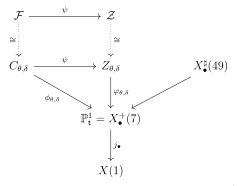
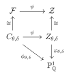

\(7\)-adic Galois representations of elliptic curves over the rationals via Kummer descent
Abstract
We show that the two modular curves of level \(49\) and genus \(9\) left open by the work of Rouse, Sutherland and Zureick-Brown, and of Furio and Lombardo, have no non-CM rational points. Together with the theorem of Furio and Lombardo on \(X_{\ns}^{+}(49)\), this completes the classification of the \(7\)-adic images of Galois of non-CM elliptic curves over \(\Q\). The proof is a Kummer descent on the superelliptic equations \(F(\x,\y) = k\,\w^{7}\) of Furio and Lombardo, in the cases \(7 \mid k\) that they left open. The covering curves are twists of the Fermat septic, they map to twists of the Klein quartic, and a \(7\)-adic computation shows that the twist attached to a solution is trivial. The rational points of the Klein quartic were determined by Hurwitz, who reduced the question to Fermat’s Last Theorem for exponent \(7\), proved by Lamé. Thus, the last open case of the \(7\)-adic part of Mazur’s Program B rests on Fermat’s Last Theorem for exponent \(7\).
1 Introduction
Let \(E\) be an elliptic curve over \(\Q\) without complex multiplication and let
\(\ell\) be a prime. By Serre’s open image theorem [Ser72], the
\(\ell\)-adic Galois representation \(\rho_{E,\ell^{\infty}}\) of \(\Gal_{\Q}\) has open image in
\(\GL_2(\Z_\ell)\), and Mazur’s Program B [Maz77, p. 109] asks for
the classification of the subgroups that occur. Rouse, Sutherland and the
second author [RSZB22, Theorem 1.6] carried out this classification up
to the determination of the rational points of a short list of modular curves
(we give their LMFDB labels [LMFDB26]): the curves \(X_{\ns}^{+}(\ell)\)
attached to the normalizer of a non-split Cartan subgroup, for primes
\(\ell > 17\); the four curves \(X_{\ns}^{+}(27) =\) 27.243.12.a.1,
\(X_{\ns}^{+}(25) =\) 25.250.14.a.1, \(X_{\ns}^{+}(49) =\)
49.1029.69.a.1 and \(X_{\ns}^{+}(121) =\) 121.6655.511.a.1;
and two curves of level \(49\) and genus \(9\), which, following Furio and Lombardo
[FL26, Definition 2.7, Remark 2.8], we denote by
\(X_{\ns}^{\sharp}(49) =\) 49.147.9.a.1 and
\(X_{\spc}^{\sharp}(49) =\) 49.196.9.a.1. The curve \(X_{\ns}^{+}(27)\)
has since been settled by Balakrishnan, Betts, Hast, Jha and Müller
[BBH+25], and \(X_{\ns}^{+}(49)\) by Furio and Lombardo, who proved that it
has exactly seven rational points, all of them CM
[FL26, Theorem 1.4]. Our work here builds on that of Furio
and Lombardo, and our main result is the computation of the rational points on
the curves \(X_{\ns}^{\sharp}(49)\) and \(X_{\spc}^{\sharp}(49)\), thereby
completing the classification of \(7\)-adic images of Galois for non-CM elliptic
curves over \(\Q\).
Furio and Lombardo reduced the computation of the rational points on \(X_{\ns}^{\sharp}(49)\) and \(X_{\spc}^{\sharp}(49)\) to the determination of the rational points of a single plane quartic \(X_{E_3}(7)\), a twist of the Klein quartic whose Jacobian has Mordell–Weil rank \(3\), and they conjectured that this quartic has exactly four rational points [FL26, Conjecture 1.6]. We do not address this conjecture: our proof is unconditional and takes a different route.
Remark 1.1. On September 18, 2026, Eray Karabiyik communicated to us that he was able to prove [FL26, Conjecture 1.6] directly [Kar26]. Karabiyik’s proof, in essence, does quadratic Chabauty over number fields by using an elliptic quotient over a number field of degree 21.
Remark 1.2. On September 28, 2026, Nguyen Xuan Tho emailed us a preprint [Xua26] with an AI-generated proof of [FL26, Conjecture 1.6].
The Diophantine statement
The curves \(X_{\ns}^{\sharp}(49)\) and \(X_{\spc}^{\sharp}(49)\) admit natural maps
of degree \(7\) to the genus zero curves \(X_{\ns}^{+}(7) =\) 7.21.0.a.1 and
\(X_{\spc}^{+}(7) =\) 7.28.0.a.1 attached to the normalizers of a
non-split and of a split Cartan subgroup of \(\GL_2(\F_7)\) (the precise
definitions are recalled in Section 2.2). The \(j\)-maps of
\(X_{\ns}^{+}(7)\) and \(X_{\spc}^{+}(7)\), in Zywina’s coordinates (the functions
\(J_6\) and \(J_2\) of [Zyw15, Section 1.4]; see
[Zyw15, Theorem 1.5(ii)] and [FL26, Theorem 2.1]),
have denominators \(f_{\ns}(\t)^7\) and \(f_{\spc}(\t)^7\), where
Both cubics define the field \(K \colonequals \Q(\zeta_7)^{+}\). Let \(F(\x,\y)\) denote the homogenization of \(f(\t)\):
\begin{equation} \label{eq:the-cubic-forms} F_{\ns}(\x,\y) \colonequals \x^3 - 7\x^2\y + 7\x\y^2 + 7\y^3, \qquad F_{\spc}(\x,\y) \colonequals \x^3 - 4\x^2\y + 3\x\y^2 + \y^3 . \tag{1.2} \end{equation}Furio and Lombardo showed [FL26, Proposition 3.1] that a non-CM rational point on \(X_{\ns}^{\sharp}(49)\) or \(X_{\spc}^{\sharp}(49)\) yields coprime integers \(x,y\) and an integer \(w\) such that \(F(x,y) = k w^7\), with \(k \in \{7,56\}\) in the non-split case and \(k \in \{1,7\}\) in the split case; we rederive this in Section 2. Our main result is the solution of these equations when \(7 \mid k\).
Theorem 1. Let \((F,k)\) be one of the pairs \((F_{\ns},7)\), \((F_{\ns},56)\), \((F_{\spc},7)\). The integer solutions \((x,y,w)\) of
\begin{equation} \label{eq:superelliptic-intro} F(\x,\y) = k\,\w^{7}, \qquad \gcd(x,y) = 1, \tag{1.3} \end{equation}all satisfy \(w = \pm 1\). Moreover, they are exactly the ones listed in Table 1.
| \((F,k)\) | \((F_{\ns},7)\) | \((F_{\ns},56)\) | \((F_{\spc},7)\) | |||
|---|---|---|---|---|---|---|
| \((x,y,w)\) | \(\pm (0,1,1)\) | \(\pm (7,1,1)\) | \(\pm (7,3,-1)\) | \(\pm (1,-1,1)\) | \(\pm (5,2,-1)\) | \(\pm (4,3,1)\) |
| curve | \(X_{\ns}^{+}(7)(\Q)\) | \(X_{\spc}^{+}(7)(\Q)\) | ||||
| \(t = x/y\) | \(0\) | \(7\) | \(7/3\) | \(-1\) | \(5/2\) | \(4/3\) |
| \(j(t)\) | \(0\) | non-CM | non-CM | \(0\) | non-CM | non-CM |
For the remaining pairs, those with \(7 \nmid k\), the analogous statement is a theorem of Furio and Lombardo: every solution of \(F_{\ns}(x,y) = kw^7\) with \(k \in \{1,8\}\) and of \(F_{\spc}(x,y) = w^7\) in coprime integers has \(w = \pm 1\) [FL26, Corollary 3.3(1), Theorem 3.5(1)]. We use this in the split case of the next theorem, where \(k = 1\) is allowed. The cases \(7 \mid k\) are precisely the ones that lead Furio and Lombardo to the twist of the Klein quartic of rank \(3\).
Theorem 2. Every rational point of \(X_{\ns}^{\sharp}(49)\) and of \(X_{\spc}^{\sharp}(49)\) is a cusp or a CM point. More precisely, every non-cuspidal rational point of either curve has \(j\)-invariant \(0\). In particular, the four non-CM points of Table 1 do not lift to rational points of \(X_{\ns}^{\sharp}(49)\), respectively of \(X_{\spc}^{\sharp}(49)\).
Corollary 3. Theorem 1.7 of [FL26] holds unconditionally. In particular, for every elliptic curve \(E\) over \(\Q\) without complex multiplication, the \(7\)-adic image \(G = \rho_{E,7^{\infty}}(\Gal_{\Q})\) satisfies one of the first two alternatives of [RSZB22, Theorem 1.6]: either \(X_G\) has infinitely many rational points and \(G\) is one of the groups of Sutherland and Zywina [SZ17], or \(G\) appears in [RSZB22, Table 1].
Proof.
Alternative (iii) of [RSZB22, Theorem 1.6] at level \(7^2\) is excluded by [FL26, Theorem 1.4], and alternative (iv) by Theorem 2.
Summary of the proofs
Furio and Lombardo attach to a solution of \(F(x,y) = kw^7\) a solution of a generalized Fermat equation of signature \((2,3,7)\), by means of the covariants of the cubic form \(F\) [FL26, Proposition 3.2, Corollary 3.3] (compare Bennett and Dahmen [BD13, Equation (4)]), and then apply the modular method of Poonen, Schaefer and Stoll [PSS07, Section 4]: the solutions are governed by rational points on twists \(X_E(7)\) of the Klein quartic [HK03]. When \(7 \nmid k\) the equation is \(a^2 + 28b^3 = 27c^7\) and all the twists that occur have rank at most \(2\); when \(7 \mid k\) it is \(a^2 + 196b^3 = 27c^7\), and one twist of rank \(3\) remains.
We instead descend directly on the superelliptic equation, in the style of Kummer [DG95, Section 2.1]. This method is streamlined and explained by Bruin in [Bru02, Section 3.1], [Bru06, Section 3]. The argument has six steps. Along the way, the set of classes by which we have to twist shrinks: from the Selmer group \(K(7,\calS)\) to a subset \(\Delta\) of \(49\) classes in step (2), and to \(7\) of these in step (4).
- (1) The equations (Section 2). A rational point of \(X_{\ns}^{\sharp}(49)\) or \(X_{\spc}^{\sharp}(49)\) lies over a point \(t = x/y\) of the genus zero curve \(X_{\ns}^{+}(7)\), respectively \(X_{\spc}^{+}(7)\), and the exponent \(7\) in \(F(x,y) = kw^7\) comes from the primes of potentially multiplicative reduction. At such a prime the Tate curve makes inertia act unipotently, and the shape of the level \(49\) group forces the valuation of \(F(x,y)\) to be divisible by \(7\). This recovers [FL26, Proposition 3.1]. In the split case the argument of [FL26] uses an element of the decomposition group that does not exist at the primes \(p\) with \(p^{6} \equiv 1 \pmod{49}\); the proof given here uses only inertia, together with the position of the rational cusp (Lemma 2.5, Remark 2.7).
- (2)
Kummer descent to twists of the Fermat septic (Section 3). Let \(\theta \in K\) be a root of \(f\). Over \(K\) the form \(F(\x,\y)\) is the norm of \(\x - \theta \y\), and since \(K\) has class number one, a solution \((x,y,w)\) to (1.3) yields \(x - \theta y = \delta\omega^7\) with \(\omega \in K^{\times}\) and \(\delta\) an \(\calS\)-unit, i.e., a unit outside the set \(\calS\) of primes dividing \(k\disc(f)\). So \(x-\theta y\) is a seventh power in \(K\) up to a factor \(\delta\) that only matters through its class in the Selmer group \(K(7,\calS) = \OKS^{\times}/\OKS^{\times 7}\), and comparing norms restricts this class to an explicit subset \(\Delta(\theta,k)\) of \(49\) classes (Proposition 3.3). Each \(\delta \in \Delta(\theta,k)\) gives a plane curve, as follows. Write \(\omega = a_0 + a_1\theta + a_2\theta^2\) with \(a_n \in \Q\), and put \(\mathbf{a} = (a_0,a_1,a_2)\). There are homogeneous ternary forms \(P^{(0)}_{\theta,\delta}, P^{(1)}_{\theta,\delta}, P^{(2)}_{\theta,\delta}\) of degree \(7\) with rational coefficients such that
\[ \delta\,(a_0 + a_1\theta + a_2\theta^2)^{7} = P^{(0)}_{\theta,\delta}(\mathbf{a}) + P^{(1)}_{\theta,\delta}(\mathbf{a})\,\theta + P^{(2)}_{\theta,\delta}(\mathbf{a})\,\theta^{2}. \]Since \(x - \theta y\) has no \(\theta^{2}\) term, the point \((a_0:a_1:a_2)\) lies on the plane septic \(C_{\theta,\delta} \colon P^{(2)}_{\theta,\delta} = 0\) over \(\Q\), of genus \(15\), and \((x : y) = (P^{(0)}_{\theta,\delta}(\mathbf{a}) : -P^{(1)}_{\theta,\delta}(\mathbf{a}))\). So the rational points of the curves \(C_{\theta,\delta}\) account for all the solutions. Over \(K\) each of these curves becomes a diagonal septic, a twist of the Fermat curve \(\calF\colon \sfu_0^7 + \sfu_1^7 + \sfu_2^7 = 0\) to which it is isomorphic over \(\Qbar\). Remarkably, all six pairs \((F,k)\) that arise in Section 2 lead to the same \(49\) twists of the Fermat septic.
- (3) Quotient to twists of the Klein quartic (Section 4). The Fermat septic \(\calF\) is a cyclic unramified cover of degree \(7\) of the Klein quartic curve \(\calZ \colon \sfv_0^3\sfv_1 + \sfv_1^3\sfv_2 + \sfv_2^3\sfv_0= 0\) [Elk99, Section 3.2]. This cover survives the twisting: each of our septics \(C_{\theta,\delta}\) maps, over \(\Q\), onto a twist \(Z_{\theta,\delta}\) of the Klein quartic, so it is enough to find the rational points of these plane quartics. Which twist occurs is recorded by the class of \(\delta/f'(\theta)\) in the group \(K^{\times}/\Q^{\times}(K^{\times})^{3+\sigma}\) (Lemma 4.3). For \(\delta \in \Delta(\theta,k)\) this class lies in a subgroup of order \(7\), so the \(49\) septics of step (2) map to at most \(7\) quartics up to isomorphism, and in fact to only three (Proposition 5.6).
- (4) The \(7\)-adic step (Section 5). When \(7 \mid F(x,y)\), a short computation in the completion of \(K\) at \(7\) shows that this class vanishes (Proposition 5.3): a homomorphism \(\kappa\) to \(\F_7\) must vanish on it. This rules out \(42\) of the \(49\) classes \(\delta \in \Delta(\theta,k)\), and the remaining \(7\) all give quartics \(\Q\)-isomorphic to one fixed quartic \(Z_0\). A classical change of coordinates of Klein, defined over \(K\) [Kle78, §5], [Elk99, (1.3)], gives an isomorphism over \(\Q\) between \(Z_0\) and the Klein quartic itself (Proposition 4.4, Corollary 4.7). Conversely, for the other \(42\) classes the quartic \(Z_{\theta,\delta}\) is not isomorphic to the Klein quartic over \(\Q\) (Proposition 5.6). The cases \(7 \mid k\) are exactly those that were missing from [FL26].
- (5) Hurwitz (Lemma 4.5). The Klein quartic has only its three obvious rational points: Hurwitz [Hur08] showed that any other would give a nontrivial solution of Fermat’s equation of exponent \(7\), and Elkies [Elk99, Section 3.1] gives a direct proof through an elliptic quotient of rank zero.i Pulling the three points back gives the solutions listed in Theorem 1. So, via Hurwitz, the last open case of the \(7\)-adic Program B rests on Fermat’s Last Theorem for exponent \(7\).
- (6) From Theorem 1 to Theorem 2 (Section 6). Theorem 1, together with the result of Furio and Lombardo for \(k = 1\) recalled before Theorem 2, leaves eight non-CM \(j\)-invariants of points of \(X_{\ns}^{+}(7)\) or \(X_{\spc}^{+}(7)\) that could still lift to a rational point of \(X_{\ns}^{\sharp}(49)\) or \(X_{\spc}^{\sharp}(49)\) (Table 4). One could rule this out using the equations for the maps \(X_{\bullet}^{\sharp}(49) \to X_{\bullet}^{+}(7)\); instead we use the following group-theoretic criterion (Corollary 6.2). Let \(E\) be an elliptic curve over \(\Q\) whose mod-\(49\) Galois image is contained, up to conjugacy, in one of the groups \(G_{\ns}^{\sharp}(49)\) or \(G_{\spc}^{\sharp}(49)\) defining these two curves (Definition 2.3), and let \(p \neq 7\) be a prime of good reduction, with trace of Frobenius \(a_p\). If \(7 \nmid a_p(a_p^2 - 4p)\), then \(\Frob_p^{48}\) acts on \(E[49](\Qbar)\) as a scalar. Indeed, modulo \(7\) such a Frobenius lies in the Cartan subgroup, so its \(48\)th power is \(1\) modulo \(7\), and the shape of the level \(49\) group forces this power to be scalar modulo \(49\). For each of the eight candidates, the criterion fails at a small prime \(p\). The CM points are handled by the same criterion, together with [FL26, Lemma 2.11] in the non-split case.
The relevance of quotients of Fermat curves to descent problems of this kind goes back at least to Faddeev [Fad61], Gross and Rohrlich [GR78], McCallum [McC88], and McCallum and Tzermias [MT03]. Twists of the Fermat septic covering twists of the Klein quartic also appear in [PSS07, Section 10.1]. Figure 1 summarizes the curves and maps involved.

Code
Every computational claim in this paper is verified by Magma [BCP97]
code. The code and the source of this paper are available at
https://github.com/sarangop1728/7-adic-settlers-of-cartan. Both are generated
from one literate file, in which each statement of the paper is followed by the
code that verifies it. There is one
script for each of
Sections 2 to 6, and
a script descent.m that runs the descent of
Sections 3 to 5 from the Selmer sets to
Table 1; each runs in under a minute. A web version of the
paper, at https://sarangop1728.github.io/7-adic-settlers-of-cartan/, shows the
code and its output below the statements it verifies.
AI use disclosure
Throughout this project we used AI models (GPT-5.6 Sol, and Claude Opus 5, Opus
5.5, and Fable 5.1) for mathematical exploration, to find simplifications of
our arguments, to write and run Magma code, and for copy-editing. The origin
of the main ideas and the precise mathematical use of AI are described in more
detail in Section 7. All mathematical results in this paper, and the code
and computations verifying them, have been thoroughly vetted by the authors,
who take full responsibility for the content of this work.
Acknowledgements
We thank Filip Najman for pointing out to us that everything reduces to the Klein quartic.
Notation
Throughout, \(\zeta_7\) is a fixed primitive seventh root of unity, \(K = \Q(\zeta_7)^{+}\) is the totally real cyclic cubic field of discriminant \(49\), which has class number one, and \(\sigma\) is the generator of \(\Gal(K/\Q)\) induced by \(\zeta_7 \mapsto \zeta_7^{2}\). We write \(\Tr\) and \(\Norm\) for the trace and norm of \(K/\Q\). Lower-case sans-serif letters \(\x,\y,\w,\t,\dots\) are polynomial variables, and the corresponding italic letters are their values. We write \(f\) for one of the cubics in (1.1), \(F\) for its homogenization, and \(\theta \in K\) for the following root of \(f\):
\begin{equation} \label{eq:thetas} \theta_{\spc} \colonequals 1 - (\zeta_7 + \zeta_7^{-1}), \qquad \theta_{\ns} \colonequals 3 + 2(\zeta_7 + \zeta_7^{-1}) = 5 - 2\theta_{\spc} . \tag{1.4} \end{equation}One has \(\sigma(\theta_{\spc}) = -\theta_{\spc}^2 + 2\theta_{\spc} + 2\), the ring of integers of \(K\) is \(\OO_K = \Z[\theta_{\spc}]\), and \(\Z[\theta_{\ns}]\) has index \(8\) in \(\OO_K\). The prime \(2\) is inert in \(K\) and \(7\) is totally ramified. Since \(\theta_{\ns} - \sigma^{i}(\theta_{\ns}) = -2\bigl(\theta_{\spc} - \sigma^{i}(\theta_{\spc})\bigr)\) and \(f'(\theta) = \prod_{i=1,2}\bigl(\theta - \sigma^{i}(\theta)\bigr)\),
\begin{equation} \label{eq:fprime} f_{\ns}'(\theta_{\ns}) = 4f_{\spc}'(\theta_{\spc}), \qquad \Norm\bigl(f_{\spc}'(\theta_{\spc})\bigr) = -\disc(f_{\spc}) = -7^{2} . \tag{1.5} \end{equation}Magma check: (1.4) magma/equations.m
The roots \( \theta_{sp} = 1 - (\zeta_7 + \zeta_7^{-1}) \) and \( \theta_{ns} = 3 + 2(\zeta_7 + \zeta_7^{-1}) = 5 - 2\theta_{sp} \), the generator \( \sigma \) of \( \mathrm{Gal}(K/\mathbb{Q}) \), class number one, the discriminants and the index \( [\mathcal{O}_K : \mathbb{Z}[\theta_{ns}]] = 8 \), the splitting of \( 2 \) and \( 7 \), and the two identities of (1.5).
statement("(1.4), (1.5)", "eq:thetas", "the field K, the roots theta, and sigma"); show("theta_sp", "1 - (zeta + zeta^-1), a root of " cat Sprint(fSplit)); show("theta_ns", "3 + 2(zeta + zeta^-1) = 5 - 2 theta_sp, a root of " cat Sprint(fNonsplit)); show("sigma(theta_sp)", sigma(theta)); show("class number of K", ClassNumber(K)); show("disc(f_sp), disc(f_ns), disc(O_K)", joined([ factored(Discriminant(fSplit)), factored(Discriminant(fNonsplit)), factored(Discriminant(OK)) ], ", ")); // theta_ns = 5 - 2 theta_sp is a root of f_ns assert Evaluate(fNonsplit, thetaNonsplit) eq 0; // theta_sp = 1 - (zeta + zeta^-1) assert embedInCyclotomic(thetaSplit) eq 1 - zetaTrace(1); // theta_ns = 3 + 2 (zeta + zeta^-1) assert embedInCyclotomic(thetaNonsplit) eq 3 + 2*zetaTrace(1); // sigma is induced by zeta -> zeta^2 assert embedInCyclotomic(sigma(theta)) eq 1 - zetaTrace(2); // sigma(theta_sp) = -theta_sp^2 + 2 theta_sp + 2 assert sigma(theta) eq -theta^2 + 2*theta + 2; // sigma has order 3 assert sigma(theta) ne theta; assert sigma(sigma(sigma(theta))) eq theta; // K has class number one assert ClassNumber(K) eq 1; // disc(f_sp) = 7^2 = disc(O_K), so O_K = Z[theta_sp] assert Discriminant(fSplit) eq 49; assert Discriminant(OK) eq 49; // disc(f_ns) = 2^6 7^2, so [O_K : Z[theta_ns]] = 8 assert Discriminant(fNonsplit) eq 2^6*7^2; // 2 is inert in K: one prime, unramified, of degree 3 factorizationOf2 := Factorization(2*OK); assert #factorizationOf2 eq 1; assert factorizationOf2[1][2] eq 1; assert Degree(factorizationOf2[1][1]) eq 3; // 7 is totally ramified in K assert #factorizationOf7 eq 1; assert factorizationOf7[1][2] eq 3; // (1.5): f_ns'(theta_ns) = 4 f_sp'(theta_sp) assert derivativeAtThetaNonsplit eq 4*derivativeAtThetaSplit; // (1.5): Norm(f_sp'(theta_sp)) = -disc(f_sp) = -7^2 assert Norm(derivativeAtThetaSplit) eq -49; verified();
Output
theta_sp: 1 - (zeta + zeta^-1), a root of t^3 - 4*t^2 + 3*t + 1 theta_ns: 3 + 2(zeta + zeta^-1) = 5 - 2 theta_sp, a root of t^3 - 7*t^2 + 7*t + 7 sigma(theta_sp): -theta^2 + 2*theta + 2 class number of K: 1 disc(f_sp), disc(f_ns), disc(O_K): 7^2, 2^6 * 7^2, 7^2 verified
2 The equations
This section rederives [FL26, Proposition 3.1], the passage from rational points on the modular curves \(X_{\ns}^{\sharp}(49)\) and \(X_{\spc}^{\sharp}(49)\) to the superelliptic equations.
2.1 Zywina’s models
By [Zyw15, Section 1.4, Theorem 1.5(ii)], where \(j_{\ns}\) and \(j_{\spc}\) below are the functions \(J_6\) and \(J_2\) (see also [FL26, Theorem 2.1]), the \(j\)-maps of \(X_{\ns}^{+}(7) \cong \Pone_{\t}\) and \(X_{\spc}^{+}(7) \cong \Pone_{\t}\) are given by the rational functions
\begin{align} \label{eq:jns} j_{\ns}(\t) &= \frac{64\,\t^{3}(\t^{2}+7)^{3}(\t^{2}-7\t+14)^{3}(5\t^{2}-14\t-7)^{3}} {(\t^{3}-7\t^{2}+7\t+7)^{7}}, \tag{2.1}\\ \label{eq:jsp} j_{\spc}(\t) &= \frac{\t(\t+1)^{3}(\t^{2}-5\t+1)^{3}(\t^{2}-5\t+8)^{3} (\t^{4}-5\t^{3}+8\t^{2}-7\t+7)^{3}} {(\t^{3}-4\t^{2}+3\t+1)^{7}} . \tag{2.2} \end{align}The first has degree \(21\) and its three poles, the roots of \(f_{\ns}\), are the cusps of \(X_{\ns}^{+}(7)\). The second has degree \(28\); it has poles of order \(7\) at the roots of \(f_{\spc}\) and at \(t = \infty\), the four cusps of \(X_{\spc}^{+}(7)\), of which only \(t = \infty\) is rational. Homogenizing, \(j_{\ns} = H_{\ns}^{3}/F_{\ns}^{7}\) and \(j_{\spc} = \x H_{\spc}^{3}/(\y F_{\spc})^{7}\), where \(F_{\ns}\) and \(F_{\spc}\) are the cubic forms (1.2) and
\begin{align*} H_{\ns}(\x,\y) &\colonequals 4\x(\x^{2}+7\y^{2})(\x^{2}-7\x\y+14\y^{2})(5\x^{2}-14\x\y-7\y^{2}), \\ H_{\spc}(\x,\y) &\colonequals (\x+\y)(\x^{2}-5\x\y+\y^{2})(\x^{2}-5\x\y+8\y^{2}) (\x^{4}-5\x^{3}\y+8\x^{2}\y^{2}-7\x\y^{3}+7\y^{4}) . \end{align*}The following elementary facts about these forms are used throughout.
Magma check: (2.1) magma/equations.m
A transcription check of the two \( j \)-maps: they take the expected CM values. For \( X_{ns}^+(7) \) these are the eight CM points among Kenku's twelve integral points, as listed by Elkies.
statement("(2.1), (2.2)", "eq:jns", "the j-maps of Zywina's models"); show("CM discriminants of j_ns at t = oo, 0, 1, -1, 2, 3, 5, -3/5", [ cmDiscriminant(jNonsplit(pair[1], pair[2])) : pair in [[1,0],[0,1],[1,1],[-1,1],[2,1],[3,1],[5,1],[-3,5]] ]); show("CM discriminants of j_sp at t = 0, -1, 1, 2, 3", [ cmDiscriminant(jSplit(pair[1], pair[2])) : pair in [[0,1],[-1,1],[1,1],[2,1],[3,1]] ]); // CM values of j_ns assert [ cmDiscriminant(jNonsplit(pair[1], pair[2])) : pair in [[1,0],[0,1],[1,1],[-1,1],[2,1],[3,1],[5,1],[-3,5]] ] eq [ -8, -3, -11, -16, -67, -4, -43, -163 ]; // CM values of j_sp assert [ cmDiscriminant(jSplit(pair[1], pair[2])) : pair in [[0,1],[-1,1],[1,1],[2,1],[3,1]] ] eq [ -3, -3, -19, -12, -27 ]; jFunctionNonsplit := Evaluate(HNonsplit, [t, 1])^3/Evaluate(FNonsplit, [t, 1])^7; jFunctionSplit := t*Evaluate(HSplit, [t, 1])^3/Evaluate(FSplit, [t, 1])^7; // j_ns has degree 21 and j_sp has degree 28 assert Max(Degree(Numerator(jFunctionNonsplit)), Degree(Denominator(jFunctionNonsplit))) eq 21; assert Max(Degree(Numerator(jFunctionSplit)), Degree(Denominator(jFunctionSplit))) eq 28; // the poles of j_sp: order 7 at the roots of f_sp and at oo assert Denominator(jFunctionSplit) eq fSplit^7; assert Degree(Numerator(jFunctionSplit)) - Degree(Denominator(jFunctionSplit)) eq 7; verified();
Output
CM discriminants of j_ns at t = oo, 0, 1, -1, 2, 3, 5, -3/5: [ -8, -3, -11, -16, -67, -4, -43, -163 ] CM discriminants of j_sp at t = 0, -1, 1, 2, 3: [ -3, -3, -19, -12, -27 ] verified
Lemma 2.1. Let \(x,y\) be coprime integers.
- (1) The greatest common divisor of \(F_{\ns}(x,y)\) and \(H_{\ns}(x,y)\) divides \(2^{21}7^{7}\), and that of \(xH_{\spc}(x,y)\) and \(yF_{\spc}(x,y)\) divides \(7^{7}\). Moreover \(\gcd(y,F(x,y)) = 1\) for both forms.
- (2)
\(v_7(F(x,y)) \leq 1\) for both forms. Moreover:
- (a) \(7 \mid F_{\ns}(x,y)\) if and only if \(7 \mid x\);
- (b) \(7 \mid F_{\spc}(x,y)\) if and only if \(7 \mid x+y\).
- (3) \(v_2(F_{\ns}(x,y)) \in \{0,3\}\), with value \(3\) exactly when \(x\) and \(y\) are both odd; and \(F_{\spc}(x,y)\) is odd.
- (4) \(F_{\ns}(\x,\y) = F_{\spc}(\x-5\y,\,-2\y)\).
Proof.
One computes the resultants \(\operatorname{res}_{\x}(F_{\ns},H_{\ns}) = \pm 2^{21}7^{7}\y^{21}\) and \(\operatorname{res}_{\x}(F_{\spc},H_{\spc}) = \pm 7^{7}\y^{27}\). Both forms \(F\) are congruent to \(\x^{3}\) modulo \(\y\), and \(H_{\spc} \equiv \x^{9}\) modulo \(\y\), while \(F_{\spc} \equiv \y^{3}\) modulo \(\x\); this gives the coprimality statements and (1). Parts (2) and (3) are congruence computations. Call a pair \((x,y) \in (\Z/n\Z)^2\) primitive if it is not congruent to \((0,0)\) modulo any prime \(p \mid n\); the reduction of a coprime pair of integers is primitive. Then \(F(x,y) \equiv 0 \pmod{49}\) and \(F_{\ns}(x,y) \equiv 0 \pmod{16}\) have no primitive solutions, \(F_{\ns} \equiv \x^3\) and \(F_{\spc} \equiv (\x+\y)^3 \pmod 7\), \(F_{\ns} \equiv (\x+\y)^3 \pmod 2\), and \(F_{\spc}(x,y) \equiv 1 \pmod 2\) for the three primitive pairs \((1,0)\), \((0,1)\), \((1,1)\) modulo \(2\). That \(v_2(F_{\ns}(x,y))\) is a multiple of \(3\) also follows from the fact that \(2\) is inert in \(K\). Part (4) holds because \(\theta_{\ns} = 5 - 2\theta_{\spc}\): indeed \(x - \theta_{\ns}y = (x - 5y) - \theta_{\spc}(-2y)\).
Magma check: Lemma 2.1 magma/equations.m
The forms are the norm forms of \( x - \theta y \). Then the four items of the lemma: the resultants (the exponent of \( \mathsf{y} \) is \( \deg F \cdot \deg H \)), and the congruences that bound the valuations of \( F(x,y) \) at \( 2 \) and \( 7 \) for coprime \( x, y \); finally the substitution \( x - \theta_{ns}y = (x - 5y) - \theta_{sp}(-2y) \).
statement("Lemma 2.1", "lem:arithmetic-of-forms", "the arithmetic of the forms"); resultantNonsplit := Resultant(FNonsplit, HNonsplit, x); resultantSplit := Resultant(FSplit, HSplit, x); show("Res_x(F_ns, H_ns)", factored(Coefficients(resultantNonsplit)[1]) cat " * y^" cat Sprint(TotalDegree(resultantNonsplit))); show("Res_x(F_sp, H_sp)", factored(Coefficients(resultantSplit)[1]) cat " * y^" cat Sprint(TotalDegree(resultantSplit))); // F_ns, F_sp are the norm forms of x - theta y (on a sample of pairs) samplePairs := [[1,0],[0,1],[1,1],[2,-3],[5,7]]; assert forall{ pair : pair in samplePairs | Norm(pair[1] - thetaNonsplit*pair[2]) eq Evaluate(FNonsplit, pair) }; assert forall{ pair : pair in samplePairs | Norm(pair[1] - thetaSplit*pair[2]) eq Evaluate(FSplit, pair) }; // (1): Res_x(F_ns, H_ns) = +-2^21 7^7 y^21 assert resultantNonsplit in { 2^21*7^7*y^21, -2^21*7^7*y^21 }; // (1): Res_x(F_sp, H_sp) = +-7^7 y^27 assert resultantSplit in { 7^7*y^27, -7^7*y^27 }; // (1): both forms F are x^3 mod y assert Evaluate(FSplit, [x, 0]) eq x^3; assert Evaluate(FNonsplit, [x, 0]) eq x^3; // (1): H_sp = x^9 mod y assert Evaluate(HSplit, [x, 0]) eq x^9; // (1): F_sp = y^3 mod x assert Evaluate(FSplit, [0, y]) eq y^3; // (2) and (3): F mod 7, 49, 2, 8, 16 on primitive pairs function primitiveZerosModulo(F, modulus) return [ [a,b] : a, b in [0..modulus-1] | GCD([a,b,modulus]) eq 1 and Evaluate(F, [a,b]) mod modulus eq 0 ]; end function; show("primitive zeros of F_ns mod 7", primitiveZerosModulo(FNonsplit, 7)); show("primitive zeros of F_sp mod 7", primitiveZerosModulo(FSplit, 7)); // (2): F_ns = 0 and F_sp = 0 mod 49 have no primitive solutions assert #primitiveZerosModulo(FNonsplit, 49) eq 0; assert #primitiveZerosModulo(FSplit, 49) eq 0; // (2a): 7 | F_ns iff 7 | x assert forall{ pair : pair in primitiveZerosModulo(FNonsplit, 7) | pair[1] eq 0 }; // (2b): 7 | F_sp iff 7 | x + y assert forall{ pair : pair in primitiveZerosModulo(FSplit, 7) | (pair[1] + pair[2]) mod 7 eq 0 }; // (3): F_ns = 0 mod 16 has no primitive solutions, and F_ns = 0 mod 8 does assert #primitiveZerosModulo(FNonsplit, 16) eq 0; assert #primitiveZerosModulo(FNonsplit, 8) gt 0; // (3): F_ns is even only for x, y odd, and then 8 | F_ns assert forall{ pair : pair in primitiveZerosModulo(FNonsplit, 2) | IsOdd(pair[1]) and IsOdd(pair[2]) }; oddPairsMod8 := [ [a,b] : a, b in [0..7] | IsOdd(a) and IsOdd(b) ]; assert forall{ pair : pair in oddPairsMod8 | Evaluate(FNonsplit, pair) mod 8 eq 0 }; // (3): F_sp is odd on primitive pairs assert #primitiveZerosModulo(FSplit, 2) eq 0; // (4): F_ns(x,y) = F_sp(x - 5y, -2y) assert FNonsplit eq Evaluate(FSplit, [x - 5*y, -2*y]); verified();
Output
Res_x(F_ns, H_ns): 2^21 * 7^7 * y^21 Res_x(F_sp, H_sp): 7^7 * y^27 primitive zeros of F_ns mod 7: [ [ 0, 1 ], [ 0, 2 ], [ 0, 3 ], [ 0, 4 ], [ 0, 5 ], [ 0, 6 ] ] primitive zeros of F_sp mod 7: [ [ 1, 6 ], [ 2, 5 ], [ 3, 4 ], [ 4, 3 ], [ 5, 2 ], [ 6, 1 ] ] verified
2.2 The groups
We recall [FL26, Definitions 2.6 and 2.7]. Let \(\varepsilon = 3\), the least quadratic non-residue modulo \(7\). For \(\bullet \in \{\ns,\spc\}\), Table 2 lists the Cartan subalgebra \(\mathfrak{c}_{\bullet}\) of \(M_2(\F_7)\), the Cartan subgroup \(C_{\bullet}(7) = \mathfrak{c}_{\bullet} \cap \GL_2(\F_7)\) and its normalizer \(C_{\bullet}^{+}(7)\) in \(\GL_2(\F_7)\), and a subspace \(V_{\bullet}\) of \(M_2(\F_7)\). Let \(N \colonequals I + 7M_2(\F_7)\) be the kernel of reduction \(\GL_2(\Z/49) \to \GL_2(\F_7)\). Whenever \(\bullet\) is fixed, as in the rest of this section, in Proposition 2.6 and in Lemma 6.1, we drop it and the level from the notation, and write \(\mathfrak{c}\), \(C\), \(C^{+}\), \(V\) and \(G^{\sharp}\) for \(\mathfrak{c}_{\bullet}\), \(C_{\bullet}(7)\), \(C_{\bullet}^{+}(7)\), \(V_{\bullet}\) and \(G_{\bullet}^{\sharp}(49)\).
| \(\bullet\) | \(\mathfrak{c} = \mathfrak{c}_{\bullet}\) | \(C = C_{\bullet}(7)\) | \(C^+ = C_{\bullet}^{+}(7)\) | \(V = V_{\bullet}\) |
|---|---|---|---|---|
| \(\ns\) | \(\tabmatrix{a & \varepsilon b \\ b & a}\) | \(\tabmatrix{a & \varepsilon b \\ b & a}\) | \(C_{\ns}(7) \cup \tabmatrix{1 & 0 \\ 0 & -1} C_{\ns}(7)\) | \(\tabmatrix{a & \varepsilon b \\ -b & d}\) |
| \(\spc\) | \(\tabmatrix{a & 0 \\ 0 & d}\) | \(\tabmatrix{a & 0 \\ 0 & d}\) | \(C_{\spc}(7) \cup \tabmatrix{0 & 1 \\ 1 & 0} C_{\spc}(7)\) | \(\tabmatrix{a & b \\ c & a}\) |
The groups \(G^{\sharp}\) of Furio and Lombardo are the subgroups of \(\GL_2(\Z/49)\) that reduce onto \(C^{+}\) and meet \(N\) in \(I + 7V\). The following lemma shows that such a subgroup exists and is unique up to conjugation, and records its properties; the definition follows it.
Lemma 2.2. Let \(\bullet \in \{\ns,\spc\}\).
- (1) \(V\) is the direct sum of the scalar matrices and of the orthogonal complement of \(\mathfrak{c}\) for the trace pairing \((A,B) \mapsto \operatorname{tr}(AB)\). It has dimension \(3\), it is stable under conjugation by \(C^{+}\), and \(V \cap \mathfrak{c}\) consists of the scalar matrices.
- (2) There is a subgroup \(G\) of \(\GL_2(\Z/49)\) that reduces onto \(C^{+}\) and meets \(N\) in \(I + 7V\), and any two such subgroups are conjugate by an element of \(N\).
- (3) Such a group \(G\) has index \(147\) if \(\bullet = \ns\) and \(196\) if \(\bullet = \spc\), it has surjective determinant, and it contains \(-I\).
Proof.
(1) The subalgebra \(\mathfrak{c}_{\spc}\) is spanned by \(\begin{psmallmatrix*}[r] 1 & 0 \\ 0 & 0\end{psmallmatrix*}\) and \(\begin{psmallmatrix*}[r] 0 & 0 \\ 0 & 1\end{psmallmatrix*}\), and \(\mathfrak{c}_{\ns}\) by \(I\) and \(J \colonequals \begin{psmallmatrix*}[r] 0 & \varepsilon \\ 1 & 0\end{psmallmatrix*}\). For \(B = \begin{psmallmatrix*}[r] a & b \\ c & d\end{psmallmatrix*}\), the traces of these four products with \(B\) are \(a\), \(d\), \(a + d\) and \(b + \varepsilon c\). So the orthogonal complement of \(\mathfrak{c}_{\spc}\) is the space of matrices with zero diagonal, and that of \(\mathfrak{c}_{\ns}\) the space of matrices \(\begin{psmallmatrix*}[r] a & -\varepsilon c \\ c & -a\end{psmallmatrix*}\); neither contains a nonzero scalar, and adding the scalar matrices gives \(V_{\spc}\) and (renaming \(c\) as \(-b\)) \(V_{\ns}\), which are thus the stated direct sums, of dimension \(3\). Conjugation by \(g \in C^{+}\) fixes the scalars, preserves the trace pairing and normalizes \(C\), hence \(\mathfrak{c}\) and its orthogonal complement; so it preserves \(V\). Finally, a diagonal matrix in \(V_{\spc}\) is scalar, and \(\begin{psmallmatrix*}[r] a & \varepsilon b \\ b & a\end{psmallmatrix*} \in V_{\ns}\) forces \(b = -b = 0\).
(2) Modulo \(49\) we have \((I + 7A)(I + 7B) = I + 7(A + B)\) and \(h(I + 7A)h^{-1} = I + 7\bar hA\bar h^{-1}\), with \(\bar h\) the reduction of \(h\). So \(A \mapsto I + 7A\) is an isomorphism of \(M_2(\F_7)\) onto \(N\), and by (1) the subgroup \(I + 7V\) is normal in the preimage \(P\) of \(C^{+}\) in \(\GL_2(\Z/49)\). Put \(Q \colonequals P/(I + 7V)\) and \(\bar N \colonequals N/(I + 7V)\), a normal subgroup of \(Q\) of order \(7\) with \(Q/\bar N \cong C^{+}\) of order \(72\) or \(96\), prime to \(7\). If \(G\) is as in the statement, then \(I + 7V \subseteq G \subseteq P\), and \(H \colonequals G/(I + 7V)\) is a complement of \(\bar N\) in \(Q\): \(H \cap \bar N = (G \cap N)/(I + 7V)\) is trivial, and \(H\) maps onto \(Q/\bar N\) because \(G\) reduces onto \(C^{+}\). Conversely, the preimage in \(P\) of a complement of \(\bar N\) is a subgroup as in the statement. By the Schur–Zassenhaus theorem, complements of \(\bar N\) exist, and any two are conjugate in \(Q = \bar N H\), hence by an element of \(\bar N\); taking preimages, any two subgroups as in the statement are conjugate by an element of \(N\).
(3) As \(G \cap N = I + 7V\) has order \(7^{3}\) and \(G/(G \cap N) \cong C^{+}\), we have \(\#G = 7^{3}\,\#C^{+}\); since \(\#\GL_2(\Z/49) = 7^{4}\,\#\GL_2(\F_7) = 7^{5} \cdot 288\), the index of \(G\) is \(49 \cdot 288/72 = 196\) in the split case and \(49 \cdot 288/96 = 147\) in the non-split case. Next, \(\det(I + 7A) = 1 + 7\operatorname{tr}(A)\) modulo \(49\) and \(\operatorname{tr}(aI) = 2a\), so \(\det(G)\) contains \(\det(I + 7V) = 1 + 7\Z/49\), the kernel of \((\Z/49)^{\times} \to \F_7^{\times}\); and \(\det(G)\) reduces onto \(\det(C^{+}) = \F_7^{\times}\), since \(\det\) is \(ad\) on \(C_{\spc}(7)\) and the norm \(\F_{49}^{\times} \to \F_7^{\times}\) on \(C_{\ns}(7)\). Hence \(\det(G) = (\Z/49)^{\times}\). Finally, let \(g \in G\) reduce to \(-I\) and write \(g = -(I + 7B)\). Then \(g^{2} = I + 14B \in G \cap N = I + 7V\), so \(2B\), hence \(B\), lies in \(V\); thus \(I + 7B \in G\) and \(-I = g(I + 7B)^{-1} \in G\).
Magma check: Lemma 2.2 magma/equations.m
The groups \( G^\sharp(49) \) of [FL, Definition 2.7], generated by \( I + 7V
\) and a lift of \( C^+(7) \) of order prime to \( 7 \): their orders and
indices (the labels are 49.147.9.1 and 49.196.9.1), \( -I \), and \( \det
\). The construction is the block setup-groups, shown here; theorem-2.m
uses it too.
Zmod49 := Integers(49); GL2mod49 := GL(2, Zmod49); function matrixMod49(a, b, c, d) return GL2mod49 ! [a, b, c, d]; end function; function teichmullerLift(a) // the Teichmuller lift of a in F_7^* return (Zmod49 ! a)^7; end function; leastNonResidueMod7 := 3; // I + 7V, for a list of matrices spanning V function kernelGenerators(spanningSet) return [ GL2mod49 ! [1 + 7*A[1], 7*A[2], 7*A[3], 1 + 7*A[4]] : A in spanningSet ]; end function; VSplit := [ [1,0,0,1], [0,1,0,0], [0,0,1,0] ]; // (a b; c a) VNonsplit := [ [1,0,0,0], [0,0,0,1], [0, leastNonResidueMod7, -1, 0] ]; // (a eps*b; -b d) // lifts of C^+(7) of order prime to 7 generatorOfF49 := matrixMod49(1, leastNonResidueMod7, 1, 1); // 1 + sqrt(eps) GNonsplitSharp := sub< GL2mod49 | [ generatorOfF49^49, matrixMod49(1, 0, 0, -1) ] cat kernelGenerators(VNonsplit) >; GSplitSharp := sub< GL2mod49 | [ matrixMod49(teichmullerLift(3), 0, 0, 1), matrixMod49(1, 0, 0, teichmullerLift(3)), matrixMod49(0, 1, 1, 0) ] cat kernelGenerators(VSplit) >; statement("Lemma 2.2", "lem:groups", "the groups G^#(49)"); show("#G_ns^#(49), index in GL_2(Z/49)", [ #GNonsplitSharp, Index(GL2mod49, GNonsplitSharp) ]); show("#G_sp^#(49), index in GL_2(Z/49)", [ #GSplitSharp, Index(GL2mod49, GSplitSharp) ]); // 1 + sqrt(3) generates F_49^* assert Order(GL(2, GF(7)) ! [1, leastNonResidueMod7, 1, 1]) eq 48; // #G_ns^# = 2 * 7^3 * 48, of index 147 assert #GNonsplitSharp eq 2*7^3*48; assert Index(GL2mod49, GNonsplitSharp) eq 147; // #G_sp^# = 2 * 7^3 * 36, of index 196 assert #GSplitSharp eq 2*7^3*36; assert Index(GL2mod49, GSplitSharp) eq 196; // -I lies in both groups minusIdentity := GL2mod49 ! [-1,0,0,-1]; assert minusIdentity in GNonsplitSharp; assert minusIdentity in GSplitSharp; // det is surjective on both groups function determinantImage(G) return sub< GL(1, Zmod49) | [ GL(1, Zmod49) ! [Determinant(g)] : g in Generators(G) ] >; end function; assert #determinantImage(GNonsplitSharp) eq 42; assert #determinantImage(GSplitSharp) eq 42; // both reduce onto C^+(7), of orders 2*48 and 2*36, so (by the orders above) they meet // the kernel of reduction in a group of order 7^3, which is I + 7V function reductionMod7(G) return sub< GL(2, GF(7)) | [ GL(2, GF(7)) ! ChangeRing(Matrix(g), GF(7)) : g in Generators(G) ] >; end function; assert #reductionMod7(GNonsplitSharp) eq 2*48; assert #reductionMod7(GSplitSharp) eq 2*36; verified();
Output
#G_ns^#(49), index in GL_2(Z/49): [ 32928, 147 ] #G_sp^#(49), index in GL_2(Z/49): [ 24696, 196 ] verified
Definition 2.3 ([FL26, Definition 2.7]). For \(\bullet \in \{\ns,\spc\}\), let \(G_{\bullet}^{\sharp}(49)\) be a subgroup of
\(\GL_2(\Z/49)\) that reduces onto \(C^{+}\) and meets the kernel of reduction in
\(I + 7V\); by Lemma 2.2 it is well defined up to
conjugation, and so is the
corresponding modular curve \(X_{\bullet}^{\sharp}(49)\). These curves are
\(X_{\ns}^{\sharp}(49) =\) 49.147.9.a.1 and \(X_{\spc}^{\sharp}(49) =\)
49.196.9.a.1 [FL26, Remark 2.8].
There are exactly seven such subgroups, all conjugate by \(N\). In the proof of Lemma 2.2(2) they correspond to the complements \(H\) of \(\bar N\) in \(Q\). An element of \(\bar N\) that normalizes \(H\) centralizes it, since \(H \cap \bar N\) is trivial; but \(\bar N \cong M_2(\F_7)/V \cong \mathfrak{c}/\F_7 I\) (as \(\mathfrak{c}\) meets its orthogonal complement trivially), and the elements of \(C^{+}\) outside \(C\) act on it by \(-1\). So the seven \(\bar N\)-conjugates of \(H\) are distinct.
Lemma 2.4. The nonzero nilpotent elements of \(V_{\spc}\) are the nonzero multiples of \(\begin{psmallmatrix*}[r] 0 & 1 \\ 0 & 0\end{psmallmatrix*}\) and of \(\begin{psmallmatrix*}[r] 0 & 0 \\ 1 & 0\end{psmallmatrix*}\). The space \(V_{\ns}\) contains no nonzero nilpotent element.
Proof.
A matrix \(A \in M_2(\F_7)\) is nilpotent if and only if \(\operatorname{tr}(A) = \det(A) = 0\). For \(A = \begin{psmallmatrix*}[r] a & b \\ c & a\end{psmallmatrix*} \in V_{\spc}\) this says \(2a = 0\) and \(a^2 - bc = 0\), that is, \(a = 0\) and \(bc = 0\). For \(A = \begin{psmallmatrix*}[r] a & \varepsilon b \\ -b & d\end{psmallmatrix*} \in V_{\ns}\) it says \(d = -a\) and \(-a^2 + \varepsilon b^2 = 0\). Since \(\varepsilon\) is not a square modulo \(7\), the second equation forces \(b = 0\); hence \(a = 0\) and \(d = 0\).
Magma check: Lemma 2.4 magma/equations.m
A nonzero nilpotent matrix lies in \( V_{sp} \) if and only if its image is one of the two coordinate lines, and \( V_{ns} \) contains no nonzero nilpotent matrix.
statement("Lemma 2.4", "lem:nilpotents", "nilpotent matrices in V"); F7 := GF(7); function liesInV(matrix, whichCartan) if whichCartan eq "sp" then return matrix[1][1] eq matrix[2][2]; // (a b; c a) end if; return matrix[1][2] eq -leastNonResidueMod7*matrix[2][1]; // (a eps*b; -b d) end function; nilpotents := [ m : m in MatrixAlgebra(F7, 2) | m ne 0 and m^2 eq 0 ]; show("nonzero nilpotent matrices of M_2(F_7)", #nilpotents); show("of which in V_sp, in V_ns", [ #[ m : m in nilpotents | liesInV(m, "sp") ], #[ m : m in nilpotents | liesInV(m, "ns") ] ]); // the nilpotents of V_sp are the nonzero multiples of E_12 and E_21 assert { m : m in nilpotents | liesInV(m, "sp") } eq { a*Matrix(F7, 2, 2, [0,1,0,0]) : a in F7 | a ne 0 } join { a*Matrix(F7, 2, 2, [0,0,1,0]) : a in F7 | a ne 0 }; // V_ns contains no nonzero nilpotent matrix assert forall{ m : m in nilpotents | not liesInV(m, "ns") }; verified();
Output
nonzero nilpotent matrices of M_2(F_7): 48 of which in V_sp, in V_ns: [ 12, 0 ] verified
2.3 Primes of potentially multiplicative reduction
The next proposition is the input from the arithmetic of elliptic curves. In the non-split case it is a special case of [FL26, Proposition 2.10], which generalizes [Fur24, Proposition 5.13]; the proof below follows theirs. In the split case we need to argue differently; see Remark 2.7. The following lemma isolates the modular input of the split case: where a point of \(X_{\spc}^{+}(7)\) with potentially multiplicative reduction reduces. Recall that \(C_{\spc}^{+}(7)\) is the stabilizer of the unordered pair of coordinate lines of \(\F_7^{2}\) and contains \(-I\). So a point of \(X_{\spc}^{+}(7)\) over a field \(k\) of characteristic \(0\), with \(j \neq 0, 1728\), is given by a pair \((E,\{L_1,L_2\})\), where \(E\) is an elliptic curve over \(k\) and \(\{L_1,L_2\}\) is a \(\Gal_k\)-stable unordered pair of distinct lines in \(E[7](\bar k)\) (a level structure on \(E\)), up to isomorphism and quadratic twist [RSZB22, Section 2.3]. This is the moduli interpretation of the curve \(X_{\mathrm{split}}(7)\) of Mazur [Maz77], which is our \(X_{\spc}^{+}(7)\); similarly, Mazur’s \(X_{\mathrm{nonsplit}}(7)\) is our \(X_{\ns}^{+}(7)\).
Lemma 2.5. Let \(p \neq 7\) be a prime, and let \(E\) be an elliptic curve over \(\Q_p\) with potentially multiplicative reduction, so that \(E\) is a quadratic twist of a Tate curve \(E_q\) and \(E[7](\Qbar_p) = E_q[7](\Qbar_p)\) contains the line \(\mu_7(\Qbar_p)\). Let \(\{L_1,L_2\}\) be a \(\Gal_{\Q_p}\)-stable pair of distinct lines in \(E[7](\Qbar_p)\), and let \(t \in X_{\spc}^{+}(7)(\Q_p)\) be the point defined by \((E,\{L_1,L_2\})\). If \(\mu_7(\Qbar_p) \in \{L_1,L_2\}\), then \(t\) reduces modulo \(p\) to the rational cusp \(t = \infty\): writing \(t = (x:y)\) with \(x, y \in \Z_p\) not both in \(p\Z_p\), we have \(p \mid y\).
Proof.
We first describe the cusps. They correspond to the orbits of the group of matrices \(\pm\begin{psmallmatrix*}[r] 1 & \ast \\ 0 & 1\end{psmallmatrix*}\) on the \(28\) unordered pairs \(\{L_1,L_2\}\) of distinct lines in \(\F_7^2\), in a basis whose first vector spans the subgroup scheme \(\mu_7\) of the Tate curve \(E_q\) over \(\Z[1/7]((q))\) [DR73, VI, 5.1 and Construction 5.3, and VII, 1.13–1.16], [KM85, Corollary 10.2.5]. Indeed, the \(7\)-torsion of the Tate curve has the basis \((\zeta_7, q^{1/7})\) over \(\Z[1/7][\zeta_7]((q^{1/7}))\). The automorphism of this ring over \(\Z[1/7][\zeta_7]((q))\) that fixes \(\zeta_7\) and sends \(q^{1/7}\) to \(\zeta_7 q^{1/7}\) acts on this basis by \(\begin{psmallmatrix*}[r] 1 & 1 \\ 0 & 1\end{psmallmatrix*}\), which generates the unipotent matrices, and \(-I\) comes from the automorphism \(-1\) of \(E_q\). The seven pairs containing the line \(\mu_7\) form one orbit, and the other \(21\) pairs form three. The group \(\Gal_{\Q}\) acts on the cusps through the cyclotomic character, by the matrices \(\begin{psmallmatrix*}[r] a & 0 \\ 0 & 1\end{psmallmatrix*}\) with \(a \in \F_7^{\times}\) [DR73, VI, 5.2–5.3]. These fix the first orbit and permute the other three transitively, so the first orbit is the unique rational cusp. In Zywina’s coordinate \(\t\) this cusp is \(t = \infty\), and the other three are the roots of \(f_{\spc}\), the remaining poles of \(j_{\spc}\) in (2.2).
Next, the model. Over \(\Z[1/7]\) the coarse moduli scheme of \(X_{\spc}^{+}(7)\) is smooth [DR73, VI, Proposition 6.7], [KM85, Theorem 10.9.7], and proper, being finite over the \(j\)-line; its cusps form a finite étale subscheme [KM85, Theorem 10.9.4(3)]. Let \(\mathcal{X}\) be its base change to \(\Z_p\). By properness the rational cusp extends to a section of \(\mathcal{X}\), and a smooth proper curve over \(\Z_p\) with fibers of genus \(0\) and a section is isomorphic to \(\Pone_{\Z_p}\). So \(\mathcal{X} = \Pone_{\Z_p}\) in some coordinate \(\t'\), and the cusps have pairwise distinct reductions in \(\t'\). They also have pairwise distinct reductions in Zywina’s coordinate \(\t\): the roots of the monic cubic \(f_{\spc}\) are \(p\)-integral, so they do not reduce to \(\infty\), and their reductions are distinct because \(\disc(f_{\spc}) = 7^2\). We show that two such coordinates differ by an element of \(\PGL_2(\Z_p)\). The rational cusp is a \(\Z_p\)-point in \(\t'\), and \(\PGL_2(\Z_p)\) acts transitively on \(\Pone(\Z_p)\), so after composing \(\t'\) with an element of \(\PGL_2(\Z_p)\) we may assume that the rational cusp is \(\t' = \infty\). Then \(\t' = a\t + b\) with \(a \in \Q_p^{\times}\) and \(b \in \Q_p\), and the other three cusps are \(a\theta_i + b\), for the roots \(\theta_i\) of \(f_{\spc}\). These are \(p\)-integral, since they do not reduce to \(\infty\), and their differences \(a(\theta_i - \theta_j)\) are units, since their reductions are distinct. Since \(\theta_i - \theta_j\) is a unit, so is \(a\), and \(b = (a\theta_1 + b) - a\theta_1\) is integral. Hence \(\mathcal{X} = \Pone_{\Z_p}\) in the coordinate \(\t\) as well, and reduction modulo \(p\) of \(X_{\spc}^{+}(7)(\Q_p)\) is computed in \(\t\).
Finally, the reduction of \(t\). Since \(-I \in C_{\spc}^{+}(7)\), the point \(t\) depends only on the pair of subgroups \(\{L_1,L_2\}\) of \(E[7]\) and on \(E\) up to quadratic twist; so we may assume that \(E = E_q\), and twisting does not move the line \(\mu_7\). Since \(v_p(j(E)) < 0\), the point \(t\) reduces to a cusp \(\mathfrak{c}\) of the special fiber of \(\mathcal{X}\). The formal completion of \(\mathcal{X}\) along \(\mathfrak{c}\) is described by the Tate curve: the points of \(X_{\spc}^{+}(7)(\Q_p)\) that reduce to \(\mathfrak{c}\) are the points \((E_{q'},\{L_1',L_2'\})\) with \(v_p(q') > 0\) and \(\{L_1',L_2'\}\) in the orbit \(\mathfrak{c}\), the lines being read in the basis \((\zeta_7, q'^{1/7})\) of \(E_{q'}[7]\) [DR73, VII, Corollaire 2.2], [KM85, Theorem 8.11.10]. This representation of a point is unique up to the automorphism \(-1\): the point determines \(q'\), since \(j(E_{q'})\) is its \(j\)-invariant, and it determines the pair of lines up to \(\Aut(E_{q'}) = \{\pm 1\}\), since \(j \neq 0, 1728\); and \(-1\) fixes every line. Applied to \(t = (E_q, \{L_1,L_2\})\), this says that \(\{L_1,L_2\}\) lies in the orbit \(\mathfrak{c}\); so \(\mathfrak{c}\) is the rational cusp if and only if \(\mu_7(\Qbar_p) \in \{L_1,L_2\}\).
Magma check: Lemma 2.5 magma/equations.m
The cusps of \( X_{sp}^+(7) \) are the orbits of \( \pm\begin{pmatrix} 1 & * \\ 0 & 1 \end{pmatrix} \) on the \( 28 \) unordered pairs of distinct lines of \( \mathbb{F}_7^2 \): four orbits of seven pairs. The seven pairs containing the line spanned by the first basis vector, the line \( \mu_7 \) of the Tate curve, form one of them, and it is the only one fixed by the cyclotomic action.
statement("Lemma 2.5", "lem:cusp-reduction", "the rational cusp of X_sp^+(7)"); planeMod7 := VectorSpace(GF(7), 2); linesMod7 := [ sub< planeMod7 | planeMod7 ! vec > : vec in [ [1,0] ] cat [ [a,1] : a in [0..6] ] ]; pairsOfLines := { {L1, L2} : L1, L2 in linesMod7 | L1 ne L2 }; unipotentGroup := [ Matrix(GF(7), 2, 2, [e, e*b, 0, e]) : b in [0..6], e in [1,-1] ]; // g acts on column vectors; on the row vector spanning a line this is vec -> vec g^T function moveLine(g, L) return sub< planeMod7 | Basis(L)[1]*Transpose(g) >; end function; cuspOrbits := {}; remainingPairs := pairsOfLines; while #remainingPairs gt 0 do pair := Rep(remainingPairs); orbit := { { moveLine(g, L) : L in pair } : g in unipotentGroup }; Include(~cuspOrbits, orbit); remainingPairs diff:= orbit; end while; show("unordered pairs of lines, cusps, orbit sizes", [* #pairsOfLines, #cuspOrbits, [ #orbit : orbit in cuspOrbits ] *]); // the cusps of X_sp^+(7): four orbits of seven unordered pairs of lines assert #pairsOfLines eq 28; assert #cuspOrbits eq 4; assert forall{ orbit : orbit in cuspOrbits | #orbit eq 7 }; muOrbit := { pair : pair in pairsOfLines | linesMod7[1] in pair }; // the seven pairs containing the line mu_7 form one orbit assert muOrbit in cuspOrbits; // Galois acts on the cusps through the cyclotomic character, by diag(d, 1) cyclotomicMatrices := [ Matrix(GF(7), 2, 2, [d, 0, 0, 1]) : d in [1..6] ]; function moveOrbit(g, orbit) return { { moveLine(g, L) : L in pair } : pair in orbit }; end function; otherCusps := cuspOrbits diff { muOrbit }; // diag(d,1) fixes the mu_7 orbit assert forall{ g : g in cyclotomicMatrices | moveOrbit(g, muOrbit) eq muOrbit }; // and permutes the other three cusps transitively assert forall{ g : g in cyclotomicMatrices | forall{ o : o in otherCusps | moveOrbit(g, o) in otherCusps } }; assert #{ moveOrbit(g, Rep(otherCusps)) : g in cyclotomicMatrices } eq 3; verified();
Output
unordered pairs of lines, cusps, orbit sizes: [* 28, 4, [ 7, 7, 7, 7 ] *] verified
Proposition 2.6. Let \(\bullet \in \{\ns,\spc\}\), and let \(E\) be an elliptic curve over \(\Q\) with a basis \((P_1, P_2)\) of \(E[49](\Qbar)\) with respect to which \(\rho_{E,49}(\Gal_{\Q}) \subseteq G_{\bullet}^{\sharp}(49)\). The basis \((7P_1, 7P_2)\) of \(E[7](\Qbar)\), with respect to which \(\rho_{E,7}(\Gal_{\Q}) \subseteq C_{\bullet}^{+}(7)\), defines a rational point \(t\) of \(X_{\bullet}^{+}(7)\) with \(j_{\bullet}(t) = j(E)\). In the split case, \(t\) is the point \((E, \{L_1,L_2\})\), where \(L_1, L_2 \subset E[7](\Qbar)\) are the lines spanned by \(7P_1\) and \(7P_2\); the pair \(\{L_1,L_2\}\) is \(\Gal_{\Q}\)-stable. Write \(t = (x:y)\) with \(x,y\) coprime integers. Then \(v_p(F_{\bullet}(x,y)) \equiv 0 \pmod 7\) for every prime \(p \notin \{2,7\}\). (In the split case this also holds for \(p = 2\), since \(F_{\spc}(x,y)\) is odd by Lemma 2.1(3).)
Proof.
Fix such a prime \(p\) and suppose that
\[ m \colonequals v_p(F_{\bullet}(x,y)) > 0 . \]We show that \(7 \mid m\).
Step 1: \(E\) has potentially multiplicative reduction at \(p\), with Tate parameter \(q\) satisfying \(v_p(q) = 7m\). By Lemma 2.1(1), \(p \nmid H_{\ns}(x,y)\) in the non-split case, and \(p \nmid xyH_{\spc}(x,y)\) in the split case. The formulas \(j_{\ns} = H_{\ns}^{3}/F_{\ns}^{7}\) and \(j_{\spc} = \x H_{\spc}^{3}/(\y F_{\spc})^{7}\) then give
\[ v_p(j(E)) = -7m < 0, \]so \(E\) has potentially multiplicative reduction at \(p\). By Tate’s theory [Sil94, Chapter V, Lemma 5.1 and Theorem 5.3], there is a unique \(q \in \Q_p^{\times}\) with \(v_p(q) > 0\) and \(j(E_q) = j(E)\), and a character \(\chi \colon \Gal_{\Q_p} \to \{\pm 1\}\) such that \(E_{\Q_p}\) is the quadratic twist of the Tate curve \(E_q\) by \(\chi\). Since \(j(E_q) = q^{-1} + 744 + 196884\,q + \cdots\),
\[ v_p(q) = -v_p(j(E)) = 7m . \]Step 2: the image of inertia contains the matrix \(\begin{psmallmatrix*} 1 & 14m \\ 0 & 1\end{psmallmatrix*}\), in a basis of \(E[49](\Qbar_p)\) whose first vector spans \(\mu_{49}(\Qbar_p)\). Tate’s uniformization \(E_q(\Qbar_p) \cong \Qbar_p^{\times}/q^{\Z}\) is \(\Gal_{\Q_p}\)-equivariant, so the classes of \(\zeta_{49}\) and \(q^{1/49}\) form a basis of \(E_q[49](\Qbar_p)\). Write \(q = p^{7m}u\) with \(u \in \Z_p^{\times}\), and let \(c \colon I_p \to \Z/49\) be the surjective character of the inertia group defined by \(\tau(p^{1/49}) = \zeta_{49}^{c(\tau)}p^{1/49}\). Since \(p \neq 7\), both \(\zeta_{49}\) and \(u^{1/49}\) lie in an unramified extension of \(\Q_p\), so for \(\tau \in I_p\), we have that \(\tau(\zeta_{49}) = \zeta_{49}\) and \(\tau(q^{1/49}) = \zeta_{49}^{7m\,c(\tau)}\,q^{1/49}\). That is,
\[ \rho_{E,49}(\tau) = \chi(\tau)\begin{pmatrix*} 1 & 7m c(\tau) \\ 0 & 1 \end{pmatrix*} \]in this basis. Choose \(\tau\) with \(c(\tau) = 1\). Since \(\chi(\tau)^2 = 1\),
\[ \rho_{E,49}(\tau^2) = \begin{pmatrix*} 1 & 14m \\ 0 & 1 \end{pmatrix*} = I + 14m N_0, \qquad N_0 \colonequals \begin{pmatrix*}[r] 0 & 1 \\ 0 & 0 \end{pmatrix*} . \]Step 3: \(m\bar N \in V\) for a nonzero nilpotent \(\bar N \in M_2(\F_7)\) whose image is the line \(\mu_7(\Qbar_p)\). Identify \(E[49](\Qbar)\) with \(E[49](\Qbar_p)\) through a fixed embedding of \(\Qbar\) into \(\Qbar_p\), and let \(B \in \GL_2(\Z/49)\) be the matrix of the change from the basis of Step 2 to the basis of the statement, in which \(\rho_{E,49}(\Gal_{\Q}) \subseteq G^{\sharp}\). In the latter basis
\[ \rho_{E,49}(\tau^2) = B(I + 14mN_0)B^{-1} = I + 7\cdot 2m\bar N, \qquad \bar N \colonequals BN_0B^{-1} \bmod 7 . \]The matrix \(\bar N\) is nonzero and nilpotent, and its image is spanned by the class of \(\zeta_7\), i.e., it is the line \(\mu_7(\Qbar_p) \subset E[7](\Qbar_p)\). Since \(\rho_{E,49}(\tau^2)\) lies in the kernel of reduction of \(G^{\sharp}\), which is \(I + 7V\), we get \(2m\bar N \in V\); hence \(m\bar N \in V\).
Step 4: if \(7 \nmid m\), then \(\bullet = \spc\) and \(\mu_7(\Qbar_p)\) is one of the two lines of the level structure of \(t = x/y\). If \(7 \nmid m\), then \(\bar N \in V\) is a nonzero nilpotent matrix. By Lemma 2.4 this is impossible when \(\bullet = \ns\). When \(\bullet = \spc\), the same lemma shows that \(\bar N\) is a multiple of \(\begin{psmallmatrix*}[r] 0 & 1 \\ 0 & 0\end{psmallmatrix*}\) or of \(\begin{psmallmatrix*}[r] 0 & 0 \\ 1 & 0\end{psmallmatrix*}\), so its image \(\mu_7(\Qbar_p)\) is one of the two coordinate lines \(L_1, L_2 \subset E[7](\Qbar)\), the two lines of the level structure defining \(t = x/y\).
Step 5: in the situation of Step 4, \(p \mid y\); this is a contradiction. By Step 4 and Lemma 2.5, applied to \(E_{\Q_p}\) and the pair \(\{L_1,L_2\}\), the point \(t = x/y\) reduces modulo \(p\) to the rational cusp, that is, \(p \mid y\). But \(p \mid F_{\spc}(x,y)\) and \(\gcd(y, F_{\spc}(x,y)) = 1\) by Lemma 2.1(1). Hence \(7 \mid m\).
Remark 2.7. We explain why the split case is treated differently. The proof of [FL26, Proposition 2.10] is local: for an elliptic curve over a number field \(L\) and a prime \(\mathfrak{p}\) of \(L\) of potentially multiplicative reduction, it first adjoins \(\zeta_7\) to \(L\) and then considers the image of the whole local Galois group of the completion \(L(\zeta_7)_{\mathfrak{P}}\) at a prime \(\mathfrak{P}\) above \(\mathfrak{p}\). In the split case it uses an element \(\tau\) of that group with \(\chi_{49}(\tau) = 1 + 7\), where \(\chi_{49}\) is the mod-\(49\) cyclotomic character, whose existence is attributed there to the tameness of \(7\) in \(L\). Such an element exists if and only if \(\zeta_{49} \notin L(\zeta_7)_{\mathfrak{P}}\), a condition on \(\mathfrak{p}\) rather than on the primes above \(7\). For \(L = \Q\) it fails exactly at the primes \(p\) with \(p^{6} \equiv 1 \pmod{49}\), among them the primes \(p \equiv \pm 1 \pmod{49}\), and such primes can divide \(F_{\spc}(x,y)\). Proposition 2.6 recovers the congruence \(v_p(F_{\spc}(x,y)) \equiv 0 \pmod 7\) at every prime \(p \neq 7\) using only inertia, together with the position of the rational cusp (Lemma 2.5). The same analysis shows that the rational cusp \(t = \infty\) of \(X_{\spc}^{+}(7)\) is unramified in \(X_{\spc}^{\sharp}(49) \to X_{\spc}^{+}(7)\), while the other three cusps are totally ramified: the cusp widths of \(X_{\spc}^{\sharp}(49)\) are \(7\) (seven times) and \(49\) (three times), and those of \(X_{\ns}^{\sharp}(49)\) are \(49\) (three times). Accordingly, the further assertion of the split case of [FL26, Proposition 3.1], that \(y\) is a seventh power, is established by their argument only at the primes \(p \mid y\) with \(p^{6} \not\equiv 1 \pmod{49}\). Neither [FL26] nor the present paper uses that assertion.
Magma check: Remark 2.7 magma/equations.m
The cusp widths, as the cycle type of \( \begin{pmatrix} 1 & 1 \\ 0 & 1 \end{pmatrix} \) on the cosets of \( G^\sharp(49) \). For \( X_{ns}^\sharp(49) \) all three cusps have width \( 49 \). For \( X_{sp}^\sharp(49) \) the three cusps over the roots of \( f_{sp} \) have width \( 49 \), and the seven cusps over the rational cusp \( t = \infty \) have width \( 7 \): that cusp is unramified in \( X_{sp}^\sharp(49) \to X_{sp}^+(7) \).
statement("Remark 2.7", "rem:FL-split", "the cusp widths of X^#(49)"); function cuspWidths(G) action := CosetAction(GL2mod49, G); return Sort([ #orbit : orbit in Orbits(sub< Codomain(action) | action(GL2mod49 ! [1,1,0,1]) >) ]); end function; show("cusp widths of X_ns^#(49)", cuspWidths(GNonsplitSharp)); show("cusp widths of X_sp^#(49)", cuspWidths(GSplitSharp)); // cusp widths of X_ns^#(49): 49, 49, 49 assert cuspWidths(GNonsplitSharp) eq [49, 49, 49]; // cusp widths of X_sp^#(49): 7 (seven times), 49, 49, 49 assert cuspWidths(GSplitSharp) eq [7,7,7,7,7,7,7,49,49,49]; verified();
Output
cusp widths of X_ns^#(49): [ 49, 49, 49 ] cusp widths of X_sp^#(49): [ 7, 7, 7, 7, 7, 7, 7, 49, 49, 49 ] verified
Proposition 2.8 ([FL26, Proposition 3.1]). Let \(E\) be an elliptic curve over \(\Q\) without complex multiplication.
- (1) If \(\rho_{E,49}(\Gal_{\Q})\) is conjugate to a subgroup of \(G_{\ns}^{\sharp}(49)\), there are coprime integers \(x,y\) and an integer \(w\) with \(j(E) = j_{\ns}(x/y)\) and \(F_{\ns}(x,y) = kw^7\), where \(k \in \{7,56\}\).
- (2) If \(\rho_{E,49}(\Gal_{\Q})\) is conjugate to a subgroup of \(G_{\spc}^{\sharp}(49)\), there are coprime integers \(x,y\) and an integer \(w\) with \(j(E) = j_{\spc}(x/y)\) and \(F_{\spc}(x,y) = kw^7\), where \(k \in \{1,7\}\).
Proof.
Let \(t = x/y\) be the rational point of \(X_{\bullet}^{+}(7)\) defined by \(E\) and its level structure, as in Proposition 2.6; then \(j(E) = j_{\bullet}(t)\), because \(j_{\bullet}\) is the \(j\)-map of \(X_{\bullet}^{+}(7)\) in Zywina’s coordinate [Zyw15, Section 1.4], [FL26, Theorem 2.1]. By Proposition 2.6 and Lemma 2.1(2)–(3), and since \(-1\) is a seventh power, \(F_{\bullet}(x,y) = kw^7\) with \(k \in \{1,7,8,56\}\) when \(\bullet = \ns\) and \(k \in \{1,7\}\) when \(\bullet = \spc\). In the non-split case, [FL26, Lemma 2.11] shows that \(v_7(j(E)) > 0\). If \(7 \nmid x\) then \(7 \nmid F_{\ns}(x,y)\) and \(H_{\ns}(x,y) \equiv 20x^{7} \not\equiv 0 \pmod 7\), so \(v_7(j(E)) = 0\). Hence \(7 \mid x\), and \(7 \mid k\).
3 Kummer descent
We follow Bruin [Bru02, Section 3.1], [Bru06, Section 3]. Throughout this section we fix \(\bullet \in \{\ns,\spc\}\), write \(f = f_{\bullet}\), \(F = F_{\bullet}\), \(\theta = \theta_{\bullet}\), and fix one of the values of \(k\) allowed by Table 3. The table also records \(\disc(f)\) and the set \(\calS\) of bad primes, those dividing \(k\disc(f)\). Its last two columns give generators of the group \(\OKS^{\times}\) of \(\calS\)-units of \(K\), and the order of the Selmer group \(K(7,\calS)\), which is defined below.
| \(\bullet\) | \(f\) | \(\disc(f)\) | \(k\) | \(\calS\) | \(\OKS^{\times}\) | \(\#K(7,\calS)\) |
|---|---|---|---|---|---|---|
| \(\ns\) | \(\t^3 - 7\t^2 + 7\t + 7\) | \(2^{6}7^{2}\) | \(1,\ 7,\ 8,\ 56\) | \(\{2,7\}\) | \(\pm\langle \varepsilon_1, \varepsilon_2, \varpi, 2\rangle\) | \(7^{4}\) |
| \(\spc\) | \(\t^3 - 4\t^2 + 3\t + 1\) | \(7^{2}\) | \(1,\ 7\) | \(\{7\}\) | \(\pm\langle \varepsilon_1, \varepsilon_2, \varpi\rangle\) | \(7^{3}\) |
Magma check: Table 3 magma/kummer.m
The data of Table 3: the bad primes, generators of \( \mathcal{O}_{K,\mathcal{S}}^\times
\), and the order of \( K(7,\mathcal{S}) \); and \( \#\Delta(\theta,k) = 49 \)
for each of the six pairs \( (F,k) \). The sets \( \Delta \) themselves are
DeltaSets, computed in the header of this file (the block setup-selmer-sets).
The valuation map \( \mathcal{O}_{K,\mathcal{S}}^\times \to \mathbb{Z}^{\mathcal{S}} \)
has kernel \( \mathcal{O}_K^\times \), and \( \varpi = 1 + \theta \) and \( 2 \)
have valuation vectors \( (1,0) \) and \( (0,1) \) at the primes above \( 7 \)
and \( 2 \); so the generators of the table follow from those of \(
\mathcal{O}_K^\times \).
statement("Table 3", "tab:descent-data", "the data of the descent"); printf " %-6o %-22o %-10o %-4o %-8o %-10o %o\n", "", "f", "disc(f)", "k", "S", "#K(7,S)", "#Delta"; for i in [1..#pairs] do f, k := Explode(pairs[i]); printf " %-6o %-22o %-10o %-4o %-8o %-10o %o\n", f eq fSplit select "sp" else "ns", f eq fSplit select "t^3 - 4t^2 + 3t + 1" else "t^3 - 7t^2 + 7t + 7", factored(Discriminant(f)), k, Sprint(badPrimes(f, k)), factored(#selmerGroup(f, k)), #DeltaSets[i]; end for; // #K(7,S) = 7^3 for f_sp and 7^4 for f_ns assert forall{ p : p in pairs | #selmerGroup(p[1], p[2]) eq (p[1] eq fSplit select 7^3 else 7^4) }; // S = {7} for f_sp and {2,7} for f_ns, for every k assert forall{ p : p in pairs | badPrimes(p[1], p[2]) eq (p[1] eq fSplit select [7] else [2,7]) }; // #Delta = 49 for all six pairs (F,k) assert forall{ D : D in DeltaSets | #D eq 49 }; varpi := 1 + theta; primeAbove2 := Factorization(2*OK)[1][1]; unitGroup, toUnits := UnitGroup(OK); // 2 is inert in K assert #Factorization(2*OK) eq 1; assert Degree(primeAbove2) eq 3; // varpi = 1 + theta generates the prime above 7 assert ideal< OK | OK ! varpi > eq primeAbove7; // varpi has norm 7 assert Norm(varpi) eq 7; // O_K^* = +-<epsilon1, epsilon2> assert sub< unitGroup | [ (OK ! u) @@ toUnits : u in [-1, epsilon1, epsilon2] ] > eq unitGroup; // valuations at (7) and (2): varpi has (1,0), 2 has (0,1), epsilon1 and epsilon2 have (0,0) function valuationsAt7And2(a) return [ Valuation(K ! a, P) : P in [primeAbove7, primeAbove2] ]; end function; assert valuationsAt7And2(varpi) eq [1,0]; assert valuationsAt7And2(2) eq [0,1]; assert valuationsAt7And2(epsilon1) eq [0,0]; assert valuationsAt7And2(epsilon2) eq [0,0]; verified();
Output
f disc(f) k S #K(7,S) #Delta ns t^3 - 7t^2 + 7t + 7 2^6 * 7^2 1 [ 2, 7 ] 7^4 49 ns t^3 - 7t^2 + 7t + 7 2^6 * 7^2 8 [ 2, 7 ] 7^4 49 ns t^3 - 7t^2 + 7t + 7 2^6 * 7^2 7 [ 2, 7 ] 7^4 49 ns t^3 - 7t^2 + 7t + 7 2^6 * 7^2 56 [ 2, 7 ] 7^4 49 sp t^3 - 4t^2 + 3t + 1 7^2 1 [ 7 ] 7^3 49 sp t^3 - 4t^2 + 3t + 1 7^2 7 [ 7 ] 7^3 49 verified
3.1 The covering curves
Since \(K\) has class number one, we may define the \((7,\calS)\)-Selmer group of [Bru06, Section 3] as
\[ K(7,\calS) \colonequals \OKS^{\times}/\OKS^{\times 7}, \]of the order given in Table 3: by Dirichlet’s unit theorem, \(\OKS^{\times}\) has rank \(2 + \#\calS\), since \(2\) is inert and \(7\) is totally ramified in \(K\), and its torsion is \(\pm 1\); generators are listed in Table 3. We fix a set of representatives in \(\OKS^{\times}\) for \(K(7,\calS)\), and we let \(\Delta(\theta,k)\) be the subset of those representatives \(\delta\) for which
\[ \Norm(\delta)/k \in \Q^{\times 7} ; \]this condition only depends on the class of \(\delta\), since \(\Norm(\nu^7) \in \Q^{\times 7}\). The subset \(\Delta(\theta,k)\) has \(49\) elements for each of the six pairs \((F,k)\). Let \(\sfa_0,\sfa_1,\sfa_2\) be coordinates on \(\PP^2_{\Q}\), and put
\begin{align*} \sfu_0 &\colonequals \sfa_0 + \sfa_1\theta + \sfa_2\theta^{2}, \\ \sfu_1 &\colonequals \sfa_0 + \sfa_1\sigma(\theta) + \sfa_2\sigma(\theta)^{2}, \\ \sfu_2 &\colonequals \sfa_0 + \sfa_1\sigma^{2}(\theta) + \sfa_2\sigma^{2}(\theta)^{2}, \end{align*}in \(K[\sfa_0,\sfa_1,\sfa_2]\), with the index \(i\) of \(\sfu_i\) read modulo \(3\). Letting \(\sigma\) act on \(K[\sfa_0,\sfa_1,\sfa_2]\) through the coefficients, we have \(\sigma(\sfu_i) = \sfu_{i+1}\); and for \(\omega = a_0 + a_1\theta + a_2\theta^2 \in K\) we have \(\sfu_i(a_0,a_1,a_2) = \sigma^{i}(\omega)\). Thus \(\sfu_0\) is the generic element of \(K\), and \(\sfu_0\sfu_1\sfu_2\) is its norm; we extend \(\Tr\) and \(\Norm\) to \(K[\sfa_0,\sfa_1,\sfa_2]\) coefficientwise. For \(\delta \in K^{\times}\) the coordinate forms \(P^{(n)}_{\theta,\delta} \in \Q[\sfa_0,\sfa_1,\sfa_2]\) of degree \(7\) are defined by
\begin{equation} \label{eq:P-forms} \delta\,(\sfa_0+\sfa_1\theta + \sfa_2\theta^2)^{7} = P^{(0)}_{\theta,\delta} + P^{(1)}_{\theta,\delta}\,\theta + P^{(2)}_{\theta,\delta}\,\theta^{2}, \tag{3.1} \end{equation}and we put
\begin{equation} \label{eq:C-and-phi} C_{\theta,\delta} \colonequals \bigl\{P^{(2)}_{\theta,\delta} = 0\bigr\} \subset \PP^2_{\Q} . \tag{3.2} \end{equation}Writing \(\mathbf{a} = (a_0:a_1:a_2)\) for a point of \(C_{\theta,\delta}\), we define
\begin{equation} \label{eq:phi} \phi_{\theta,\delta} \colon C_{\theta,\delta} \to \Pone_{\Q}, \qquad \mathbf{a} \mapsto \bigl(P^{(0)}_{\theta,\delta}(\mathbf{a}) : -P^{(1)}_{\theta,\delta}(\mathbf{a})\bigr). \tag{3.3} \end{equation}We identify \(\PP^2(\Q)\) with \(K^{\times}/\Q^{\times}\) through the bijection
\begin{equation} \label{eq:P2=K*/Q*} \PP^2(\Q) \to K^{\times}/\Q^{\times}, \qquad \mathbf{a} = (a_0:a_1:a_2) \mapsto [a_0 + a_1\theta + a_2\theta^2] . \tag{3.4} \end{equation}Remark 3.1 (Intrinsic description). Write \(\calV_K\) for \(K\) regarded as a \(\Q\)-vector space. For a finite-dimensional \(\Q\)-vector space \(W\), let \(\PP(W) \colonequals \Proj \Sym(W^{\vee})\) be the projective space of lines in \(W\), so that \(\PP(W)(\Q) = (W \setminus \{0\})/\Q^{\times}\); in particular \(\PP(\calV_K)(\Q) = K^{\times}/\Q^{\times}\). The coordinates \(\sfa_0, \sfa_1, \sfa_2\) form the basis of \(\calV_K^{\vee}\) dual to \(1, \theta, \theta^2\), so \(\Sym(\calV_K^{\vee}) = \Q[\sfa_0,\sfa_1,\sfa_2]\), and the bijection (3.4) is the resulting isomorphism \(\PP^2_{\Q} \cong \PP(\calV_K)\). In these terms the objects of the descent do not depend on coordinates:
\[ C_{\theta,\delta} = \bigl\{[\omega] \in \PP(\calV_K) : \delta\omega^{7} \in \Q + \Q\theta\bigr\}, \qquad \phi_{\theta,\delta}([\omega]) = [\delta\omega^{7}] \in \PP(\Q + \Q\theta), \]and \(\PP(\Q + \Q\theta)\) is identified with \(\Pone_{\t}\) by \(x - \theta y \mapsto (x : y)\) (Lemma 3.2 below). Since \(\Q + \Q\theta_{\ns} = \Q + \Q\theta_{\spc}\), the curves are the same for both roots, and only the coordinate on the target changes; see Lemma 3.6. Likewise, in Section 4 the quotient map and its target will be \(\psi([\omega]) = [\omega^{3}\sigma^{-1}(\omega)]\) and \(Z_{\theta,\delta} = \{[v] \in \PP(\calV_K) : \Tr(\eta\, v^{3}\sigma(v)) = 0\}\), with \(\eta = \delta/f'(\theta)\). The coordinate forms \(P^{(n)}_{\theta,\delta}\) of (3.1) and \(Q^{(n)}_{\theta,\delta}\) of (4.3) are the equations of these objects in the basis \(1, \theta, \theta^2\); we keep them because they are what the computations use.
Finally, let \(\mcU\) be the complement of \(\{\x = \y = 0\}\) in the hypersurface \(\{F(\x,\y) = k\,\w^7\} \subset \A^3_{\Z}\), so that
\[ \mcU(\Z) = \bigl\{(x,y,w) \in \Z^3 : F(x,y) = kw^7 \text{ and } \gcd(x,y) = 1\bigr\}, \]and let
\[ \pi \colon \mcU_{\Q} \to \Pone_{\Q}, \qquad (x,y,w) \mapsto (x:y) . \]Lemma 3.2 (Choice of sign). Let \(\delta, \omega \in K^{\times}\) and \(x, y \in \Q\) with \(x - \theta y = \delta\omega^7\). Then \([\omega] \in C_{\theta,\delta}(\Q)\) and \(\phi_{\theta,\delta}([\omega]) = (x:y)\). Thus the common target of \(\pi\) and \(\phi_{\theta,\delta}\) is the \(\Pone\) with Zywina’s coordinate \(\t = \x/\y\).
Proof.
By (3.1), the coefficients of \(1, \theta, \theta^2\) in \(\delta\omega^7\) are the values at the coordinates of \(\omega\) of \(P^{(0)}_{\theta,\delta}\), \(P^{(1)}_{\theta,\delta}\) and \(P^{(2)}_{\theta,\delta}\). So \(P^{(2)}_{\theta,\delta} = 0\), \(P^{(0)}_{\theta,\delta} = x\) and \(P^{(1)}_{\theta,\delta} = -y\), and \(\phi_{\theta,\delta}([\omega]) = (x : y)\); when \((x,y,w) \in \mcU(\Z)\) this is \(\pi(x,y,w)\).
Proposition 3.3 ([Bru06, Theorem 3], [Bru02, Lemma 3.1.2]). With notation as above,
\[ \pi\bigl(\mcU(\Z)\bigr) \subseteq \bigcup_{\delta \in \Delta(\theta,k)} \phi_{\theta,\delta}\bigl(C_{\theta,\delta}(\Q)\bigr). \]More precisely, for \((x,y,w) \in \mcU(\Z)\) there are \(\delta \in \Delta(\theta,k)\) and \(\omega \in K^{\times}\) with \(x - \theta y = \delta\omega^7\); then \([\omega] \in C_{\theta,\delta}(\Q)\) and \(\phi_{\theta,\delta}([\omega]) = (x:y)\).
Proof.
Let \((x,y,w) \in \mcU(\Z)\). Let \(\mfp\) be a prime of \(\OO_K\) not above \(\calS\), and let \(p\) be the rational prime below it; \(p\) is unramified in \(K\). If \(\mfp\) divides both \(x - \theta y\) and a conjugate \(x - \sigma^{i}(\theta)y\) with \(i \neq 0\), then it divides \((\theta - \sigma^{i}(\theta))x\) and \((\theta - \sigma^{i}(\theta))y\), hence, since \(\gcd(x,y) = 1\), the element \(\theta - \sigma^{i}(\theta)\), which divides \(\disc(f)\); this is a contradiction. Applying powers of \(\sigma\), we see that the three ideals \(\sigma^{i}(x - \theta y)\OKS\) are pairwise coprime. Their product is \(F(x,y)\OKS = kw^7\OKS = w^7\OKS\), since \(k\) is an \(\calS\)-unit, so each of them is a seventh power. Since \(K\) has class number one, \(x - \theta y = \delta\omega^7\) with \(\delta \in \OKS^{\times}\), which we may take among the fixed representatives. Taking norms, \(\Norm(\delta)/k = (w/\Norm(\omega))^{7}\), so \(\delta \in \Delta(\theta,k)\). Finally, the coefficient of \(\theta^2\) in \(\delta\omega^7 = x - \theta y\) is \(0\), so \([\omega] \in C_{\theta,\delta}(\Q)\), and \(\phi_{\theta,\delta}([\omega]) = (x:y)\) by Lemma 3.2.
3.2 The trace form
Since \(K/\Q\) is Galois, a point \(\omega \in K\) can be read through its three conjugates \(\sigma^{i}(\omega) = \sfu_i(a_0,a_1,a_2)\). Accordingly, the linear forms \(\sfu_i\) are coordinates on \(\PP^2\) over \(K\), and Galois acts on them, through the coefficients, by cyclic permutation. Indeed, if \(\tau \in \Gal_{\Q}\) restricts to \(\sigma^{a}\) on \(K\), then \(\tau(\sfu_i) = \sfu_{i+a}\), indices modulo \(3\). In these coordinates the trace becomes a diagonal form, and the curves \(C_{\theta,\delta}\) become twists of the Fermat septic
\[ \calF \colon \sfu_0^7 + \sfu_1^7 + \sfu_2^7 = 0 . \]Throughout, we put \(\eta \colonequals \delta/f'(\theta)\), and we write \(\phi_0 \colon C_0 \to \Pone_{\Q}\) for \(\phi_{\theta,f'(\theta)}\), the subscript \(0\) referring to the trivial twist \(\eta = 1\); by Lemma 3.4 below, \(C_0 = C_{\theta,f'(\theta)}\) is the curve \(\{\Tr(\omega^{7}) = 0\}\). Here and below, a curve written as \(\{\Tr(\eta\omega^{7}) = 0\}\) is described by the condition on its points \([\omega]\), and its equation is \(\Tr(\eta\,\sfu_0^{7}) = 0\). The multiplicative map \(\omega \mapsto \omega^{3}\sigma^{-1}(\omega)\) commutes with \(\sigma\), hence is defined over \(\Q\); it sends \(\{\Tr(\eta\omega^7) = 0\}\) to a twist \(\{\Tr(\eta\,v^{3}\sigma(v)) = 0\}\) of the Klein quartic, and this is the subject of Section 4.
Lemma 3.4. For \(\delta \in K^{\times}\),
\[ P^{(2)}_{\theta,\delta} = \Tr\bigl(\delta\,\sfu_0^{7}/f'(\theta)\bigr). \]Proof.
By Euler’s formula [Neu99, Chapter III, Proposition 2.4], \(\Tr(\theta^{i}/f'(\theta))\) equals \(0\) for \(i = 0,1\) and \(1\) for \(i = 2\). So \(\Tr(\,\cdot\,/f'(\theta))\) is the coefficient of \(\theta^2\) in the power basis.
The covering \(\phi_{\theta,\delta}\) is geometrically Galois [Bru02, Theorem 3.1.1]: the group \(\Aut(\phi_{\theta,\delta,\Qbar})\) of geometric automorphisms is \(\mu_7(\Qbar)^3/\mu_7(\Qbar)\), acting by
\begin{equation} \label{eq:aut-phi} (\sfu_0:\sfu_1:\sfu_2) \mapsto (\zeta_0\sfu_0:\zeta_1\sfu_1:\zeta_2\sfu_2). \tag{3.5} \end{equation}Over \(\Q\), the automorphism group scheme \(\Autsch(\phi_{\theta,\delta})\) is the twist \(\Res_{K/\Q}(\mu_7)/\mu_7\) of \(\mu_7^3/\mu_7\), acting by \([\omega] \mapsto [\zeta\omega]\).
Magma check: Lemma 3.4 magma/kummer.m
\( \delta(\mathsf{a}_0 + \mathsf{a}_1\theta + \mathsf{a}_2\theta^2)^7 = P^{(0)} + P^{(1)}\theta + P^{(2)}\theta^2 \), and \( P^{(2)}_{\theta,\delta} = \mathrm{Tr}(\delta\mathsf{u}_0^7/f'(\theta)) \), by Euler's formula \( \mathrm{Tr}(\theta^i/f'(\theta)) = 0, 0, 1 \) for \( i = 0, 1, 2 \). The generic element \( \mathsf{u}_0 \) is always written in the power basis of the same \( \theta \).
statement("Lemma 3.4", "lem:trace-form", "the trace form"); show("Tr(theta_sp^i / f_sp'(theta_sp)), i = 0, 1, 2", [ Trace(thetaSplit^i/derivativeAtThetaSplit) : i in [0..2] ]); show("Tr(theta_ns^i / f_ns'(theta_ns)), i = 0, 1, 2", [ Trace(thetaNonsplit^i/derivativeAtThetaNonsplit) : i in [0..2] ]); // Euler: Tr(theta^i / f'(theta)) = 0, 0, 1 for both f assert [ Trace(thetaSplit^i/derivativeAtThetaSplit) : i in [0..2] ] eq [0,0,1]; assert [ Trace(thetaNonsplit^i/derivativeAtThetaNonsplit) : i in [0..2] ] eq [0,0,1]; function secondFormIsTraceForm(pairs, DeltaSets) for i in [1..#pairs] do theta, derivativeAtTheta := rootAndDerivative(pairs[i][1]); u0SeventhPower := genericElement(theta)^7; for delta in DeltaSets[i] do if PForms(delta, theta)[3] ne traceOfCoefficients((delta/derivativeAtTheta)*u0SeventhPower) then return false; end if; end for; end for; return true; end function; // P^(2) = Tr(delta u_0^7 / f'(theta)) for every delta of the six sets Delta assert secondFormIsTraceForm(pairs, DeltaSets); show("P^(2) for f_sp and delta = f'(theta), the untwisted septic", PForms(derivativeAtThetaSplit, thetaSplit)[3]); verified();
Output
Tr(theta_sp^i / f_sp'(theta_sp)), i = 0, 1, 2: [ 0, 0, 1 ] Tr(theta_ns^i / f_ns'(theta_ns)), i = 0, 1, 2: [ 0, 0, 1 ] P^(2) for f_sp and delta = f'(theta), the untwisted septic: 3*a0^7 + 28*a0^6*a1 + 70*a0^6*a2 + 210*a0^5*a1^2 + 1050*a0^5*a1*a2 + 1386*a0^5*a2^2 + 875*a0^4*a1^3 + 6930*a0^4*a1^2*a2 + 18795*a0^4*a1*a2^2 + 17255*a0^4*a2^3 + 2310*a0^3*a1^4 + 25060*a0^3*a1^3*a2 + 103530*a0^3*a1^2*a2^2 + 191660*a0^3*a1*a2^3 + 133630*a0^3*a2^4 + 3759*a0^2*a1^5 + 51765*a0^2*a1^4*a2 + 287490*a0^2*a1^3*a2^2 + 801780*a0^2*a1^2*a2^3 + 1120560*a0^2*a1*a2^4 + 627165*a0^2*a2^5 + 3451*a0*a1^6 + 57498*a0*a1^5*a2 + 400890*a0*a1^4*a2^2 + 1494080*a0*a1^3*a2^3 + 3135825*a0*a1^2*a2^4 + 3512292*a0*a1*a2^5 + 1639659*a0*a2^6 + 1369*a1^7 + 26726*a1^6*a2 + 224112*a1^5*a2^2 + 1045275*a1^4*a2^3 + 2926910*a1^3*a2^4 + 4918977*a1^2*a2^5 + 4593435*a1*a2^6 + 1838483*a2^7 verified
Lemma 3.5. Let \(\delta \in K^{\times}\) and \(\eta \colonequals \delta/f'(\theta)\).
- (1)
Over \(K\), the forms \(\sfu_i\) are linear coordinates on \(\PP^{2}\), in which \(C_{\theta,\delta}\) becomes the diagonal septic
\begin{equation} \label{eq:fermat-twist} \eta\,\sfu_0^{7} + \sigma(\eta)\,\sfu_1^{7} + \sigma^{2}(\eta)\,\sfu_2^{7} = 0 . \tag{3.6} \end{equation}In particular \(C_{\theta,\delta}\) is a twist of \(\calF\), a smooth plane curve of genus \(15\), and \(\phi_{\theta,\delta}\) is the map of degree \(49\) of [Bru06, Theorem 3], branched over the three roots of \(f\).
- (2)
The covering \(\phi_{\theta,\delta}\) is the twist of \(\phi_0\) by the image of \([\eta]\) under the isomorphism
\[ K^{\times}/\Q^{\times}K^{\times 7} \cong H^1\bigl(\Q,\Aut(\phi_{0,\Qbar})\bigr), \]and every twist of \(\phi_0\) arises in this way. In particular \((C_{\theta,\delta},\phi_{\theta,\delta})\) depends, up to isomorphism, only on the class of \(\eta\) in \(K^{\times}/\Q^{\times}K^{\times 7}\).
- (3) Over \(\Q\), \(C_0\) is the twist of \(\calF\) by the cocycle \(\Gal(K/\Q) \to \Aut(\calF)\) sending \(\sigma\) to the cyclic permutation of the coordinates.
Proof.
(1) By Lemma 3.4, \(P^{(2)}_{\theta,\delta} = \Tr(\eta\,\sfu_0^{7}) = \sum_{i} \sigma^{i}(\eta\,\sfu_0^{7}) = \sum_{i} \sigma^{i}(\eta)\,\sfu_i^{7}\), which is (3.6). The forms are \(\sfu_i = \sum_{n} \sigma^{i}(\theta)^{n}\,\sfa_n\), whose matrix \(\bigl(\sigma^{i}(\theta)^{n}\bigr)_{i,n}\) is the Vandermonde matrix of the three roots of \(f\). Since \(f\) is monic,
\[ \det\bigl(\sigma^{i}(\theta)^{n}\bigr)_{i,n}^{2} = \prod_{i < i'} \bigl(\sigma^{i}(\theta) - \sigma^{i'}(\theta)\bigr)^{2} = \disc(f) \neq 0, \]so \((\sfa_0,\sfa_1,\sfa_2) \mapsto (\sfu_0,\sfu_1,\sfu_2)\) is a linear change of coordinates over \(K\). A diagonal form whose three coefficients are nonzero defines a smooth plane curve, which over \(\Qbar\) is isomorphic to \(\calF\) by rescaling the coordinates, and a smooth plane curve of degree \(7\) has genus \((7-1)(7-2)/2 = 15\). The last assertion is [Bru06, Theorem 3]; the degree also follows from the description of \(\Aut(\phi_{\theta,\delta,\Qbar})\) in (3.5), since the covering is Galois.
(2) Identify \(K \otimes_{\Q} \Qbar\) with \(\Qbar^{3}\) via \(a \otimes b \mapsto (\sigma^{i}(a)b)_i\), and choose \(\xi = (\xi_0,\xi_1,\xi_2) \in (K \otimes_{\Q} \Qbar)^{\times}\) with \(\xi^7 = \eta\), that is, \(\xi_i^7 = \sigma^{i}(\eta)\). By (1), \((\sfu_0:\sfu_1:\sfu_2) \mapsto (\xi_0\sfu_0:\xi_1\sfu_1:\xi_2\sfu_2)\) is an isomorphism \(C_{\theta,\delta} \to C_0\) over \(\Qbar\). It commutes with the maps to \(\Pone\), because it carries the conjugates \(\sigma^{i}(\delta\,\sfu_0^7) = \sigma^{i}(f'(\theta))\,\sigma^{i}(\eta)\,\sfu_i^7\), which determine \(P^{(0)}_{\theta,\delta}\) and \(P^{(1)}_{\theta,\delta}\), to those of \(f'(\theta)\,\sfu_0^7\). The associated cocycle \(\tau \mapsto \tau(\xi)/\xi\) is the Kummer cocycle of \(\eta\), with values in \(\Res_{K/\Q}(\mu_7)(\Qbar)\), pushed forward to \(\Aut(\phi_{0,\Qbar}) = (\Res_{K/\Q}(\mu_7)/\mu_7)(\Qbar)\). It remains to compute \(H^1(\Q,\Aut(\phi_{0,\Qbar}))\). The exact sequence \(1 \to \mu_7 \to \Res_{K/\Q}(\mu_7) \to \Res_{K/\Q}(\mu_7)/\mu_7 \to 1\), together with Shapiro’s lemma and Hilbert 90, gives the exact sequence
\[ \Q^{\times}/\Q^{\times 7} \to K^{\times}/K^{\times 7} \to H^1\bigl(\Q, \Aut(\phi_{0,\Qbar})\bigr) \to \Br(\Q)[7] \to \Br(K)[7] . \]The last map is injective, since its composite with the corestriction is multiplication by \([K:\Q] = 3\). Hence \(H^1\bigl(\Q,\Aut(\phi_{0,\Qbar})\bigr) \cong K^{\times}/\Q^{\times}K^{\times 7}\), and every class is the class of some \(\eta\), that is, of \(\phi_{\theta,\delta}\) with \(\delta = \eta f'(\theta)\).
(3) For \(\eta = 1\), (3.6) is the equation of \(\calF\), and \(\tau \in \Gal_{\Q}\) acts on the coordinates \(\sfu_i\) through the cyclic permutation \(\sfu_i \mapsto \sfu_{i+a}\), where \(\tau|_K = \sigma^a\).
Magma check: Lemma 3.5 magma/kummer.m
\( C_{\theta,\delta} \) is a twist of the Fermat septic \( \mathcal{F} \). Over \( K \), in the coordinates \( \mathsf{u}_i = \sum_n \sigma^i(\theta)^n\mathsf{a}_n \), the equation \( P^{(2)}_{\theta,\delta} = \mathrm{Tr}(\eta\,\mathsf{u}_0^7) \) becomes the diagonal septic \( η\,\mathsf{u}_0^7 + σ(η)\,\mathsf{u}_1^7
- σ^2(η)\,\mathsf{u}_2^7 = 0 \), with \( \eta = \delta/f'(\theta) \).
The checks are the three steps of the proof: the identity itself; that \( \mathsf{u}_i \) is a linear change of coordinates, as \( \det(\sigma^i(\theta)^n)^2 = \mathrm{disc}(f) \); and that the three coefficients are nonzero, so that the diagonal septic is smooth.
statement("Lemma 3.5", "lem:fermat-twist", "the covering curves are twists of the Fermat septic"); toFormRingOverK := hom< formRingOverQ -> formRingOverK | A0, A1, A2 >; function diagonalSepticData(pairs, DeltaSets) identityHolds := true; coefficientsNonzero := true; for i in [1..#pairs] do theta, derivativeAtTheta := rootAndDerivative(pairs[i][1]); u0 := genericElement(theta); u1 := applySigmaToCoefficients(u0); u2 := applySigmaToCoefficients(u1); for delta in DeltaSets[i] do eta := delta/derivativeAtTheta; identityHolds and:= toFormRingOverK(traceOfCoefficients(eta*u0^7)) eq sigmaPower(eta,0)*u0^7 + sigmaPower(eta,1)*u1^7 + sigmaPower(eta,2)*u2^7; coefficientsNonzero and:= forall{ i : i in [0..2] | sigmaPower(eta,i) ne 0 }; end for; end for; return identityHolds, coefficientsNonzero; end function; identityHolds, coefficientsNonzero := diagonalSepticData(pairs, DeltaSets); // (1): P^(2) = eta u_0^7 + sigma(eta) u_1^7 + sigma^2(eta) u_2^7, for every delta of // the six sets Delta assert identityHolds; // (1): the three coefficients sigma^i(eta) are nonzero, so the septic is smooth, of // genus (7-1)(7-2)/2 = 15 assert coefficientsNonzero; show("det(sigma^i(theta)^n)^2 for theta_sp, theta_ns", [ Determinant(Matrix(K, 3, 3, [ sigmaPower(th, i)^n : i in [0..2], n in [0..2] ]))^2 : th in [thetaSplit, thetaNonsplit] ]); // u_i is a linear change of coordinates over K: det(sigma^i(theta)^n)^2 = disc(f) function vandermondeSquared(th) return Determinant(Matrix(K, 3, 3, [ sigmaPower(th, i)^n : i in [0..2], n in [0..2] ]))^2; end function; assert vandermondeSquared(thetaSplit) eq Discriminant(fSplit); assert vandermondeSquared(thetaNonsplit) eq Discriminant(fNonsplit); verified();
Output
det(sigma^i(theta)^n)^2 for theta_sp, theta_ns: [ 49, 3136 ] verified
Lemma 3.6. Let \(\Sigma\) be the image of \(\OO_K[1/7]^{\times}\) in \(K^{\times}/\Q^{\times}K^{\times 7}\).
- (1) The pair \((C_{\theta,\delta},\phi_{\theta,\delta})\) depends only on the class of \(\eta = \delta/f'(\theta)\) in \(K^{\times}/\Q^{\times}K^{\times 7}\): replacing \(\delta\) by \(r\nu^{7}\delta\) with \(r \in \Q^{\times}\) and \(\nu \in K^{\times}\) amounts to the change of variables \(\omega \mapsto \nu\omega\).
- (2) \(\Sigma\) has \(49\) elements, and for each of the six pairs \((F,k)\) the map \(\delta \mapsto [\delta/f'(\theta)]\) is a bijection \(\Delta(\theta,k) \to \Sigma\).
- (3) The six descents involve the same family of plane septics \(\{\Tr(\eta\omega^{7}) = 0\}\), indexed by \([\eta] \in \Sigma\), and only the maps to \(\Pone\) differ: in Zywina’s coordinates they are related by the Möbius transformation \(t_{\ns} = 5 - 2t_{\spc}\).
Proof.
(1) Since \(r\nu^{7}\delta\,\omega^{7} = r\,\delta\,(\nu\omega)^{7}\), the map \([\omega] \mapsto [\nu\omega]\) carries \(C_{\theta,r\nu^{7}\delta}\) onto \(C_{\theta,\delta}\) compatibly with the maps to \(\Pone\), and the factor \(r\) changes neither the condition \(P^{(2)}_{\theta,\delta} = 0\) nor the point \((P^{(0)}_{\theta,\delta} : -P^{(1)}_{\theta,\delta})\). (This is also Lemma 3.5(2).)
(2) Since \(2\) is inert in \(K\), \(\OKS^{\times} = 2^{\Z} \times \OO_K[1/7]^{\times}\) when \(\calS = \{2,7\}\); and \(f'(\theta) \in \Q^{\times}\OO_K[1/7]^{\times}\) for both roots, by (1.5). So \(\delta \mapsto [\delta/f'(\theta)]\) is a well-defined map \(\Delta(\theta,k) \to \Sigma\). It is injective. Let \(\delta, \delta' \in \Delta(\theta,k)\) with \(\delta' = r\nu^{7}\delta\) for some \(r \in \Q^{\times}\) and \(\nu \in K^{\times}\). Taking norms gives \(r^{3} \in \Q^{\times 7}\), since \(\Norm(\delta)/k\) and \(\Norm(\delta')/k\) are seventh powers; hence \(r \in \Q^{\times 7}\), so \(\delta' \in \delta K^{\times 7}\). A seventh root in \(K\) of an \(\calS\)-unit is an \(\calS\)-unit, so \(\delta' \in \delta\,\OKS^{\times 7}\), and \(\delta = \delta'\) because both are among the fixed representatives of \(K(7,\calS)\). It remains to count. Let \(\Q_{\calS}^{\times}\) be the group of \(\calS\)-units of \(\Q\). The norm induces a homomorphism \(K(7,\calS) \to \Q_{\calS}^{\times}/\Q_{\calS}^{\times 7}\), whose target has order \(7^{\#\calS}\), and \(\Delta(\theta,k)\) is a set of representatives of the fiber above the class of \(k\). This homomorphism is surjective, since \(\Norm(2) = 2^{3}\) and \(\Norm(1 + \theta_{\spc}) = 7\); so every fiber has \(\#K(7,\calS)/7^{\#\calS} = 49\) elements, by Table 3. Finally, \(\#\Sigma = 49\) by Lemma 5.2(2) below, whose proof is independent of this section. An injective map between two sets of \(49\) elements is a bijection.
(3) By (2), the set of classes \([\eta]\), \(\delta \in \Delta(\theta,k)\), is \(\Sigma\) for all six pairs, and by (1) the curves are determined by these classes. In the intrinsic description of Remark 3.1, \(C_{\theta,\delta} = \{[\omega] : \delta\omega^{7} \in \Q + \Q\theta\}\), and \(\Q + \Q\theta_{\ns} = \Q + \Q\theta_{\spc}\); so the curves are the same, and only the identification of \(\PP(\Q + \Q\theta)\) with \(\Pone_{\t}\) differs. Explicitly, \(x - \theta_{\ns}y = (x - 5y) - \theta_{\spc}(-2y)\), so \((x : y)_{\ns} = (x - 5y : -2y)_{\spc}\), that is, \(t_{\ns} = 5 - 2t_{\spc}\).
Magma check: Lemma 3.6 magma/kummer.m
The image \( \Sigma \) of \( \mathcal{O}_K[1/7]^\times \) in \( K^\times/\mathbb{Q}^\times K^{\times 7} \) has \( 49 \) elements, and \( \delta \mapsto [\delta/f'(\theta)] \) is a bijection \( \Delta(\theta,k) \to \Sigma \) for each of the six pairs. So the \( 49 \) curves \( C_{\theta,\delta} \) are the same for all six pairs. The proof counts: \( \#\Delta = 49 \) because the norm map \( K(7,\mathcal{S}) \to \mathbb{Q}_{\mathcal{S}}^\times/7 \) is onto a group of order \( 7^{\#\mathcal{S}} \), and \( f'(\theta) \) is a \( 7 \)-unit up to \( \mathbb{Q}^\times \).
statement("Lemma 3.6", "lem:one-family", "one family of curves for the six descents"); show("Sigma, an abelian group with invariants", Invariants(Sigma)); // (2): Sigma is F_7^2 assert #Sigma eq 49; assert Exponent(Sigma) eq 7; // (2): #Delta = 49 for each of the six pairs assert forall{ D : D in DeltaSets | #D eq 49 }; // the norm map K(7,S) -> Q_S^*/Q_S^*7 is a homomorphism, recorded by the exponent // vector modulo 7 (-1 is a seventh power); its image is spanned by the images of // the generators of K(7,S), so its order is 7^rank function normImageSize(f, k) selmer, toSelmer := selmerGroup(f, k); S := badPrimes(f, k); images := Matrix(GF(7), [ [ Valuation(Norm(K ! (selmer.i @@ toSelmer)), p) : p in S ] : i in [1..Ngens(selmer)] ]); return 7^Rank(images); end function; // (2): the norm map K(7,S) -> Q_S^*/Q_S^*7 is onto a group of order 7^#S assert forall{ p : p in pairs | normImageSize(p[1], p[2]) eq 7^#badPrimes(p[1], p[2]) }; // (2): f'(theta_sp) is a 7-unit of norm -49 assert Norm(derivativeAtThetaSplit) eq -49; // (2): f'(theta_ns) = 4 f'(theta_sp) assert derivativeAtThetaNonsplit eq 4*derivativeAtThetaSplit; function deltaToSigmaIsBijective(pairs, DeltaSets) for i in [1..#pairs] do theta, derivativeAtTheta := rootAndDerivative(pairs[i][1]); if #{ selmerClassModRationals(delta/derivativeAtTheta) : delta in DeltaSets[i] } ne 49 then return false; end if; end for; return true; end function; // (2): delta -> [delta / f'(theta)] is a bijection Delta -> Sigma, for all six pairs assert deltaToSigmaIsBijective(pairs, DeltaSets); // (3): the six descents give the same 49 classes eta, hence the same septics Tr(eta omega^7) = 0 classesOfPair := [ { selmerClassModRationals((K ! delta)/derivative) : delta in DeltaSets[i] } where _, derivative := rootAndDerivative(pairs[i][1]) : i in [1..#pairs] ]; // (3): the six pairs give the same 49 classes in Sigma assert #Seqset(classesOfPair) eq 1; // (3): t_ns = 5 - 2 t_sp, as theta_ns = 5 - 2 theta_sp assert thetaNonsplit eq 5 - 2*thetaSplit; verified();
Output
Sigma, an abelian group with invariants: [ 7, 7 ] verified
4 The Klein quartic quotient
Let \(\calZ \colon \sfv_0^3\sfv_1 + \sfv_1^3\sfv_2 + \sfv_2^3\sfv_0 = 0\) be the Klein quartic. Following Elkies [Elk99, Section 3.2, (3.5)–(3.6)], we consider
\begin{equation} \label{eq:psi} \psi \colon \calF \to \calZ, \qquad (\sfv_0:\sfv_1:\sfv_2) \colonequals (\sfu_0^3\sfu_2 : \sfu_1^3\sfu_0 : \sfu_2^3\sfu_1), \tag{4.1} \end{equation}which is well defined because of the identity
\begin{equation} \label{eq:elkies-identity} \sfv_0^3\sfv_1 + \sfv_1^3\sfv_2 + \sfv_2^3\sfv_0 = (\sfu_0\sfu_1\sfu_2)^{3}\,\bigl(\sfu_0^7 + \sfu_1^7 + \sfu_2^7\bigr). \tag{4.2} \end{equation}The map \(\psi\) has two properties that we use.
- (1) It is the quotient of \(\calF\) by the group \(H\) of order \(7\) generated by the geometric automorphism \((\sfu_0:\sfu_1:\sfu_2) \mapsto (\zeta_7\sfu_0 : \zeta_7^{2}\sfu_1 : \zeta_7^{4}\sfu_2)\). Indeed, \(\sfu_0^3\sfu_2\), \(\sfu_1^3\sfu_0\), \(\sfu_2^3\sfu_1\) are the only monomials of degree \(4\) invariant under this automorphism, so \(\psi\) is constant on the orbits of \(H\) and factors through \(\calF/H\); and \(\psi\) has degree \(7 = \#H\) [Elk99, Section 3.2, p. 74], so the induced map \(\calF/H \to \calZ\) is birational, hence an isomorphism, \(\calZ\) being smooth.
- (2) It commutes with the cyclic permutations of the coordinates \((\sfu_0,\sfu_1,\sfu_2) \mapsto (\sfu_1,\sfu_2,\sfu_0)\) and \((\sfv_0,\sfv_1,\sfv_2) \mapsto (\sfv_1,\sfv_2,\sfv_0)\).
The second property is what allows \(\psi\) to be twisted. By Lemma 3.5, over \(K\) and in the coordinates \(\sfu_i\), the curve \(C_{\theta,\delta}\) is a diagonal septic on which \(\sigma\) acts by cyclic permutation of the coordinates. So \(\psi\) should induce a map from \(C_{\theta,\delta}\) to a twist of \(\calZ\), defined over \(\Q\). We now make this precise.
4.1 Twisting the quotient map
Take the coordinates \(\sfu_i\) of Lemma 3.5 on the source, and write \(\sfv_i\) for the same linear forms, regarded as coordinates on the target. The formula for \(\psi\) reads \(\sfv_i = \sfu_i^3\sfu_{i-1} = \sigma^i(\sfu_0^3\sfu_2)\), where \(\sfu_0^3\sfu_2 = \sfu_0^3\,\sigma^{-1}(\sfu_0)\). This expression is Galois equivariant, so we obtain a rational map defined over \(\Q\), which we denote by the same letter,
\[ \psi \colon \PP^2_\Q \dashrightarrow \PP^2_\Q, \qquad [\omega] \mapsto [\omega^{3}\sigma^{-1}(\omega)]; \]it is given by three quartic forms with rational coefficients, and over \(K\) it restricts to the map \(\psi \colon \calF \to \calZ\) of (4.1) on \(C_0 \times_\Q K \cong \calF\). For \(\delta \in K^{\times}\), define quartic forms \(Q^{(n)}_{\theta,\delta} \in \Q[\sfa_0,\sfa_1,\sfa_2]\) by
\begin{equation} \label{eq:Q-forms} \delta\, \sfu_0^{3}\sfu_1 = Q^{(0)}_{\theta,\delta} + Q^{(1)}_{\theta,\delta}\,\theta + Q^{(2)}_{\theta,\delta}\,\theta^{2}, \tag{4.3} \end{equation}exactly as the forms \(P^{(n)}_{\theta,\delta}\) were defined from \(\sfu_0^7\) in (3.1), and put
\begin{equation} \label{eq:Z-and-varphi} Z_{\theta,\delta} \colonequals \bigl\{Q^{(2)}_{\theta,\delta} = 0\bigr\} \subset \PP^2_{\Q}, \qquad \varphi_{\theta,\delta} \colon Z_{\theta,\delta} \dashrightarrow \Pone_{\Q}, \quad [v] \mapsto \bigl(Q^{(0)}_{\theta,\delta} : -Q^{(1)}_{\theta,\delta}\bigr). \tag{4.4} \end{equation}As in Lemma 3.4, \(Q^{(2)}_{\theta,\delta} = \Tr\bigl(\eta\, \sfu_0^3\sfu_1\bigr)\) with \(\eta = \delta/f'(\theta)\); so \(Z_{\theta,\delta} = \{\Tr(\eta\,v^3\sigma(v)) = 0\}\) in the notation of Section 3, and over \(K\), in the coordinates \(\sfv_i\), it becomes
\begin{equation} \label{eq:klein-twist} \eta\,\sfv_0^{3}\sfv_1 + \sigma(\eta)\,\sfv_1^{3}\sfv_2 + \sigma^{2}(\eta)\,\sfv_2^{3}\sfv_0 = 0, \tag{4.5} \end{equation}a twist of the Klein quartic \(\calZ\).
Lemma 4.1. For every \(\delta \in K^{\times}\) and \(n \in \{0,1,2\}\),
\[ Q^{(n)}_{\theta,\delta} \circ \psi = (\sfu_0\sfu_1\sfu_2)^{3}\, P^{(n)}_{\theta,\delta} . \]Consequently \(\psi\) maps \(C_{\theta,\delta}\) to \(Z_{\theta,\delta}\), and the diagram

commutes: the triangle over \(\Q\), that is, \(\phi_{\theta,\delta} = \varphi_{\theta,\delta} \circ \psi\), and the square over \(\Qbar\), where the vertical isomorphisms are \(\sfu_i \mapsto \xi_i\sfu_i\) and \(\sfv_i \mapsto \xi_i^{3}\xi_{i-1}\sfv_i\) (indices modulo \(3\)) in the coordinates of (3.6) and (4.5), for any \(\xi_i \in \Qbar\) with \(\xi_i^7 = \sigma^i(\eta)\). On rational points, \(\psi\) and \(\varphi_{\theta,\delta}\) are everywhere defined.
Proof.
Substituting \(\psi\) replaces \(\sfu_i\) by \(\sfu_i^3\sfu_{i-1}\), so it sends \(\sfu_0^3\sfu_1\) to \((\sfu_0^3\sfu_2)^3\,\sfu_1^3\sfu_0 = (\sfu_0\sfu_1\sfu_2)^3\,\sfu_0^7\); on points, \(v = \omega^3\sigma^{-1}(\omega)\) satisfies \(v^3\sigma(v) = \Norm(\omega)^3\omega^7\). In the group ring \(\Z[\Gal(K/\Q)]\), this is the identity \((3 + \sigma)(3 + \sigma^{-1}) = 7 + 3(1 + \sigma + \sigma^{2})\). Multiply by \(\delta\) and compare (3.1) with (4.3); this gives the displayed identity, hence the triangle. For the square, put \(\sfu_i' = \xi_i\sfu_i\) and \(\sfv_i' = \sfu_i'^{3}\sfu_{i-1}' = \xi_i^3\xi_{i-1}\sfv_i\). Then \(\sum_i \sfu_i'^{7} = \sum_i \sigma^i(\eta)\,\sfu_i^7\) and
\[ \sum_i \sfv_i'^{3}\sfv_{i+1}' = \sum_i \xi_i^{10}\xi_{i-1}^{3}\xi_{i+1}^{3}\,\sfv_i^3\sfv_{i+1} = (\xi_0\xi_1\xi_2)^{3} \sum_i \sigma^i(\eta)\,\sfv_i^3\sfv_{i+1}, \]so the vertical maps are isomorphisms onto \(\calF\) and \(\calZ\), and they intertwine the two maps \(\psi\). A rational point is the class of some \(\omega \in K^{\times}\), and then \(v = \omega^3\sigma^{-1}(\omega) \neq 0\) and \(\delta v^3\sigma(v) \neq 0\).
Magma check: Lemma 4.1 magma/klein.m
\( \psi(\mathsf{u}_0) = \mathsf{u}_0^3\sigma^{-1}(\mathsf{u}_0) = \mathsf{u}_0^3\mathsf{u}_2 \) satisfies \( \psi(\mathsf{u}_0)^3\sigma(\psi(\mathsf{u}_0)) = (\mathsf{u}_0\mathsf{u}_1\mathsf{u}_2)^3\mathsf{u}_0^7 \). Hence \( Q^{(n)}_{\theta,\delta} \circ \psi = (\mathsf{u}_0\mathsf{u}_1\mathsf{u}_2)^3 P^{(n)}_{\theta,\delta} \), so \( \psi \) maps \( C_{\theta,\delta} \) to the plane quartic \( Z_{\theta,\delta} = \{Q^{(2)} = 0\} \), and \( \phi_{\theta,\delta} = \varphi_{\theta,\delta} \circ \psi \). The identity is checked for both roots \( \theta \), and the consequence for the forms on one \( \delta \).
statement("Lemma 4.1", "lem:quotient-map", "the quotient map psi"); function psi(u) return u^3*applySigmaToCoefficients(applySigmaToCoefficients(u)); // sigma^2 = sigma^-1 end function; for theta in [thetaSplit, thetaNonsplit] do u0 := genericElement(theta); u1 := applySigmaToCoefficients(u0); u2 := applySigmaToCoefficients(u1); // psi(u_0)^3 sigma(psi(u_0)) = (u_0 u_1 u_2)^3 u_0^7 assert psi(u0)^3*applySigmaToCoefficients(psi(u0)) eq (u0*u1*u2)^3*u0^7; end for; // the forms: Q^(n) o psi = (u0 u1 u2)^3 P^(n), for delta = 2 - theta (any delta would do) delta := 2 - theta; u0 := genericElement(theta); normForm := u0*applySigmaToCoefficients(u0)*applySigmaToCoefficients(applySigmaToCoefficients(u0)); QOfPsi := coordinateForms(delta*psi(u0)^3*applySigmaToCoefficients(psi(u0)), theta); P := PForms(delta, theta); toFormRingOverK := hom< formRingOverQ -> formRingOverK | A0, A1, A2 >; // Q^(n)(psi) = N(u_0)^3 P^(n) for n = 0, 1, 2 (delta = 2 - theta) assert forall{ n : n in [1..3] | toFormRingOverK(QOfPsi[n]) eq normForm^3*toFormRingOverK(P[n]) }; show("degree of psi on the coordinates", TotalDegree(psi(u0))); verified();
Output
degree of psi on the coordinates: 4 verified
Remark 4.2. The map \(\psi \colon \calF \to \calZ\) is a cyclic unramified cover of degree \(7\); indeed \(2 \cdot 15 - 2 = 7\,(2 \cdot 3 - 2)\). Its deck group, generated by \((\sfu_0:\sfu_1:\sfu_2) \mapsto (\zeta_7\sfu_0 : \zeta_7^{2}\sfu_1 : \zeta_7^{4}\sfu_2)\), is one of the two subgroups of order \(7\) of \(\Aut(\phi_{\theta,\delta,\Qbar}) = \mu_7(\Qbar)^3/\mu_7(\Qbar)\) that are stable under the cyclic permutation of the coordinates, which is why \(\psi\) descends to \(\Q\). The other one, generated by \((\sfu_0:\sfu_1:\sfu_2) \mapsto (\zeta_7\sfu_0 : \zeta_7^{4}\sfu_1 : \zeta_7^{2}\sfu_2)\), has the invariant monomials \(\sfu_0^3\sfu_1\), \(\sfu_1^3\sfu_2\), \(\sfu_2^3\sfu_0\); it gives \([\omega] \mapsto [\omega^3\sigma(\omega)]\) and a second twist of the Klein quartic, \(\{\Tr(\eta\, v^3\sigma^{-1}(v)) = 0\}\). For \(\eta = 1\) this second curve is the twist of \(\calZ\) by the cocycle \(\Gal(K/\Q) \to \Aut(\calZ)\) sending \(\sigma\) to the inverse of the cyclic permutation, and it is not trivial: it has no points over \(\Q_2\), whereas \(Z_0 \cong \calZ\) by Corollary 4.7. The choice of \(\sigma\) is therefore not a convention. Twists of the Klein quartic failing the Hasse principle are studied in [LGV24]; see [FLGS18] for the classification of the twists. The other six subgroups of order \(7\) of \(\Aut(\phi_{\theta,\delta,\Qbar})\) form two orbits of three under the cyclic permutation of the coordinates, so the corresponding quotient maps of \(C_{\theta,\delta}\) are defined over \(K\) but not over \(\Q\). One orbit consists of the three subgroups generated by \((\sfu_0:\sfu_1:\sfu_2) \mapsto (\zeta_7\sfu_0:\sfu_1:\sfu_2)\) and its permutations, whose quotient maps are the projections \((\sfu_0:\sfu_1:\sfu_2) \mapsto (\sfu_1:\sfu_2)\) onto \(\Pone\); the other three subgroups act freely, and their quotients are hyperelliptic curves of genus \(3\). The coverings \(\psi\) are twisted forms of the covering of the Klein quartic attached to the isogeny \(1 - \zeta_7\) of its Jacobian, as in the descent theory for cyclic covers of Poonen and Schaefer [PS97]; compare [PSS07, Section 10.1].
Magma check: Remark 4.2 magma/klein.m
With \( \sigma^{-1} \) in place of \( \sigma \), Klein's identity fails: the curve \( \mathrm{Tr}(v^3\sigma^{-1}(v)) = 0 \) is a nontrivial twist of the Klein quartic, with no \( \mathbb{Q}_2 \)-points. The subgroups of order \( 7 \) of \( \mu_7^3/\mu_7 \cong \mathbb{F}_7^2 \) are its eight lines; exactly two are stable under the cyclic shift of the coordinates, and the other six form two orbits of three.
statement("Remark 4.2", "rem:elkies-map", "the other quotient maps"); characterSpace := VectorSpace(GF(7), 3); characterQuotient, toQuotient := quo< characterSpace | characterSpace ! [1,1,1] >; characterLines := { sub< characterQuotient | vec > : vec in characterQuotient | vec ne 0 }; function shiftLine(L) vec := Basis(L)[1] @@ toQuotient; return sub< characterQuotient | toQuotient(characterSpace ! [vec[3], vec[1], vec[2]]) >; end function; stableLines := { L : L in characterLines | shiftLine(L) eq L }; otherOrbits := { { L, shiftLine(L), shiftLine(shiftLine(L)) } : L in characterLines diff stableLines }; show("lines of mu_7^3/mu_7, stable lines, other orbits", [ #characterLines, #stableLines, #otherOrbits ]); // mu_7^3/mu_7 has eight lines assert #characterLines eq 8; // two of them are stable under the cyclic shift, the other six form two orbits of three assert #stableLines eq 2; assert #otherOrbits eq 2; assert forall{ o : o in otherOrbits | #o eq 3 }; quarticWithSigmaInverse := Curve(projectivePlane, traceOfCoefficients(genericElement(theta)^3 * applySigmaToCoefficients(applySigmaToCoefficients(genericElement(theta))))); show("Tr(v^3 sigma^-1(v))", DefiningEquation(quarticWithSigmaInverse)); // Tr(v^3 sigma^-1(v)) = 0 is a smooth quartic with no Q_2-points assert IsNonsingular(quarticWithSigmaInverse); assert not IsLocallySolvable(quarticWithSigmaInverse, 2); verified();
Output
lines of mu_7^3/mu_7, stable lines, other orbits: [ 8, 2, 2 ] Tr(v^3 sigma^-1(v)): 3*a0^4 + 16*a0^3*a1 + 40*a0^3*a2 + 39*a0^2*a1^2 + 195*a0^2*a1*a2 + 249*a0^2*a2^2 + 58*a0*a1^3 + 435*a0*a1^2*a2 + 1077*a0*a1*a2^2 + 880*a0*a2^3 + 31*a1^4 + 310*a1^3*a2 + 1131*a1^2*a2^2 + 1780*a1*a2^3 + 1011*a2^4 verified
Lemma 4.3. Let \(\delta,\delta' \in K^{\times}\) with \(\delta' = r\,\nu^{3}\sigma(\nu)\,\delta\) for some \(r \in \Q^{\times}\) and \(\nu \in K^{\times}\). Then \([v] \mapsto [\nu v]\) is an isomorphism \(Z_{\theta,\delta'} \to Z_{\theta,\delta}\) over \(\Q\), and it commutes with the maps \(\varphi\). Moreover, for every \(\lambda \in K^{\times}\),
\begin{equation} \label{eq:seventh-powers} \lambda^{7} = \Norm(\lambda)\cdot \nu^{3}\sigma(\nu), \qquad \nu = \lambda^{2}/\sigma(\lambda), \tag{4.6} \end{equation}so that \(Z_{\theta,\delta}\) and \(\varphi_{\theta,\delta}\) only depend on the class of \(\delta/f'(\theta)\) in the quotient \(K^{\times}/\Q^{\times}(K^{\times})^{3+\sigma}\) of \(K^{\times}/\Q^{\times}K^{\times 7}\), where \((K^{\times})^{3+\sigma} \colonequals \{\nu^{3}\sigma(\nu) : \nu \in K^{\times}\}\).
Proof.
The first statement follows from \(\delta'v^{3}\sigma(v) = r\,\delta(\nu v)^{3}\sigma(\nu v)\). For the second, \(\nu^{3}\sigma(\nu) = \lambda^{6}\sigma(\lambda)^{-3}\sigma(\lambda)^{2}\sigma^{2}(\lambda)^{-1} = \lambda^{7}/\Norm(\lambda)\).
Magma check: Lemma 4.3 magma/klein.m
Every \( \lambda \in K^\times \) satisfies \( \lambda^7 = \mathrm{N}(\lambda)\,(\lambda^2/\sigma(\lambda))^{3+\sigma} \), so a seventh power is, up to \( \mathbb{Q}^\times \), in the image of \( v \mapsto v^3\sigma(v) \). The identity is one of polynomials in the coordinates of \( \lambda \); we check it on the generic element.
statement("Lemma 4.3", "lem:twisting", "seventh powers are norms times (3 + sigma)-th powers"); // lambda = u_0 = a_0 + a_1 theta + a_2 theta^2, the generic element; with // nu = lambda^2/sigma(lambda), N(lambda) nu^3 sigma(nu) = lambda^7 becomes, after // multiplying by sigma(lambda)^3 sigma^2(lambda), an identity of polynomials: lambda := genericElement(theta); lambdaConjugate1 := applySigmaToCoefficients(lambda); lambdaConjugate2 := applySigmaToCoefficients(lambdaConjugate1); normOfLambda := lambda*lambdaConjugate1*lambdaConjugate2; // lambda^7 = N(lambda) nu^3 sigma(nu), nu = lambda^2/sigma(lambda), for the generic lambda assert lambda^7*lambdaConjugate1^3*lambdaConjugate2 eq normOfLambda*lambda^6*lambdaConjugate1^2; // the same identity on a sample of elements of K assert forall{ l : l in [theta, 2*theta^2 - 3, (theta + 5)/(theta - 7)] | l^7 eq Norm(l)*nu^3*sigma(nu) where nu := l^2/sigma(l) }; verified();
Output
verified
4.2 The untwisted quartic \(Z_0\)
We use the following identity of Klein [Kle78, §5]; see also [Elk99, (1.3)].
Proposition 4.4 (Klein’s identity). Let \(\sqrt{-7} \colonequals \zeta_7 + \zeta_7^2 + \zeta_7^4 - \zeta_7^3 - \zeta_7^5 - \zeta_7^6\), and let
\begin{equation} \label{eq:alpha} \alpha \colonequals \sqrt{-7}\,\bigl(\zeta_7^{4} - \zeta_7^{-4}\bigr) = 4c_1 + 2c_2 + c_4 = \theta_{\spc}^{2} - 5\theta_{\spc} + 1 \in \OO_K , \qquad c_a \colonequals \zeta_7^{a} + \zeta_7^{-a}. \tag{4.7} \end{equation}For \(\vartheta = \tfrac{1}{7}\bigl(\sfv_0\,\alpha + \sfv_1\,\sigma(\alpha) + \sfv_2\,\sigma^{2}(\alpha)\bigr) \in K[\sfv_0,\sfv_1,\sfv_2]\), with \(\sigma\) acting on the coefficients, we have
\[ \Tr\bigl(\vartheta^{3}\sigma(\vartheta)\bigr) = \sfv_0^{3}\sfv_1 + \sfv_1^{3}\sfv_2 + \sfv_2^{3}\sfv_0 . \]Proof.
We have \(\sigma(\alpha) = \sqrt{-7}(\zeta_7 - \zeta_7^{-1})\) and \(\sigma^2(\alpha) = \sqrt{-7}(\zeta_7^2 - \zeta_7^{-2})\). Since \(\sqrt{-7}/7 = -1/\sqrt{-7}\), the numbers \(\alpha_i \colonequals \sigma^i(\alpha)/7\) are the entries \(-(\zeta_7^{a} - \zeta_7^{-a})/\sqrt{-7}\), \(a \in \{4,1,2\}\), of the symmetric matrix of order two in Klein’s group of \(168\) automorphisms of his quartic.
Let \(\Phi(\sfv_0,\sfv_1,\sfv_2) = \sfv_0^3\sfv_1 + \sfv_1^3\sfv_2 + \sfv_2^3\sfv_0\). Klein’s matrix
\[ M \colonequals \begin{pmatrix*}[r] \alpha_1 & \alpha_2 & \alpha_0 \\ \alpha_2 & \alpha_0 & \alpha_1 \\ \alpha_0 & \alpha_1 & \alpha_2 \end{pmatrix*} \in \SL_3(K) \]satisfies \(M^2 = I\) and \(\Phi \circ M = \Phi\). Each row of \(M\) is the image under \(\sigma\) of the previous one. So, for the column vector \(\mathbf{s} = (s_1,s_2,s_3) \colonequals (\sfv_1,\sfv_2,\sfv_0)\), whose entries are fixed by \(\sigma\), the entries of \(M\mathbf{s}\) are \(\vartheta, \sigma(\vartheta), \sigma^{2}(\vartheta)\), since \(\alpha_1 s_1 + \alpha_2 s_2 + \alpha_0 s_3 = \vartheta\). Hence \(\Phi(\mathbf{s}) = \Phi(M\mathbf{s}) = \Tr(\vartheta^{3}\sigma(\vartheta))\), and \(\Phi(\mathbf{s}) = \Phi(\sfv_0,\sfv_1,\sfv_2)\) because \(\Phi\) is invariant under cyclic permutations. (The identity can also be checked by expanding both sides.)
Magma check: Proposition 4.4 magma/klein.m
\( \alpha = \sqrt{-7}\,(\zeta_7^4 - \zeta_7^{-4}) = \theta^2 - 5\theta + 1 \), and in the coordinates \( \vartheta = \tfrac17(\mathsf{v}_0\alpha + \mathsf{v}_1\sigma(\alpha) + \mathsf{v}_2\sigma^2(\alpha)) \) the quartic \( \mathrm{Tr}(\vartheta^3\sigma(\vartheta)) \) is Klein's quartic \( \mathsf{v}_0^3\mathsf{v}_1 + \mathsf{v}_1^3\mathsf{v}_2 + \mathsf{v}_2^3\mathsf{v}_0 \). The last two checks identify the matrix with entries \( \sigma^i(\alpha)/7 \) with Klein's involution as printed by Elkies, and check that it preserves the quartic form.
alpha := theta^2 - 5*theta + 1; statement("Proposition 4.4", "prop:klein-identity", "Klein's identity"); show("alpha", alpha); sqrtMinus7 := zeta + zeta^2 + zeta^4 - zeta^3 - zeta^5 - zeta^6; // sqrt(-7) = zeta + zeta^2 + zeta^4 - zeta^3 - zeta^5 - zeta^6 assert sqrtMinus7^2 eq -7; // (4.7): alpha = sqrt(-7) (zeta^4 - zeta^-4) = 4 c_1 + 2 c_2 + c_4 assert embedInCyclotomic(alpha) eq sqrtMinus7*(zeta^4 - zeta^-4); assert embedInCyclotomic(alpha) eq 4*zetaTrace(1) + 2*zetaTrace(2) + zetaTrace(4); // Klein's coordinates v_0, v_1, v_2, over K kleinRingOverK<v0, v1, v2> := PolynomialRing(K, 3); alpha0 := alpha/7; // alpha_i = sigma^i(alpha0) vartheta0 := alpha0*v0 + sigmaPower(alpha0,1)*v1 + sigmaPower(alpha0,2)*v2; vartheta1 := applySigmaToCoefficients(vartheta0); vartheta2 := applySigmaToCoefficients(vartheta1); // Klein's identity: Tr(vartheta^3 sigma(vartheta)) = v_0^3 v_1 + v_1^3 v_2 + v_2^3 v_0 assert vartheta0^3*vartheta1 + vartheta1^3*vartheta2 + vartheta2^3*vartheta0 eq v0^3*v1 + v1^3*v2 + v2^3*v0; // Klein's involution, as in [Elkies, (1.3)]; its entries are sigma^i(alpha)/7 embeddedAlpha := [ embedInCyclotomic(sigmaPower(alpha0, i)) : i in [0..2] ]; kleinInvolution := Matrix(cyclotomicField, 3, 3, [ embeddedAlpha[2], embeddedAlpha[3], embeddedAlpha[1], embeddedAlpha[3], embeddedAlpha[1], embeddedAlpha[2], embeddedAlpha[1], embeddedAlpha[2], embeddedAlpha[3] ]); elkiesInvolution := (-1/sqrtMinus7) * Matrix(cyclotomicField, 3, 3, [ zeta - zeta^6, zeta^2 - zeta^5, zeta^4 - zeta^3, zeta^2 - zeta^5, zeta^4 - zeta^3, zeta - zeta^6, zeta^4 - zeta^3, zeta - zeta^6, zeta^2 - zeta^5 ]); // Klein's matrix [Elkies (1.3)] has entries sigma^i(alpha)/7 assert kleinInvolution eq elkiesInvolution; // it has order 2 and determinant 1 assert kleinInvolution^2 eq 1; assert Determinant(kleinInvolution) eq 1; function kleinQuarticForm(coordinates) return coordinates[1]^3*coordinates[2] + coordinates[2]^3*coordinates[3] + coordinates[3]^3*coordinates[1]; end function; kleinRingOverL := PolynomialRing(cyclotomicField, 3); // v_0, v_1, v_2 over Q(zeta_7) // Klein's matrix preserves the quartic form kleinVariables := [ kleinRingOverL.j : j in [1..3] ]; movedKleinVariables := [ &+[ kleinInvolution[i][j]*kleinVariables[j] : j in [1..3] ] : i in [1..3] ]; assert kleinQuarticForm(movedKleinVariables) eq kleinQuarticForm(kleinVariables); verified();
Output
alpha: theta^2 - 5*theta + 1 verified
Lemma 4.5 (Hurwitz). The rational points of the Klein quartic are the trivial ones:
\[ \calZ(\Q) = \{(1:0:0),\ (0:1:0),\ (0:0:1)\}. \]Proof.
We summarize the argument of Hurwitz [Hur08], which reduces the statement to Fermat’s Last Theorem for exponent \(7\), proved by Lamé [Lam40]. Let \((x:y:z) \in \calZ(\Q)\) with \(x,y,z \in \Z\) coprime. If one coordinate vanishes, say \(z = 0\), then \(x^3y = 0\), and the point is one of the three above. Suppose that \(xyz \neq 0\), and let \(p\) be a prime. The three terms \(x^3y\), \(y^3z\), \(z^3x\) sum to zero, so the smallest of their \(p\)-adic valuations is attained at least twice. If \(p\) divided exactly one of \(x,y,z\), say \(x\), then \(y^3z\) would be the only term prime to \(p\); so every prime dividing \(xyz\) divides exactly two of \(x,y,z\). If \(p \mid x\) and \(p \mid y\), then \(v_p(z^3x) = v_p(x) < v_p(x^3y)\) forces \(v_p(x) = 3v_p(y)\), and cyclically. Hence \(|x| = a^3c\), \(|y| = b^3a\), and \(|z| = c^3b\) for
\begin{align*} a = \prod_{p \mid \gcd(x,y)} p^{v_p(y)},\quad b = \prod_{p \mid \gcd(y,z)} p^{v_p(z)},\quad c = \prod_{p \mid \gcd(z,x)} p^{v_p(x)}. \end{align*}Replacing \((x,y,z)\) by \((-x,-y,-z)\) if necessary, we may assume that \(xyz > 0\), and then signs can be given to \(a,b,c\) so that \((x,y,z) = (a^3c, b^3a, c^3b)\). Now (4.2) gives \((abc)^3(a^7 + b^7 + c^7) = 0\), with \(abc \neq 0\), which contradicts Lamé’s theorem.
Magma check: Lemma 4.5 magma/klein.m
Hurwitz's theorem, recomputed along the lines of Elkies' argument: the quotient
of \( \mathcal{Z} \) by the cyclic permutation of the coordinates is an elliptic
curve of conductor \( 49 \) and rank \( 0 \) with two rational points, and the
rational points of \( \mathcal{Z} \) lie in the fibers above them. The
computation is the block setup-klein-points, shown here; descent.m uses it
too.
statement("Lemma 4.5", "lem:hurwitz", "the rational points of the Klein quartic (Hurwitz)"); kleinRing<v0, v1, v2> := PolynomialRing(QQ, 3); kleinQuartic := Curve(ProjectiveSpace(kleinRing), v0^3*v1 + v1^3*v2 + v2^3*v0); cyclicPermutation := iso< kleinQuartic -> kleinQuartic | [v1, v2, v0], [v2, v0, v1] >; cyclicGroup := AutomorphismGroup(kleinQuartic, [cyclicPermutation]); quotientCurve, toQuotient := CurveQuotient(cyclicGroup); ellipticQuotient, quotientToElliptic := EllipticCurve(quotientCurve, toQuotient(kleinQuartic ! [1,0,0])); minimalModel := MinimalModel(ellipticQuotient); mordellWeil, fromMordellWeil := MordellWeilGroup(ellipticQuotient); kleinPoints := {@ @}; for element in mordellWeil do fiber := (fromMordellWeil(element) @@ quotientToElliptic) @@ toQuotient; kleinPoints join:= {@ kleinQuartic ! Eltseq(pt) : pt in RationalPoints(fiber) @}; end for; show("the quotient by the cyclic permutation, minimal model", minimalModel); show("its conductor, rank, and number of rational points", [ Conductor(minimalModel), Rank(minimalModel), #TorsionSubgroup(minimalModel) ]); show("rational points of the Klein quartic", joined([ pointString(Eltseq(pt)) : pt in kleinPoints ], ", ")); // the Klein quartic is smooth of genus 3 assert IsNonsingular(kleinQuartic); assert Genus(kleinQuartic) eq 3; // the quotient by the cyclic permutation has genus 1 assert Genus(quotientCurve) eq 1; // it is an elliptic curve of conductor 49, rank 0, with 2 rational points assert Conductor(minimalModel) eq 49; assert Rank(minimalModel) eq 0; assert #TorsionSubgroup(minimalModel) eq 2; // the Klein quartic has exactly the three rational points (1:0:0), (0:1:0), (0:0:1) assert { Eltseq(pt) : pt in kleinPoints } eq { [1,0,0], [0,1,0], [0,0,1] }; verified();
Output
the quotient by the cyclic permutation, minimal model: Elliptic Curve defined by y^2 + x*y = x^3 - x^2 - 2*x - 1 over Rational Field its conductor, rank, and number of rational points: [ 49, 0, 2 ] rational points of the Klein quartic: (0 : 0 : 1), (0 : 1 : 0), (1 : 0 : 0) verified
Remark 4.6. In the language of this section, the proof lifts a rational point of \(\calZ\) to a rational point of \(\calF\) along the cyclic unramified cover \((\sfu_0:\sfu_1:\sfu_2) \mapsto (\sfu_0^3\sfu_2 : \sfu_1^3\sfu_0 : \sfu_2^3\sfu_1)\). Elkies [Elk99, Section 3.1] gives a proof that does not use Lamé’s theorem: the quotient of \(\calZ\) by the cyclic permutation of the coordinates is an elliptic curve of conductor \(49\) whose Mordell–Weil group has order \(2\), as a \(2\)-descent in the style of Fermat shows, and the fibers above its two rational points contain no rational points other than the three points of Lemma 4.5. Read in the opposite direction, through the same cover, this gives a proof of Lamé’s theorem [Elk99, Section 3.2].
Corollary 4.7. The untwisted quartic \(Z_0 \colonequals \{\Tr(v^{3}\sigma(v)) = 0\} = Z_{\theta,f'(\theta)}\) is isomorphic over \(\Q\) to the Klein quartic, and
\[ Z_0(\Q) = \bigl\{[\alpha],\ [\sigma(\alpha)],\ [\sigma^{2}(\alpha)]\bigr\}. \]Proof.
By Proposition 4.4, \(Z_0 \cong \calZ\), with the three points above corresponding to \((1:0:0)\), \((0:1:0)\), \((0:0:1)\). These are the only rational points of \(\calZ\), by Lemma 4.5.
Magma check: Corollary 4.7 magma/klein.m
\( Z_0 = \{\mathrm{Tr}(v^3\sigma(v)) = 0\} = Z_{\theta,f'(\theta)} \) is isomorphic over \( \mathbb{Q} \) to the Klein quartic, and its rational points are \( [\alpha], [\sigma(\alpha)], [\sigma^2(\alpha)] \). We check the equality of the two descriptions of \( Z_0 \), that it is a smooth plane quartic, and that the three points lie on it and map to \( t = -1, 5/2, 4/3 \) under \( \varphi_{\theta,f'(\theta)} = (Q^{(0)} : -Q^{(1)}) \).
statement("Corollary 4.7", "cor:Z0", "the untwisted quartic Z_0"); Z0Form := traceOfCoefficients(genericElement(theta)^3*applySigmaToCoefficients(genericElement(theta))); Z0 := Curve(projectivePlane, Z0Form); QForms := coordinateForms(derivativeAtThetaSplit*genericElement(theta)^3 *applySigmaToCoefficients(genericElement(theta)), theta); show("Z_0", Z0Form); // Z_0 = {Tr(v^3 sigma(v)) = 0} is Z_{theta, f'(theta)} assert QForms[3] eq Z0Form; // it is a smooth plane quartic of genus 3 assert IsNonsingular(Z0); assert Genus(Z0) eq 3; alphaConjugates := [ coordinatesInBasis(sigmaPower(alpha, i), theta) : i in [0..2] ]; tValues := [ Evaluate(QForms[1], c) / -Evaluate(QForms[2], c) : c in alphaConjugates ]; show("[alpha], [sigma(alpha)], [sigma^2(alpha)] in the coordinates a_0, a_1, a_2", alphaConjugates); show("their images t = x/y under varphi", tValues); // [alpha], [sigma(alpha)], [sigma^2(alpha)] lie on Z_0 assert forall{ c : c in alphaConjugates | Evaluate(Z0Form, c) eq 0 }; // they lie over t = -1, 5/2, 4/3 assert tValues eq [ -1, 5/2, 4/3 ]; verified();
Output
Z_0: 3*a0^4 + 16*a0^3*a1 + 40*a0^3*a2 + 39*a0^2*a1^2 + 195*a0^2*a1*a2 + 249*a0^2*a2^2 + 37*a0*a1^3 + 267*a0*a1^2*a2 + 678*a0*a1*a2^2 + 607*a0*a2^3 + 3*a1^4 + 16*a1^3*a2 + 39*a1^2*a2^2 + 86*a1*a2^3 + 101*a2^4 [alpha], [sigma(alpha)], [sigma^2(alpha)] in the coordinates a_0, a_1, a_2: [ [ 1, -5, 1 ], [ -5, -3, 2 ], [ -3, 8, -3 ] ] their images t = x/y under varphi: [ -1, 5/2, 4/3 ] verified
5 Proof of Theorem 1
In this section (with the exception of Proposition 5.3) \(\theta = \theta_{\spc}\) and \(f = f_{\spc}\), and \(\varpi = 1 + \theta\) is as in Table 3. Then
\begin{equation} \label{eq:varpi} \Norm(\varpi) = 7, \qquad 7 = \varpi^{3}\theta^{-2}, \qquad \sigma(\varpi) = \varpi(4 - \varpi), \qquad f'(\theta) = \varpi^{2}\Bigl(3 - \frac{2\varpi}{\theta}\Bigr), \tag{5.1} \end{equation}and \(\varpi\) is a uniformizer of the completion \(K_7\) of \(K\) at its prime above \(7\), which is a totally ramified cubic extension of \(\Q_7\) with residue field \(\F_7\). The element \(\theta = \varpi - 1\) is a unit.
5.1 A homomorphism
Recall from Lemma 3.6 the group \(\Sigma\), the image of \(\OO_K[1/7]^{\times}\) in \(K^{\times}/\Q^{\times}K^{\times 7}\). By Lemma 4.3, the quartic \(Z_{\theta,\delta}\) is isomorphic to \(Z_0\) over \(\Q\), compatibly with the maps to \(\Pone\), as soon as the class of \(\eta = \delta/f'(\theta)\) lies in \((3+\sigma)\Sigma\). We shall see in Lemma 5.2 that \(\Sigma \cong \F_7^{2}\) is the sum of the eigenspaces of \(\sigma\) for the eigenvalues \(2\) and \(4\), and that \((3+\sigma)\Sigma\) is the \(2\)-eigenspace, because \(3 + 4 = 0\) in \(\F_7\). What we need is therefore a homomorphism \(\Sigma \to \F_7\) that kills the \(2\)-eigenspace and not the \(4\)-eigenspace, and whose value on \((x - \theta y)/f'(\theta)\) we can compute. A nonzero homomorphism \(\phi\) with \(\phi \circ \sigma = 4\phi\) has the first property, since \(2\phi(v) = \phi(\sigma v) = 4\phi(v)\) forces \(\phi(v) = 0\) on the \(2\)-eigenspace. The following \(7\)-adic map \(\kappa\) has both properties.
Every \(g \in K_7^{\times}\) can be written as \(g = \varpi^{a}u\) with \(a \in \Z\) and \(u \equiv u_0(1 + b\varpi) \pmod{\varpi^2}\), where \(u_0 \in \F_7^{\times}\) and \(b \in \F_7\). We define
\[ \kappa \colon K_7^{\times} \to \F_7, \qquad \kappa(g) \colonequals b + 4a . \]Lemma 5.1. The map \(\kappa\) is a homomorphism. It is trivial on \(\Q_7^{\times}\) and on seventh powers, and \(\kappa \circ \sigma = 4\kappa\).
Proof.
Both \(a\) and \(b\) are additive, and seventh powers die in \(\F_7\). A unit of \(\Z_7\) is congruent to an element of \(\F_7^\times\) modulo \(7\), hence modulo \(\varpi^3\), so \(\kappa(\Z_7^{\times}) = 0\). By (5.1), \(7 = \varpi^{3}\theta^{-2}\) with \(\theta^{-2} = (1-\varpi)^{-2} \equiv 1 + 2\varpi \pmod{\varpi^{2}}\), so \(\kappa(7) = 2 + 12 = 0\). Finally, \(\sigma\) acts trivially on the residue field, and \(\sigma(\varpi) = \varpi(4 - \varpi) \equiv 4\varpi(1 - 2\varpi) \pmod{\varpi^{3}}\), since \(4^{-1} = 2\) in \(\F_7\). Hence, for \(g = \varpi^a u\) as above, \(\sigma(g) \equiv \varpi^{a}\cdot 4^{a}(1 - 2\varpi)^{a}\sigma(u)\) modulo \(\varpi^{a+2}\), with \(\sigma(u) \equiv u_0(1 + 4b\varpi) \pmod{\varpi^{2}}\), and \(\kappa(\sigma(g)) = (4b - 2a) + 4a = 4b + 2a = 4\kappa(g)\).
The group \(\Sigma\) is an \(\F_7[\sigma]\)-module, and \(1 + \sigma + \sigma^2\) acts as zero on it, because norms are rational. As \(\t^{2} + \t + 1 = (\t - 2)(\t - 4)\) in \(\F_7[\t]\), the action of \(\sigma\) on \(\Sigma\) is diagonalizable, with eigenvalues among the primitive cube roots of unity \(2\) and \(4\) of \(\F_7\); Lemma 5.2 shows that both occur.
Magma check: Lemma 5.1 magma/theorem-1.m
\( \varpi = 1 + \theta \) is a uniformizer at \( 7 \), with \( 7 =
\varpi^3\theta^{-2} \) and \( \sigma(\varpi) = \varpi(4 - \varpi) \). For \( g =
\varpi^a u \) with \( u \equiv u_0(1 + b\varpi) \bmod \varpi^2 \), put \(
\kappa(g) = b + 4a \in \mathbb{F}_7 \): the block setup-kappa, shown here;
descent.m uses it too. It is a homomorphism, trivial on \( \mathbb{Q}^\times
\), with \( \kappa \circ \sigma = 4\kappa \); the last two properties are
checked on a sample.
varpi := 1 + theta; residueFieldAt7, reduceAt7 := ResidueClassField(primeAbove7); // g = varpi^a u with u = u0 (1 + b varpi) mod varpi^2, and kappa(g) = b + 4a function kappa(g) a := Valuation(g, primeAbove7); u := g/varpi^a; u0 := reduceAt7(u); b := reduceAt7((u - (ZZ ! u0))/varpi)/u0; return b + 4*a; end function; statement("(5.1), Lemma 5.1", "lem:kappa", "the homomorphism kappa"); // (5.1): N(varpi) = 7, 7 = varpi^3 theta^-2, sigma(varpi) = varpi (4 - varpi) assert Norm(varpi) eq 7; assert 7 eq varpi^3*theta^-2; assert sigma(varpi) eq varpi*(4 - varpi); // (5.1): f'(theta) = varpi^2 (3 - 2 varpi/theta) assert derivativeAtThetaSplit eq varpi^2*(3 - 2*varpi/theta); show("kappa(7), kappa(2), kappa(3), kappa(-1)", [ kappa(K ! a) : a in [7, 2, 3, -1] ]); // kappa kills Q^*: kappa(7) = kappa(2) = kappa(3) = kappa(-1) = 0 assert [ kappa(K ! a) : a in [7, 2, 3, -1] ] eq [0, 0, 0, 0]; sample := [ varpi, epsilon1, epsilon2, theta, alpha, 3*theta^2 - theta + 5, (2*theta - 9)/(theta^2 + 3) ]; show("kappa on varpi, epsilon1, epsilon2, theta, alpha", [ kappa(a) : a in sample[1..5] ]); // kappa is a homomorphism (on a sample) assert forall{ <a,b> : a, b in sample | kappa(a*b) eq kappa(a) + kappa(b) }; // kappa o sigma = 4 kappa (on a sample) assert forall{ a : a in sample | kappa(sigma(a)) eq 4*kappa(a) }; verified();
Output
kappa(7), kappa(2), kappa(3), kappa(-1): [ 0, 0, 0, 0 ] kappa on varpi, epsilon1, epsilon2, theta, alpha: [ 4, 3, 2, 6, 2 ] verified
Lemma 5.2. Let \(\varepsilon_1 = \theta - 1\) and \(\varepsilon_2 = 2 - \theta\) be the units of Table 3. Then the following hold.
- (1) \(\OO_K^{\times} = \pm\langle \varepsilon_1,\varepsilon_2\rangle\), with \(\sigma(\varepsilon_1) = \varepsilon_2^{-1}\) and \(\sigma(\varepsilon_2) = -\varepsilon_1\varepsilon_2^{-1}\).
- (2) \(\Sigma\) is generated by the classes of \(\varepsilon_1\) and \(\varepsilon_2\), and \(\OO_K^{\times} \to \Sigma\) induces an isomorphism \(\OO_K^{\times}/\pm\OO_K^{\times 7} \cong \Sigma\); in particular \(\Sigma \cong \F_7^{2}\).
- (3) \(\Sigma = \Sigma_2 \oplus \Sigma_4\), where \(\Sigma_2\) is generated by \([\varepsilon_1\varepsilon_2^{2}]\) and \(\sigma\) acts on it as multiplication by \(2\), and \(\Sigma_4\) is generated by \([\varepsilon_1\varepsilon_2^{4}]\) and \(\sigma\) acts on it as multiplication by \(4\).
- (4)
\(\kappa\) induces a homomorphism \(\Sigma \to \F_7\), with \(\kappa(\varepsilon_1) = 3\) and \(\kappa(\varepsilon_2) = 2\), and
\[ \ker\bigl(\kappa|_{\Sigma}\bigr) = \Sigma_2 = (3+\sigma)\Sigma . \]
Proof.
In part (1), the two relations are a direct computation, and
that \(-1\), \(\varepsilon_1\) and \(\varepsilon_2\) generate \(\OO_K^{\times}\) is
checked with Magma. Since \(\varpi^3 = 7\theta^2\),
the class of \(\varpi\) in \(K^{\times}/\Q^{\times}K^{\times 7}\) equals that of
\(\theta^{-4}\), and \(\theta\) is a unit; so \(\Sigma\) is generated by the classes
of units, hence by those of \(\varepsilon_1\) and \(\varepsilon_2\). If a unit \(u\)
lies in \(\Q^{\times}K^{\times 7}\), say \(u = r\nu^{7}\) with \(r \in \Q^{\times}\)
and \(\nu \in K^{\times}\), then \(\pm 1 = \Norm(u) = r^{3}\Norm(\nu)^{7}\), so
\(r \in \pm\Q^{\times 7}\), and \(u = \pm(s\nu)^{7}\) with \(s \in \Q^{\times}\), where
\(s\nu\) is a unit because its seventh power \(\pm u\) is a unit. Hence the kernel of
\(\OO_K^{\times} \to \Sigma\) is \(\pm\OO_K^{\times 7}\), and (2)
follows from (1). For (3), in additive
notation, \(\sigma[\varepsilon_1] = -[\varepsilon_2]\) and \(\sigma[\varepsilon_2]
= [\varepsilon_1] - [\varepsilon_2]\), so
\(\sigma[\varepsilon_1\varepsilon_2^{2}] = 2[\varepsilon_1\varepsilon_2^{2}]\) and
\(\sigma[\varepsilon_1\varepsilon_2^{4}] = 4[\varepsilon_1\varepsilon_2^{4}]\), and
these two classes span \(\Sigma \cong \F_7^{2}\). By Lemma 5.1, \(\kappa\)
is well defined on \(\Sigma\). From \(\varepsilon_1 = \varpi - 2 \equiv -2(1 -
4\varpi)\) and \(\varepsilon_2 = 3 - \varpi \equiv 3(1 - 5\varpi)\) modulo
\(\varpi^{2}\) we get \(\kappa(\varepsilon_1)
= 3\) and \(\kappa(\varepsilon_2) = 2\), so \(\kappa(\varepsilon_1\varepsilon_2^{2})
= 0\) and \(\kappa(\varepsilon_1\varepsilon_2^{4}) = 4\). Finally \(3 + \sigma\) acts
as \(5\) on \(\Sigma_2\) and as \(0\) on \(\Sigma_4\).
Magma check: Lemma 5.2 magma/theorem-1.m
(1) \( \mathcal{O}_K^\times = \pm\langle \varepsilon_1, \varepsilon_2\rangle \), with \( \sigma(\varepsilon_1) = \varepsilon_2^{-1} \) and \( \sigma(\varepsilon_2) = -\varepsilon_1\varepsilon_2^{-1} \). (2) \( \Sigma \) is generated by the classes of \( \varepsilon_1, \varepsilon_2 \), and a unit is trivial in \( \Sigma \) exactly when it is \( \pm \) the seventh power of a unit. (3) \( \sigma \) acts on \( \Sigma \) with eigenvalues \( 2 \) and \( 4 \), and \( \Sigma = \Sigma_2 \oplus \Sigma_4 \) with \( \Sigma_2 = \langle[\varepsilon_1\varepsilon_2^2]\rangle \), \( \Sigma_4 = \langle[\varepsilon_1\varepsilon_2^4]\rangle \). (4) \( \kappa(\varepsilon_1) = 3 \), \( \kappa(\varepsilon_2) = 2 \), and \( \ker(\kappa|_\Sigma) = \Sigma_2 = (3 + \sigma)\Sigma \).
statement("Lemma 5.2", "lem:V", "the space Sigma"); // (1) the units unitGroup, toUnitGroup := UnitGroup(K); // (1): epsilon1 = theta - 1 and epsilon2 = 2 - theta are units assert Norm(epsilon1) in {1,-1}; assert Norm(epsilon2) in {1,-1}; // (1): -1, epsilon1, epsilon2 generate the unit group of K assert sub< unitGroup | [ u @@ toUnitGroup : u in [K ! -1, epsilon1, epsilon2] ] > eq unitGroup; // (1): sigma(epsilon1) = epsilon2^-1 and sigma(epsilon2) = -epsilon1 epsilon2^-1 assert sigma(epsilon1) eq epsilon2^-1; assert sigma(epsilon2) eq -epsilon1*epsilon2^-1; // (2) Sigma = O_K^* / (+- O_K^*7) // (2): a unit is trivial in Sigma exactly when it is +- the seventh power of a unit: // -1 is trivial, and epsilon1^i epsilon2^j with 0 <= i, j <= 6 is trivial only for i = j = 0 assert selmerClass(K ! -1) eq Sigma ! 0; assert forall{ <i,j> : i, j in [0..6] | (selmerClass(epsilon1^i*epsilon2^j) eq Sigma ! 0) eq (i eq 0 and j eq 0) }; // (2): Sigma is generated by the classes of epsilon1 and epsilon2 assert sub< Sigma | [ selmerClass(epsilon1), selmerClass(epsilon2) ] > eq Sigma; // (3) the structure of Sigma SigmaGenerators := [ K ! ((Sigma.i @@ toSigma) @@ toSelmerAt7) : i in [1..2] ]; sigmaOnSigma := Matrix(GF(7), [ Eltseq(selmerClass(sigma(a))) : a in SigmaGenerators ]); polynomialRingF7<X> := PolynomialRing(GF(7)); show("characteristic polynomial of sigma on Sigma", polynomialRingF7 ! CharacteristicPolynomial(sigmaOnSigma)); // (3): sigma acts on Sigma with eigenvalues 2 and 4 assert CharacteristicPolynomial(sigmaOnSigma) eq PolynomialRing(GF(7)) ! [1,1,1]; // (3): sigma = 2 on [epsilon1 epsilon2^2] and sigma = 4 on [epsilon1 epsilon2^4] assert selmerClass(sigma(epsilon1*epsilon2^2)) eq 2*selmerClass(epsilon1*epsilon2^2); assert selmerClass(sigma(epsilon1*epsilon2^4)) eq 4*selmerClass(epsilon1*epsilon2^4); // (3): the two classes generate Sigma assert sub< Sigma | [ selmerClass(epsilon1*epsilon2^2), selmerClass(epsilon1*epsilon2^4) ] > eq Sigma; // (4) kappa on Sigma show("kappa(epsilon1), kappa(epsilon2)", [ kappa(epsilon1), kappa(epsilon2) ]); // (4): kappa(epsilon1) = 3 and kappa(epsilon2) = 2 assert kappa(epsilon1) eq 3; assert kappa(epsilon2) eq 2; kernelOfKappaOnSigma := sub< Sigma | [ selmerClass(a) : a in [ epsilon1^i*epsilon2^j : i, j in [0..6] ] | kappa(a) eq 0 ] >; imageOfThreePlusSigma := sub< Sigma | [ selmerClass(a^3*sigma(a)) : a in [epsilon1, epsilon2] ] >; // (4): ker(kappa on Sigma) = (3 + sigma) Sigma, a line assert #kernelOfKappaOnSigma eq 7; assert kernelOfKappaOnSigma eq imageOfThreePlusSigma; eigenvector2 := Basis(Eigenspace(sigmaOnSigma, 2))[1]; // (4): (3 + sigma) Sigma = Sigma_2 assert imageOfThreePlusSigma eq sub< Sigma | Sigma ! Eltseq(eigenvector2) >; verified();
Output
characteristic polynomial of sigma on Sigma: X^2 + X + 1 kappa(epsilon1), kappa(epsilon2): [ 3, 2 ] verified
5.2 The \(7\)-adic step
Proposition 5.3. Let \(\bullet \in \{\ns,\spc\}\), and write \(f = f_{\bullet}\), \(F = F_{\bullet}\) and \(\theta = \theta_{\bullet}\). Let \(x,y\) be coprime integers with \(7 \mid F(x,y)\).
- (1)
We have
\[ \kappa\left(\frac{x - \theta y}{f'(\theta)}\right) = 0 . \] - (2)
If moreover \(v_p(F(x,y)) \equiv 0 \pmod 7\) for every prime \(p \notin \{2,7\}\), then
\[ \frac{x - \theta y}{f'(\theta)} \in \Q^{\times}\cdot\bigl\{\nu^{3}\sigma(\nu) : \nu \in K^{\times}\bigr\}. \] - (3) Suppose that \(F(x,y) = kw^{7}\) with \(w \in \Z\), for one of the pairs \((F,k)\) of Table 3 with \(7 \mid k\) (so that \(7 \mid F(x,y)\)), and let \(\delta \in \Delta(\theta,k)\) and \(\omega \in K^{\times}\) be such that \(x - \theta y = \delta\omega^{7}\), as in Proposition 3.3. Then \(\kappa(\delta/f'(\theta)) = 0\), and \(\delta/f'(\theta) = r\,\nu^{3}\sigma(\nu)\) for some \(r \in \Q^{\times}\) and \(\nu \in K^{\times}\). In particular, \([v] \mapsto [\nu v]\) is an isomorphism from \(Z_{\theta,\delta}\) to \(Z_0\) over \(\Q\), compatible with the maps to \(\Pone\), and \(Z_{\theta,\delta}\) is isomorphic to the Klein quartic \(\calZ\) over \(\Q\).
Proof.
We prove (1). Suppose first that \(\bullet = \spc\). By Lemma 2.1(2b), \(x + y = 7s\) for some integer \(s\), and \(7 \nmid y\). By (5.1),
\[ x - \theta y = -y\varpi + 7s = \varpi\bigl(-y + s\theta^{-2}\varpi^{2}\bigr), \]so \(\kappa(x - \theta y) = 0 + 4 = 4\). On the other hand \(f'(\theta) = \varpi^{2}(3 - 2\varpi/\theta)\) by (5.1), and \(3 - 2\varpi/\theta \equiv 3 + 2\varpi \equiv 3(1 + 3\varpi) \pmod{\varpi^{2}}\), since \(\theta \equiv -1\) and \(2 \cdot 3^{-1} = 3\) in \(\F_7\), so \(\kappa(f'(\theta)) = 3 + 8 = 4\) as well. If \(\bullet = \ns\), then \(7 \mid x\) and \(7 \nmid y\), and by (1.4) and (1.5),
\[ \frac{x - \theta_{\ns}y}{f_{\ns}'(\theta_{\ns})} = \frac{1}{4}\cdot\frac{x' - \theta_{\spc}y'}{f_{\spc}'(\theta_{\spc})}, \qquad (x',y') = (x - 5y, -2y), \]with \(7 \mid x' + y'\) and \(7 \nmid y'\); the computation above applies to \((x',y')\), and \(\kappa(4) = 0\).
For (2), let \(\gamma\) be the element in question. The argument in the proof of Proposition 3.3 shows that \(x - \theta y \in \OKS^{\times}K^{\times 7}\) with \(\calS = \{2,7\}\). Since \(2\) is inert, \(\OKS^{\times} = 2^{\Z} \times \OO_K[1/7]^{\times}\), and \(f'(\theta) \in \Q^{\times}\OO_K[1/7]^{\times}\) by (1.5); hence the class of \(\gamma\) in \(K^{\times}/\Q^{\times}K^{\times 7}\) lies in \(\Sigma\). By Lemma 5.2(4) this class lies in \((3+\sigma)\Sigma\), and by Lemma 5.2(2) it is therefore the class of \(u^{3}\sigma(u)\) for a unit \(u\). This means that \(\gamma = r\,u^{3}\sigma(u)\lambda^{7}\) with \(r \in \Q^{\times}\), \(u \in \OO_K^{\times}\) and \(\lambda \in K^{\times}\). We conclude with (4.6).
For (3), we have \(7 \mid F(x,y)\) because \(7 \mid k\), and \(v_p(F(x,y)) = 7v_p(w)\) for every prime \(p \notin \{2,7\}\) because \(k\) divides \(56\). Since \(\kappa\) is trivial on seventh powers (Lemma 5.1), (1) gives
\[ \kappa\left(\frac{\delta}{f'(\theta)}\right) = \kappa\left(\frac{x - \theta y}{f'(\theta)}\right) - 7\kappa(\omega) = 0 . \]In other words, the \(7\)-adic condition depends only on the class of \(x - \theta y\) in \(K^{\times}/K^{\times 7}\), which is the class of \(\delta\); so it is a condition on \(\delta \in \Delta(\theta,k)\). By (2) and (4.6), \(\delta/f'(\theta) = \bigl((x-\theta y)/f'(\theta)\bigr) \omega^{-7}\) lies in \(\Q^{\times}\cdot\{\nu^{3}\sigma(\nu) : \nu \in K^{\times}\}\). Now Lemma 4.3, applied to \(\delta\) and \(f'(\theta)\) in place of \(\delta'\) and \(\delta\), gives the isomorphism \(Z_{\theta,\delta} \to Z_{\theta,f'(\theta)} = Z_0\), and Corollary 4.7 gives \(Z_0 \cong \calZ\).
Magma check: Proposition 5.3 magma/theorem-1.m
If \( x, y \) are coprime and \( 7 \mid F(x,y) \), then \( \kappa((x - \theta y)/f'(\theta)) = 0 \). The class only depends on \( (x,y) \bmod 49 \), so (1) is a finite check; we also record the values of \( \kappa \) when \( 7 \nmid F \), where it vanishes exactly for \( t = x/y \equiv 4 \bmod 7 \). The first check is the value \( \kappa(f'(\theta)) = 4 \) that the proof uses. The last one checks part (3) on the six solutions of Theorem 1.
statement("Proposition 5.3", "prop:seven-adic", "the 7-adic step"); show("kappa(f'(theta_sp))", kappa(derivativeAtThetaSplit)); // kappa(f'(theta)) = 4 assert kappa(derivativeAtThetaSplit) eq 4; primitivePairsMod49 := [ [a,b] : a, b in [0..48] | GCD([a,b,7]) eq 1 ]; show("primitive pairs (x,y) mod 49", #primitivePairsMod49); // (1): 7 | F_sp(x,y) implies kappa((x - theta y)/f'(theta)) = 0, for all primitive // (x,y) mod 49 assert forall{ pair : pair in primitivePairsMod49 | Evaluate(FSplit, pair) mod 7 ne 0 or kappa(gammaOfPair(pair, thetaSplit, derivativeAtThetaSplit)) eq 0 }; // (1): 7 | F_ns(x,y) implies kappa((x - theta y)/f'(theta)) = 0, for all primitive // (x,y) mod 49 assert forall{ pair : pair in primitivePairsMod49 | Evaluate(FNonsplit, pair) mod 7 ne 0 or kappa(gammaOfPair(pair, thetaNonsplit, derivativeAtThetaNonsplit)) eq 0 }; // if 7 does not divide F_sp(x,y), then kappa = 0 iff x = 4y mod 7 assert forall{ pair : pair in primitivePairsMod49 | Evaluate(FSplit, pair) mod 7 eq 0 or ((kappa(gammaOfPair(pair, thetaSplit, derivativeAtThetaSplit)) eq 0) eq ((pair[1] - 4*pair[2]) mod 7 eq 0)) }; // (3): each solution with 7 | k has a unique delta in Delta(theta,k), with kappa(delta/f'(theta)) = 0 function deltasOfPair(pair, i) theta, derivativeAtTheta := rootAndDerivative(pairs[i][1]); return [ K ! d : d in DeltaSets[i] | IsPower((pair[1] - theta*pair[2])/(K ! d), 7) ]; end function; solutionsWithSevenDividingK := [ <3, [ [0,1] ]>, <4, [ [7,1], [7,3] ]>, <6, [ [-1,1], [5,2], [4,3] ]> ]; // (3): each solution of Theorem 1 has a unique delta in Delta(theta,k), and // kappa(delta/f'(theta)) = 0 for entry in solutionsWithSevenDividingK do i, solutions := Explode(entry); assert pairs[i][2] mod 7 eq 0; _, derivativeAtTheta := rootAndDerivative(pairs[i][1]); for pair in solutions do deltas := deltasOfPair(pair, i); assert #deltas eq 1; assert kappa(deltas[1]/derivativeAtTheta) eq 0; end for; end for; verified();
Output
kappa(f'(theta_sp)): 4 primitive pairs (x,y) mod 49: 2352 verified
Proof of Theorem 1.
We first take \((F,k) = (F_{\spc},7)\), so that \(\theta = \theta_{\spc}\) as in the rest of this section. Let \((x,y,w)\) be a solution of (1.3). By Proposition 3.3, \(x - \theta y = \delta\omega^7\) with \(\delta \in \Delta(\theta,k)\), and \([v] \colonequals \psi([\omega])\) is a rational point of \(Z_{\theta,\delta}\) with \(\varphi_{\theta,\delta}([v]) = (x:y)\), by Lemma 4.1. Since \(7 \mid k\), Proposition 5.3(3) gives \(\delta/f'(\theta) = r\,\nu^{3}\sigma(\nu)\) with \(r \in \Q^{\times}\) and \(\nu \in K^{\times}\), and the isomorphism \([v] \mapsto [\nu v]\) from \(Z_{\theta,\delta}\) to \(Z_0\), compatible with the maps to \(\Pone\). By Corollary 4.7, \(\nu v \in \Q^{\times}\sigma^{i}(\alpha)\) for some \(i \in \{0,1,2\}\), and therefore
\[ x - \theta y \in \Q^{\times}\cdot f'(\theta)\,\sigma^{i}\bigl(\alpha^{3}\sigma(\alpha)\bigr). \]For \(\theta = \theta_{\spc}\) one computes
\begin{equation} \label{eq:certificates} f'(\theta)\,\sigma^{i}\bigl(\alpha^{3}\sigma(\alpha)\bigr) = -7^{3}(1 + \theta),\quad 7^{3}(5 - 2\theta),\quad -7^{3}(4 - 3\theta) \qquad (i = 0,1,2). \tag{5.2} \end{equation}Hence \((x,y) = \pm(1,-1)\), \(\pm(5,2)\) or \(\pm(4,3)\), where \(F_{\spc}\) takes the values \(\pm 7\). This proves the theorem for \((F_{\spc},7)\).
For \(F_{\ns}\) we use Lemma 2.1(4). Let \(g = \gcd(x - 5y, 2y) \in \{1,2\}\); it equals \(2\) exactly when \(x\) and \(y\) are both odd. Then \((x',y') = (x-5y,-2y)/g\) is a primitive pair with \(g^{3}F_{\spc}(x',y') = kw^7\). Since \(F_{\spc}(x',y')\) is odd by Lemma 2.1(3), and \(v_2(k) \in \{0,3\}\), \(w\) is odd, \(g = 1\) if \(k = 7\) and \(g = 2\) if \(k = 56\), and \(F_{\spc}(x',y') = 7w^{7}\) in both cases. By the split case, \((x',y')\) is one of \(\pm(1,-1)\), \(\pm(5,2)\), \(\pm(4,3)\). If \(g = 1\) then \(y'\) is even, so \((x',y') = \pm(5,2)\) and \((x,y) = \pm(0,1)\). If \(g = 2\) then \(y = -y'\) and \(x = 2x' - 5y'\) with \(y'\) odd, so \((x,y) = \pm(7,1)\) or \(\pm(7,3)\).
Finally, \(j_{\ns}(0) = j_{\spc}(-1) = 0\), while the \(j\)-invariants of the other four points, listed in Table 4, are not among the thirteen rational CM \(j\)-invariants.
Magma check: Theorem 1 magma/theorem-1.m
The three rational points of \( Z_0 \) are \( [\alpha], [\sigma\alpha], [\sigma^2\alpha] \). The certificate \( -(1+\theta)/f'(\theta) = 7^{-3}\alpha^3\sigma(\alpha) \) exhibits the solution \( (x,y) = (-1,1) \) of \( F_{sp} = -7 \), and its conjugates give the other two. Then two consistency checks, not used in the proof: Magma's Thue solver finds no other primitive solution of \( F = \pm 7, \pm 56 \), and among the six solutions the CM one has \( j = 0 \) and the other two have no CM.
statement("Theorem 1, (5.2)", "thm:superelliptic", "the solutions of F(x,y) = k w^7 with 7 | k"); // (5.2): -(1 + theta)/f'(theta) = 7^-3 alpha^3 sigma(alpha) assert -(1 + theta)/derivativeAtThetaSplit eq alpha^3*sigma(alpha)/7^3; gammaConjugates := [ sigmaPower(alpha^3*sigma(alpha), i) : i in [0..2] ]; // the gamma_i = sigma^i(alpha^3 sigma(alpha)) have trace zero assert forall{ gamma : gamma in gammaConjugates | Trace(gamma) eq 0 }; // (5.2): f'(theta) gamma_i = -7^3(1 + theta), 7^3(5 - 2 theta), -7^3(4 - 3 theta) assert [ derivativeAtThetaSplit*gamma : gamma in gammaConjugates ] eq [ -7^3*(1 + theta), 7^3*(5 - 2*theta), -7^3*(4 - 3*theta) ]; solutionsSplit := [ primitivePairOfGamma(gamma, thetaSplit, derivativeAtThetaSplit) : gamma in gammaConjugates ]; solutionsNonsplit := [ primitivePairOfGamma(gamma, thetaNonsplit, derivativeAtThetaNonsplit) : gamma in gammaConjugates ]; show("(x,y) from the gamma_i, split model", solutionsSplit); show("F_sp(x,y)", [ Evaluate(FSplit, pair) : pair in solutionsSplit ]); show("(x,y) from the gamma_i, nonsplit model", solutionsNonsplit); show("F_ns(x,y)", [ Evaluate(FNonsplit, pair) : pair in solutionsNonsplit ]); // Theorem 1 for F_sp: (x,y) = (-1,1), (5,2), (4,3), with F_sp = -7, -7, 7 assert solutionsSplit eq [ [-1,1], [5,2], [4,3] ]; assert [ Evaluate(FSplit, pair) : pair in solutionsSplit ] eq [ -7, -7, 7 ]; // Theorem 1 for F_ns: (x,y) = (7,1), (0,1), (7,3), with F_ns = 56, 7, -56 assert solutionsNonsplit eq [ [7,1], [0,1], [7,3] ]; assert [ Evaluate(FNonsplit, pair) : pair in solutionsNonsplit ] eq [ 56, 7, -56 ]; // Thue: the primitive solutions of F_sp = +-7 are exactly (-1,1), (5,2), (4,3) assert thueSolutions(fSplit, [7, -7]) eq Seqset(solutionsSplit); // Thue: the primitive solutions of F_ns = +-7, +-56 are exactly (0,1), (7,1), (7,3) assert thueSolutions(fNonsplit, [7, -7, 56, -56]) eq Seqset(solutionsNonsplit); show("CM discriminants of j at these points (0 = no CM), ns and sp", [ [ cmDiscriminant(jNonsplit(pair[1], pair[2])) : pair in [[0,1],[7,1],[7,3]] ], [ cmDiscriminant(jSplit(pair[1], pair[2])) : pair in [[-1,1],[5,2],[4,3]] ] ]); // Table 1: j = 0 at (0,1) and (-1,1), and no CM at the other four points assert [ cmDiscriminant(jNonsplit(pair[1], pair[2])) : pair in [[0,1],[7,1],[7,3]] ] eq [-3, 0, 0]; assert [ cmDiscriminant(jSplit(pair[1], pair[2])) : pair in [[-1,1],[5,2],[4,3]] ] eq [-3, 0, 0]; verified();
Output
(x,y) from the gamma_i, split model: [ [ -1, 1 ], [ 5, 2 ], [ 4, 3 ] ] F_sp(x,y): [ -7, -7, 7 ] (x,y) from the gamma_i, nonsplit model: [ [ 7, 1 ], [ 0, 1 ], [ 7, 3 ] ] F_ns(x,y): [ 56, 7, -56 ] CM discriminants of j at these points (0 = no CM), ns and sp: [ [ -3, 0, 0 ], [ -3, 0, 0 ] ] verified
Example 5.4. We follow the solution \((x,y,w) = (5,2,-1)\) of \(F_{\spc}(x,y) = 7w^{7}\) through the proof. Here \(x - \theta y = 5 - 2\theta\) has norm \(-7\), so it lies in \(\OO_K[1/7]^{\times}\), and in Proposition 3.3 we may take \(\delta = 5 - 2\theta\) and \(\omega = 1\); thus \([1] \in C_{\theta,\delta}(\Q)\), and \(\eta = \delta/f'(\theta)\). With \(\varpi = 1 + \theta\) and \(7 = \varpi^{3}\theta^{-2}\),
\[ 5 - 2\theta = 7 - 2\varpi = \varpi\bigl(-2 + \theta^{-2}\varpi^{2}\bigr), \]so \(\kappa(5 - 2\theta) = 0 + 4 = 4 = \kappa(f'(\theta))\) and \(\kappa(\eta) = 0\), as Proposition 5.3 predicts. Indeed, by (5.2) with \(i = 1\),
\[ \eta = \frac{5 - 2\theta}{f'(\theta)} = 7^{-3}\,\sigma(\alpha)^{3}\sigma^{2}(\alpha) = r\,\nu^{3}\sigma(\nu), \qquad r = 7^{-3},\quad \nu = \sigma(\alpha). \]The point \([1] = \psi([1]) \in Z_{\theta,\delta}(\Q)\) is carried by the isomorphism \([v] \mapsto [\nu v]\) of Lemma 4.3 to \([\sigma(\alpha)] \in Z_0(\Q)\), which is the point \((0:1:0)\) of the Klein quartic under Proposition 4.4. The other two solutions of \(F_{\spc}(x,y) = \pm 7\) correspond to \(\sigma(\eta)\) and \(\sigma^{2}(\eta)\), that is, to \(i = 2\) and \(i = 0\) in (5.2).
Magma check: Example 5.4 magma/theorem-1.m
The solution \( (x,y,w) = (5,2,-1) \) of \( F_{sp} = 7w^7 \): \( 5 - 2\theta \) is a \( 7 \)-unit of norm \( -7 \), so \( \delta = 5 - 2\theta \) and \( \omega = 1 \) will do; its \( \varpi \)-adic expansion gives \( \kappa(5 - 2\theta) = 4 = \kappa(f'(\theta)) \); and \( \eta = (5 - 2\theta)/f'(\theta) = 7^{-3}\sigma(\alpha)^3\sigma^2(\alpha) \).
statement("Example 5.4", "ex:five-two", "the solution (5, 2, -1)"); eta := (5 - 2*theta)/derivativeAtThetaSplit; show("eta = (5 - 2 theta)/f'(theta)", eta); // 5 - 2 theta has norm -7 and represents a class of Delta(theta_sp, 7) assert Norm(5 - 2*theta) eq -7; assert exists{ d : d in DeltaSets[6] | IsPower((5 - 2*theta)/d, 7) }; // 5 - 2 theta = varpi (-2 + theta^-2 varpi^2) assert 5 - 2*theta eq varpi*(-2 + theta^-2*varpi^2); // kappa(5 - 2 theta) = 4 = kappa(f'(theta)), so kappa(eta) = 0 assert kappa(5 - 2*theta) eq 4; assert kappa(derivativeAtThetaSplit) eq 4; assert kappa(eta) eq 0; // eta = 7^-3 sigma(alpha)^3 sigma^2(alpha) assert eta eq sigma(alpha)^3*sigma(sigma(alpha))/7^3; // [1] lies on Z_{theta,delta} assert Trace(eta) eq 0; // [sigma(alpha)] lies on Z_0 assert Trace(sigma(alpha)^3*sigma(sigma(alpha))) eq 0; verified();
Output
eta = (5 - 2 theta)/f'(theta): 1/7*(4*theta^2 - 13*theta + 4) verified
Remark 5.5. The curves \(C_{\theta,\delta}\) are not strictly needed for this proof: by Proposition 5.3 one can pass directly from a solution to a rational point of \(Z_0\). We have kept them because they are the natural objects of the descent, and because \(\psi\) explains where \(Z_{\theta,\delta}\) comes from. For each of the six pairs \((F,k)\), the \(7\) classes \(\delta \in \Delta(\theta,k)\) with \(\kappa(\delta/f'(\theta)) = 0\) give the seven coverings of \(Z_0 \cong \calZ\) by twists of \(\calF\), three of which have rational points. By Proposition 5.6 below, these are the only \(\delta \in \Delta(\theta,k)\) for which \(Z_{\theta,\delta}\) is isomorphic to \(\calZ\) over \(\Q\).
For \(\eta \in K^{\times}\) we write \(Z(\eta) \colonequals \{[v] \in \PP(\calV_K) : \Tr(\eta\,v^{3}\sigma(v)) = 0\}\) for the plane quartic of Remark 3.1, so that \(Z_{\theta,\delta} = Z(\delta/f'(\theta))\) for both roots \(\theta\), and \(Z_0 = Z(1)\). The following proposition, which is not needed for the proof of Theorem 1, shows that Proposition 5.3(3) cannot be improved: the \(7\)-adic condition is exactly the condition for \(Z_{\theta,\delta}\) to be the Klein quartic.
Magma check: Remark 5.5 magma/theorem-1.m
For each of the three pairs \( (F,k) \) with \( 7 \mid k \), exactly seven classes \( \delta \in \Delta \) have \( \kappa(\delta/f'(\theta)) = 0 \). The three solutions of \( F_{sp} = \pm 7 \) give three distinct ones among them.
statement("Remark 5.5", "rem:no-C", "the classes with kappa = 0"); show("number of delta with kappa(delta/f'(theta)) = 0, for the six pairs", [ #[ d : d in DeltaSets[i] | kappa((K ! d)/derivative) eq 0 ] where _, derivative := rootAndDerivative(pairs[i][1]) : i in [1..#pairs] ]); // exactly 7 classes delta in Delta with kappa(delta/f'(theta)) = 0, for each pair with // 7 | k assert forall{ i : i in [1..#pairs] | pairs[i][2] mod 7 ne 0 or #[ d : d in DeltaSets[i] | kappa((K ! d)/derivative) eq 0 ] eq 7 where _, derivative := rootAndDerivative(pairs[i][1]) }; // the three solutions of F_sp = +-7 give three distinct classes in Sigma, all with kappa = 0 gammasOfSolutions := [ gammaOfPair(pair, thetaSplit, derivativeAtThetaSplit) : pair in [ [-1,1], [5,2], [4,3] ] ]; assert #{ selmerClassModRationals(gamma) : gamma in gammasOfSolutions } eq 3; assert forall{ gamma : gamma in gammasOfSolutions | kappa(gamma) eq 0 }; verified();
Output
number of delta with kappa(delta/f'(theta)) = 0, for the six pairs: [ 7, 7, 7, 7, 7, 7 ] verified
Proposition 5.6. Let \((F,k)\) be one of the six pairs of Table 3, let \(\theta\) be the corresponding root, let \(\delta \in \Delta(\theta,k)\), and let \(\beta \colonequals \varepsilon_1\varepsilon_2^{4}\).
- (1) The curve \(Z_{\theta,\delta}\) is isomorphic to the Klein quartic \(\calZ\) over \(\Q\) if and only if \(\kappa(\delta/f'(\theta)) = 0\). This holds for exactly \(7\) of the \(49\) elements of \(\Delta(\theta,k)\).
- (2) If \(\kappa(\delta/f'(\theta)) \in \{1,2,4\}\), then \(Z_{\theta,\delta}\) is isomorphic to \(Z(\beta)\) over \(\Q\), and if \(\kappa(\delta/f'(\theta)) \in \{3,5,6\}\), then it is isomorphic to \(Z(\beta^{3})\). The three curves \(\calZ\), \(Z(\beta)\) and \(Z(\beta^{3})\) are pairwise non-isomorphic over \(\Q\).
Proof.
Put \(\eta \colonequals \delta/f'(\theta)\). By Lemma 3.6(2), the class of \(\eta\) lies in \(\Sigma\), and \(\delta \mapsto [\eta]\) is a bijection from \(\Delta(\theta,k)\) to \(\Sigma\). By Lemma 5.2(3), we can write \([\eta] = s[\varepsilon_1\varepsilon_2^{2}] + c[\beta]\) in additive notation, with \(s, c \in \F_7\), and then \(\kappa(\eta) = 4c\), since \(\kappa(\varepsilon_1\varepsilon_2^{2}) = 0\) and \(\kappa(\beta) = 4\). In particular \(\kappa(\eta) = 0\) for exactly \(7\) of the \(49\) classes. Since \([\varepsilon_1\varepsilon_2^{2}]\) lies in \(\Sigma_2 = (3+\sigma)\Sigma\), the argument of the proof of Proposition 5.3(2) gives \(\eta = r\,\nu^{3}\sigma(\nu)\,\beta^{c}\) with \(r \in \Q^{\times}\) and \(\nu \in K^{\times}\), so \(Z_{\theta,\delta} = Z(\eta) \cong Z(\beta^{c})\) over \(\Q\), by Lemma 4.3. If \(c = 0\), this is \(Z(1) = Z_0 \cong \calZ\), by Corollary 4.7.
Next, for every \(\eta' \in K^{\times}\) the \(\Q\)-linear automorphism \(v \mapsto \sigma(v)\) of \(\calV_K\) induces an isomorphism \(Z(\eta') \to Z(\sigma(\eta'))\) over \(\Q\), because \(\Tr\bigl(\sigma(\eta')\,\sigma(v)^{3}\sigma^{2}(v)\bigr) = \Tr\bigl(\eta'\,v^{3}\sigma(v)\bigr)\). By Lemma 5.2(3), \(\sigma[\beta] = 4[\beta]\), so \(\sigma(\beta^{c})\) and \(\beta^{4c}\) have the same class in \(\Sigma\); hence \(Z(\beta^{c}) \cong Z(\sigma(\beta^{c})) \cong Z(\beta^{4c})\), the second isomorphism by (4.6) and Lemma 4.3. Since \(4\) has order \(3\) in \(\F_7^{\times}\), the curves \(Z(\beta^{c})\) with \(c \in \{1,4,2\}\) are isomorphic to \(Z(\beta)\), and those with \(c \in \{3,5,6\}\) to \(Z(\beta^{3})\); these values of \(c\) correspond to \(\kappa(\eta) = 4c \in \{4,2,1\}\) and \(\{5,6,3\}\) respectively.
It remains to show that \(Z(1)\), \(Z(\beta)\) and \(Z(\beta^{3})\) are pairwise
non-isomorphic. In the coordinates \(\sfa_0 + \sfa_1\theta_{\spc} +
\sfa_2\theta_{\spc}^{2}\), the curve \(Z(\eta')\) with \(\eta' \in \OO_K\) is defined
by the form \(\Tr(\eta'\,\sfu_0^{3}\sfu_1) \in \Z[\sfa_0,\sfa_1,\sfa_2]\); divide it by the
greatest common divisor of its coefficients. A computation in Magma shows
that for \(\eta' \in \{1, \beta, \beta^{3}\}\) these three primitive quartic forms
define smooth curves over \(\F_{29}\), with \(24\), \(45\) and \(17\) points over
\(\F_{29}\) respectively. So the three curves have good reduction at \(29\). An
isomorphism over \(\Q_{29}\) between the generic fibers of two smooth proper
curves of genus at least \(2\) over \(\Z_{29}\) extends to an isomorphism over \(\Z_{29}\), because the scheme
of isomorphisms between them is finite, hence proper, over \(\Z_{29}\)
[DM69, Theorem 1.11]; reducing it modulo \(29\) gives an isomorphism of the
reductions, which is impossible since they have different numbers of points.
This proves (2), and (1) follows:
\(Z_{\theta,\delta} \cong \calZ\) forces \(c = 0\), that is, \(\kappa(\eta) = 0\).
Magma check: Proposition 5.6 magma/theorem-1.m
\( Z_{\theta,\delta} = Z(\eta) = \{\mathrm{Tr}(\eta v^3\sigma(v)) = 0\} \) with
\( \eta = \delta/f'(\theta) \) is the Klein quartic over \( \mathbb{Q} \) exactly
when \( \kappa(\eta) = 0 \). In the basis \( [\varepsilon_1\varepsilon_2^2], [g]
\) of \( \Sigma \), \( g = \varepsilon_1\varepsilon_2^4 \), the class of \( \eta
\) has coordinates \( (s,c) \) with \( \kappa(\eta) = 4c \), for all six pairs.
The quartic only depends on \( c \), up to \( \sigma \) only on the orbit of \( c
\) under multiplication by \( 4 \), and the three orbits \( \{0\} \), \(
\{1,2,4\} \), \( \{3,5,6\} \) are told apart by the number of points over \(
\mathbb{F}_{29} \) of the primitive integral models ZForm of \( Z(1) \), \(
Z(g) \), \( Z(g^3) \), which are smooth there. The last check is Remark 5.7: no
prime below \( 29 \) distinguishes them.
statement("Proposition 5.6, Remark 5.7", "prop:klein-twists", "the twists of the Klein quartic"); // the eigenvectors of Lemma 5.2: [epsilon1 epsilon2^2] in Sigma_2, g = epsilon1 epsilon2^4 in Sigma_4 sigma2Generator := epsilon1*epsilon2^2; g := epsilon1*epsilon2^4; // kappa(epsilon1 epsilon2^2) = 0 and kappa(g) = 4 assert kappa(sigma2Generator) eq 0; assert kappa(g) eq 4; // sigma[g] = 4[g] in Sigma assert selmerClassModRationals(sigma(g)) eq selmerClassModRationals(g^4); // coordinates (s,c) in Sigma = Sigma_2 + Sigma_4 coordinatesInSigma := AssociativeArray(); for s in [0..6] do for c in [0..6] do coordinatesInSigma[selmerClassModRationals(sigma2Generator^s*g^c)] := [s, c]; end for; end for; // [epsilon1 epsilon2^2] and [g] form a basis of Sigma assert #Keys(coordinatesInSigma) eq 49; // (1): for each of the six pairs, kappa(delta/f'(theta)) = 4c, with c the Sigma_4-coordinate for i in [1..#pairs] do _, derivativeAtTheta := rootAndDerivative(pairs[i][1]); etas := [ (K ! d)/derivativeAtTheta : d in DeltaSets[i] ]; assert forall{ eta : eta in etas | kappa(eta) eq 4*coordinatesInSigma[selmerClassModRationals(eta)][2] }; end for; // Z(eta) = { Tr(eta v^3 sigma(v)) = 0 } in the coordinates of 1, theta_sp, theta_sp^2, // as a primitive integral form integralFormRing := PolynomialRing(ZZ, 3); function ZForm(eta) v := genericElement(thetaSplit); form := traceOfCoefficients(eta*v^3*applySigmaToCoefficients(v)); form := LCM([ Denominator(a) : a in Coefficients(form) ])*form; return integralFormRing ! (form/GCD([ ZZ ! a : a in Coefficients(form) ])); end function; // sigma induces Z(eta) -> Z(sigma(eta)): Tr(sigma(g) sigma(v)^3 sigma^2(v)) = Tr(g v^3 sigma(v)) v := genericElement(thetaSplit); sv := applySigmaToCoefficients(v); assert traceOfCoefficients(sigma(g)*sv^3*applySigmaToCoefficients(sv)) eq traceOfCoefficients(g*v^3*sv); function pointCount(form, p) reduction := Curve(ProjectiveSpace(GF(p), 2), ChangeRing(form, GF(p))); return IsNonsingular(reduction) select #RationalPoints(reduction) else -1; end function; kleinForm := integralFormRing ! (a0^3*a1 + a1^3*a2 + a2^3*a0); threeForms := [ ZForm(K ! 1), ZForm(g), ZForm(g^3) ]; show("#Z(1)(F_29), #Z(g)(F_29), #Z(g^3)(F_29), #Klein(F_29)", [ pointCount(form, 29) : form in threeForms cat [kleinForm] ]); // (2): Z(1), Z(g), Z(g^3) are smooth mod 29, with 24, 45, 17 points (pointCount is -1 // on a singular reduction) assert [ pointCount(form, 29) : form in threeForms ] eq [24, 45, 17]; // (2): the Klein quartic has 24 assert pointCount(kleinForm, 29) eq 24; // (2): #Z(eta)(F_29) only depends on the sigma-orbit of c, for all 49 classes function expectedCount(c) return c eq 0 select 24 else (c in {1,2,4} select 45 else 17); end function; assert forall{ <s,c> : s, c in [0..6] | pointCount(ZForm(sigma2Generator^s*g^c), 29) eq expectedCount(c) }; show("point counts of the three curves at p < 29, p ne 7", [ <p, [ pointCount(form, p) : form in threeForms ]> : p in PrimesUpTo(28) | p ne 7 ]); // Remark 5.7: the three curves are smooth with equal point counts at every prime p < 29, p ne 7 for p in [ p : p in PrimesUpTo(28) | p ne 7 ] do counts := { pointCount(form, p) : form in threeForms }; assert #counts eq 1; assert Rep(counts) ge 0; end for; verified();
Output
#Z(1)(F_29), #Z(g)(F_29), #Z(g^3)(F_29), #Klein(F_29): [ 24, 45, 17, 24 ] point counts of the three curves at p < 29, p ne 7: [ <2, [ 3, 3, 3 ]>, <3, [ 4, 4, 4 ]>, <5, [ 6, 6, 6 ]>, <11, [ 12, 12, 12 ]>, <13, [ 14, 14, 14 ]>, <17, [ 18, 18, 18 ]>, <19, [ 20, 20, 20 ]>, <23, [ 24, 24, 24 ]> ] verified
Remark 5.7. The isomorphism \(Z_{\theta,\delta} \cong Z_0\) for \(\kappa(\delta/f'(\theta)) = 0\) is compatible with the maps \(\varphi\) to \(\Pone\), but the isomorphisms \(Z(\beta^{c}) \cong Z(\beta^{4c})\) induced by \(\sigma\) are not: they carry \(\varphi_{\theta,\delta}\) to \([v] \mapsto [\sigma(\delta)\,v^{3}\sigma(v)]\), whose target is \(\PP(\Q + \Q\sigma(\theta))\). So Proposition 5.6 classifies the quartics, not the coverings. The rational points of \(Z(\beta)\) and \(Z(\beta^{3})\) are not determined in this paper. The three curves have good reduction and the same number of points over \(\F_p\) for every prime \(p < 29\) other than \(7\), so \(29\) is the smallest prime that can be used in the proof. (It is also the smallest prime \(p \equiv 1 \pmod 7\).)
The descent, run end to end
This section is not part of the paper. It describes the script
magma/descent.m, which runs the Kummer descent of
Sections 3 to 5 from the beginning: it computes
the Selmer sets of the six pairs \((F,k)\), discards the twists
\(C_{\theta,\delta}\) that have no points over some \(\Q_p\), finds rational points
on the twists that remain, and then follows the proof of
Theorem 1 to the solutions of Table 1. Each step
prints what it finds; the output is shown below each step.
Step 1: the Selmer sets. For each of the six pairs \((F,k)\) of Proposition 2.8, the script computes the set \(\calS\) of bad primes, the Selmer group \(K(7,\calS)\) and the set \(\Delta(\theta,k)\) of Table 3, and checks that \(\delta \mapsto [\delta/f'(\theta)]\) maps \(\Delta(\theta,k)\) bijectively onto the space \(\Sigma\), the same \(49\) classes for the six pairs (Lemma 3.6). From then on it works once with the \(49\) curves \(C_\eta = \{\Tr(\eta\,\omega^{7}) = 0\}\), \([\eta] \in \Sigma\), written in the coordinates of \(\theta = \theta_{\spc}\); the class \([\eta]\) is represented by \(\eta = \varepsilon_1^{i}\varepsilon_2^{j}\) (Lemma 5.2).
Step 1: the Selmer sets magma/descent.m
statement("Step 1", "descent-selmer", "the Selmer sets of the six pairs (F,k)"); curveOfPair := [ "X_ns^+(49)", "X_ns^+(49)", "X_ns^#(49)", "X_ns^#(49)", "X_sp^#(49)", "X_sp^#(49)" ]; printf " %-11o %-4o %-4o %-7o %-9o %-7o %o\n", "curve", "F", "k", "S", "#K(7,S)", "#Delta", "#{[delta/f'(theta)]}"; classesOfPair := []; for i in [1..#pairs] do f, k := Explode(pairs[i]); _, derivative := rootAndDerivative(f); classes := { selmerClassModRationals((K ! delta)/derivative) : delta in DeltaSets[i] }; Append(~classesOfPair, classes); printf " %-11o %-4o %-4o %-7o %-9o %-7o %o\n", curveOfPair[i], f eq fSplit select "F_sp" else "F_ns", k, Sprint(badPrimes(f, k)), factored(#selmerGroup(f, k)), #DeltaSets[i], #classes; end for; // #Delta = 49 for the six pairs assert forall{ D : D in DeltaSets | #D eq 49 }; // delta -> [delta/f'(theta)] is a bijection onto Sigma assert #Sigma eq 49; assert forall{ c : c in classesOfPair | #c eq 49 }; // the same 49 classes for the six pairs assert #Seqset(classesOfPair) eq 1; // the classes of epsilon1^i epsilon2^j, 0 <= i, j <= 6, are the 49 classes of Sigma assert #{ selmerClass(epsilon1^i*epsilon2^j) : i, j in [0..6] } eq 49; verified();
Output
curve F k S #K(7,S) #Delta #{[delta/f'(theta)]}
X_ns^+(49) F_ns 1 [ 2, 7 ] 7^4 49 49
X_ns^+(49) F_ns 8 [ 2, 7 ] 7^4 49 49
X_ns^#(49) F_ns 7 [ 2, 7 ] 7^4 49 49
X_ns^#(49) F_ns 56 [ 2, 7 ] 7^4 49 49
X_sp^#(49) F_sp 1 [ 7 ] 7^3 49 49
X_sp^#(49) F_sp 7 [ 7 ] 7^3 49 49
verified
Step 2: the local sieve. For each of the \(49\) classes the script looks for rational points of \(C_\eta\) of small height and, when it finds none, for a prime \(p < 20\) at which \(C_\eta\) has no \(\Q_p\)-point. Forty of the twists have no \(\Q_p\)-point for some such \(p\), so no solution comes from them. The other nine have rational points, so no local argument can discard them. The table lists, for each class, its coordinates \((s,c)\) in \(\Sigma = \Sigma_2 \oplus \Sigma_4\) (Lemma 5.2) and the value \(\kappa(\eta) = 4c\) of Proposition 5.6.
Step 2: the local sieve magma/descent.m
statement("Step 2", "descent-sieve", "the local sieve on the 49 twists C_eta"); // coordinates (s,c) in Sigma = Sigma_2 + Sigma_4, in the basis [epsilon1 epsilon2^2], [epsilon1 epsilon2^4] coordinatesInSigma := AssociativeArray(); for s, c in [0..6] do coordinatesInSigma[selmerClass(epsilon1^s*epsilon2^(2*s)*(epsilon1*epsilon2^4)^c)] := [s, c]; end for; function twistForm(eta) return traceOfCoefficients(eta*genericElement(thetaSplit)^7); // C_eta : Tr(eta omega^7) = 0 end function; survivors := []; // < eta, [i,j], rational points > sieved := []; // < eta, [i,j], the prime p with no Q_p-point > printf " %-7o %-7o %-6o %o\n", "(i,j)", "(s,c)", "kappa", "C_eta"; for i, j in [0..6] do eta := epsilon1^i*epsilon2^j; curve := Curve(projectivePlane, twistForm(eta)); points := [ Eltseq(P) : P in PointSearch(curve, 100) ]; if #points gt 0 then Append(~survivors, < eta, [i,j], points >); verdict := "rational point " cat pointString(points[1]); else primes := [ p : p in PrimesUpTo(19) | not IsLocallySolvable(curve, p) ]; error if #primes eq 0, "a twist with no point found and no local obstruction below 20:", [i,j]; Append(~sieved, < eta, [i,j], primes[1] >); verdict := "no Q_p-point for p = " cat Sprint(primes[1]); end if; printf " %-7o %-7o %-6o %o\n", tupleString([i,j]), tupleString(coordinatesInSigma[selmerClass(eta)]), Sprint(kappa(eta)), verdict; end for; show("twists with no Q_p-point for some p < 20", #sieved); show("twists with a rational point", #survivors); show("primes that do the sieving", { s[3] : s in sieved }); // 40 twists are discarded by the local sieve, and 9 have rational points assert #sieved eq 40; assert #survivors eq 9; // kappa(eta) = 4c for each of the 49 classes units := [ epsilon1^i*epsilon2^j : i, j in [0..6] ]; assert forall{ eta : eta in units | kappa(eta) eq 4*coordinatesInSigma[selmerClass(eta)][2] }; verified();
Output
(i,j) (s,c) kappa C_eta
(0, 0) (0, 0) 0 no Q_p-point for p = 2
(0, 1) (3, 4) 2 no Q_p-point for p = 7
(0, 2) (6, 1) 4 no Q_p-point for p = 7
(0, 3) (2, 5) 6 no Q_p-point for p = 2
(0, 4) (5, 2) 1 rational point (0 : -5/2 : 1)
(0, 5) (1, 6) 3 no Q_p-point for p = 2
(0, 6) (4, 3) 5 no Q_p-point for p = 2
(1, 0) (2, 6) 3 no Q_p-point for p = 2
(1, 1) (5, 3) 5 no Q_p-point for p = 7
(1, 2) (1, 0) 0 no Q_p-point for p = 2
(1, 3) (4, 4) 2 no Q_p-point for p = 2
(1, 4) (0, 1) 4 no Q_p-point for p = 2
(1, 5) (3, 5) 6 no Q_p-point for p = 7
(1, 6) (6, 2) 1 no Q_p-point for p = 7
(2, 0) (4, 5) 6 no Q_p-point for p = 2
(2, 1) (0, 2) 1 no Q_p-point for p = 2
(2, 2) (3, 6) 3 rational point (0 : -5/2 : 1)
(2, 3) (6, 3) 5 rational point (0 : -5/2 : 1)
(2, 4) (2, 0) 0 no Q_p-point for p = 2
(2, 5) (5, 4) 2 no Q_p-point for p = 7
(2, 6) (1, 1) 4 no Q_p-point for p = 2
(3, 0) (6, 4) 2 rational point (0 : -5/2 : 1)
(3, 1) (2, 1) 4 no Q_p-point for p = 2
(3, 2) (5, 5) 6 rational point (0 : -5/2 : 1)
(3, 3) (1, 2) 1 no Q_p-point for p = 2
(3, 4) (4, 6) 3 no Q_p-point for p = 2
(3, 5) (0, 3) 5 no Q_p-point for p = 2
(3, 6) (3, 0) 0 rational point (-4/3 : -8/3 : 1)
(4, 0) (1, 3) 5 no Q_p-point for p = 2
(4, 1) (4, 0) 0 no Q_p-point for p = 2
(4, 2) (0, 4) 2 no Q_p-point for p = 2
(4, 3) (3, 1) 4 rational point (0 : -5/2 : 1)
(4, 4) (6, 5) 6 no Q_p-point for p = 7
(4, 5) (2, 2) 1 no Q_p-point for p = 2
(4, 6) (5, 6) 3 no Q_p-point for p = 7
(5, 0) (3, 2) 1 no Q_p-point for p = 7
(5, 1) (6, 6) 3 no Q_p-point for p = 7
(5, 2) (2, 3) 5 no Q_p-point for p = 2
(5, 3) (5, 0) 0 rational point (-4/3 : -8/3 : 1)
(5, 4) (1, 4) 2 no Q_p-point for p = 2
(5, 5) (4, 1) 4 no Q_p-point for p = 2
(5, 6) (0, 5) 6 no Q_p-point for p = 2
(6, 0) (5, 1) 4 no Q_p-point for p = 7
(6, 1) (1, 5) 6 no Q_p-point for p = 2
(6, 2) (4, 2) 1 no Q_p-point for p = 2
(6, 3) (0, 6) 3 no Q_p-point for p = 2
(6, 4) (3, 3) 5 no Q_p-point for p = 7
(6, 5) (6, 0) 0 rational point (-4/3 : -8/3 : 1)
(6, 6) (2, 4) 2 no Q_p-point for p = 2
twists with no Q_p-point for some p < 20: 40
twists with a rational point: 9
primes that do the sieving: { 2, 7 }
verified
Step 3: the twelve points. A rational point \([\omega]\) of \(C_\eta\) gives \(\gamma = \eta\,\omega^{7}\) of trace zero, hence \(x - \theta y = f'(\theta)\gamma\) with \(x,y \in \Q\) (Lemma 3.4), in either model. The rational points found on the nine surviving twists give twelve pairs \((x,y)\) in each model: these are the solutions of \(F(x,y) = kw^{7}\) with \(w = \pm 1\) for all six pairs \((F,k)\), and the set \(T\) of Section 6. The search shows that these solutions exist; it does not show that there are no others, because the nine twists are curves of genus \(15\) that do have rational points.
Step 3: the twelve points magma/descent.m
statement("Step 3", "descent-twelve", "the rational points on the surviving twists"); twelvePoints := {}; // < (x,y) in the split model, the class (s,c) > for survivor in survivors do eta, exponents, points := Explode(survivor); for P in points do omega := &+[ P[n+1]*thetaSplit^n : n in [0..2] ]; gamma := eta*omega^7; // a point of C_eta gives gamma of trace zero assert Trace(gamma) eq 0; Include(~twelvePoints, < primitivePairOfGamma(gamma, thetaSplit, derivativeAtThetaSplit), coordinatesInSigma[selmerClass(eta)] >); end for; end for; twelvePoints := Sort(Setseq(twelvePoints)); function asSolution(pair, F) // (x,y,w) with F(x,y) = k w^7, k > 0, w = +-1, and x > 0 (or x = 0, y > 0) if pair[1] lt 0 or (pair[1] eq 0 and pair[2] lt 0) then pair := [-pair[1], -pair[2]]; end if; value := Evaluate(F, pair); return < pair[1], pair[2], Sign(value) >, Abs(value); end function; printf " %-12o %-6o %-13o %-12o %-6o %-13o %o\n", "(x,y)_sp", "k_sp", "(x,y,w)_sp", "(x,y)_ns", "k_ns", "(x,y,w)_ns", "(s,c)"; for point in twelvePoints do pairSplit, sc := Explode(point); gamma := gammaOfPair(pairSplit, thetaSplit, derivativeAtThetaSplit); pairNonsplit := primitivePairOfGamma(gamma, thetaNonsplit, derivativeAtThetaNonsplit); solutionSplit, kSplit := asSolution(pairSplit, FSplit); solutionNonsplit, kNonsplit := asSolution(pairNonsplit, FNonsplit); printf " %-12o %-6o %-13o %-12o %-6o %-13o %o\n", tupleString(pairSplit), kSplit, tupleString(solutionSplit), tupleString(pairNonsplit), kNonsplit, tupleString(solutionNonsplit), tupleString(sc); end for; pairsFound := { point[1] : point in twelvePoints }; // twelve pairs (x,y), one class each assert #pairsFound eq 12; assert #twelvePoints eq 12; // they are the set T: the primitive solutions of F_sp = +-1, +-7 (Magma's Thue solver) assert pairsFound eq TSplit; // each surviving twist carries at least one of them assert #{ point[2] : point in twelvePoints } eq 9; verified();
Output
(x,y)_sp k_sp (x,y,w)_sp (x,y)_ns k_ns (x,y,w)_ns (s,c) (-1, 1) 7 (1, -1, 1) (7, 1) 56 (7, 1, 1) (5, 0) (-1, 4) 1 (1, -4, 1) (11, 2) 1 (11, 2, 1) (3, 1) (0, 1) 1 (0, 1, 1) (5, 1) 8 (5, 1, -1) (6, 4) (1, 0) 1 (1, 0, 1) (1, 0) 1 (1, 0, 1) (3, 6) (1, 1) 1 (1, 1, 1) (3, 1) 8 (3, 1, -1) (5, 5) (2, 1) 1 (2, 1, -1) (1, 1) 8 (1, 1, 1) (6, 3) (3, 1) 1 (3, 1, 1) (-1, 1) 8 (1, -1, 1) (5, 2) (3, 2) 1 (3, 2, -1) (2, 1) 1 (2, 1, 1) (3, 1) (4, 3) 7 (4, 3, 1) (7, 3) 56 (7, 3, -1) (6, 0) (5, 2) 7 (5, 2, -1) (0, 1) 7 (0, 1, 1) (3, 0) (13, 9) 1 (13, 9, 1) (19, 9) 8 (19, 9, -1) (5, 2) (14, 5) 1 (14, 5, -1) (-3, 5) 8 (3, -5, -1) (6, 4) verified
Step 4: the pairs with \(7 \mid k\). Here the proof of Theorem 1 takes over. By Proposition 5.3, a solution with \(7 \mid k\) comes from a class with \(\kappa(\eta) = 0\); among the nine surviving twists there are three. For such a class the quotient \(Z_{\theta,\delta}\) is the Klein quartic \(Z_0\) over \(\Q\) (Corollary 4.7, Proposition 5.6), so \(\gamma = (x - \theta y)/f'(\theta)\) is a rational multiple of \(v^{3}\sigma(v)\) for a rational point \([v]\) of \(Z_0\). The script recomputes the three rational points of the Klein quartic, as in the check of Lemma 4.5, maps them through \(\varphi\) by means of the certificates (5.2), and prints Table 1.
Step 4: the pairs with 7 | k, and Table 1 magma/descent.m
statement("Step 4", "descent-seven", "the pairs with 7 | k: the kappa step, the Klein quartic, Table 1"); // Proposition 5.3(1), a finite check modulo 49 primitivePairsMod49 := [ [a,b] : a, b in [0..48] | GCD([a,b,7]) eq 1 ]; // Proposition 5.3: 7 | F(x,y) implies kappa((x - theta y)/f'(theta)) = 0, both models assert forall{ pair : pair in primitivePairsMod49 | Evaluate(FSplit, pair) mod 7 ne 0 or kappa(gammaOfPair(pair, thetaSplit, derivativeAtThetaSplit)) eq 0 }; assert forall{ pair : pair in primitivePairsMod49 | Evaluate(FNonsplit, pair) mod 7 ne 0 or kappa(gammaOfPair(pair, thetaNonsplit, derivativeAtThetaNonsplit)) eq 0 }; show("kappa on the nine surviving twists, by (i,j)", joined([ tupleString(s[2]) cat ": " cat Sprint(kappa(s[1])) : s in survivors ], ", ")); kleinClasses := { selmerClass(s[1]) : s in survivors | kappa(s[1]) eq 0 }; show("surviving twists with kappa = 0", #kleinClasses); // the rational points of the Klein quartic, recomputed (Lemma 4.5) kleinRing<v0, v1, v2> := PolynomialRing(QQ, 3); kleinQuartic := Curve(ProjectiveSpace(kleinRing), v0^3*v1 + v1^3*v2 + v2^3*v0); cyclicPermutation := iso< kleinQuartic -> kleinQuartic | [v1, v2, v0], [v2, v0, v1] >; cyclicGroup := AutomorphismGroup(kleinQuartic, [cyclicPermutation]); quotientCurve, toQuotient := CurveQuotient(cyclicGroup); ellipticQuotient, quotientToElliptic := EllipticCurve(quotientCurve, toQuotient(kleinQuartic ! [1,0,0])); minimalModel := MinimalModel(ellipticQuotient); mordellWeil, fromMordellWeil := MordellWeilGroup(ellipticQuotient); kleinPoints := {@ @}; for element in mordellWeil do fiber := (fromMordellWeil(element) @@ quotientToElliptic) @@ toQuotient; kleinPoints join:= {@ kleinQuartic ! Eltseq(pt) : pt in RationalPoints(fiber) @}; end for; show("rational points of the Klein quartic", joined([ pointString(Eltseq(pt)) : pt in kleinPoints ], ", ")); // the Klein quartic has exactly three rational points assert { Eltseq(pt) : pt in kleinPoints } eq { [1,0,0], [0,1,0], [0,0,1] }; // they are [alpha], [sigma alpha], [sigma^2 alpha] on Z_0 (Corollary 4.7), and gamma = v^3 sigma(v) certificates := [ sigmaPower(alpha^3*sigma(alpha), i) : i in [0..2] ]; // the classes of the certificates sigma^i(alpha^3 sigma(alpha)) are the three // surviving twists with kappa = 0 assert { selmerClassModRationals(gamma) : gamma in certificates } eq kleinClasses; tableOne := []; for model in [ <"F_ns", thetaNonsplit, derivativeAtThetaNonsplit, FNonsplit, jNonsplit>, <"F_sp", thetaSplit, derivativeAtThetaSplit, FSplit, jSplit> ] do name, th, derivative, F, jMap := Explode(model); for gamma in certificates do solution, k := asSolution(primitivePairOfGamma(gamma, th, derivative), F); j := jMap(solution[1], solution[2]); Append(~tableOne, < name, k, solution, solution[1]/solution[2], j eq 0 select "0" else (cmDiscriminant(j) eq 0 select "non-CM" else "CM") >); end for; end for; tableOne := Sort(tableOne, func< a, b | a[1] ne b[1] select (a[1] lt b[1] select -1 else 1) else a[2] - b[2] >); printf "\n Table 1\n"; printf " %-11o %-13o %-8o %o\n", "(F,k)", "(x,y,w)", "t = x/y", "j(t)"; for row in tableOne do printf " %-11o +-%-12o %-8o %o\n", "(" cat row[1] cat "," cat Sprint(row[2]) cat ")", tupleString(row[3]), Sprint(row[4]), row[5]; end for; // Table 1 of the paper: the six solutions (x,y,w) of F(x,y) = k w^7 assert { <row[1], row[2], row[3]> : row in tableOne } eq { <"F_ns", 7, <0,1,1>>, <"F_ns", 56, <7,1,1>>, <"F_ns", 56, <7,3,-1>>, <"F_sp", 7, <1,-1,1>>, <"F_sp", 7, <5,2,-1>>, <"F_sp", 7, <4,3,1>> }; // j = 0 at t = 0 and t = -1 assert [ row[5] : row in tableOne | row[4] in {0, -1} ] eq [ "0", "0" ]; // no CM at the other four assert forall{ row : row in tableOne | row[4] in {0, -1} or row[5] eq "non-CM" }; verified();
Output
kappa on the nine surviving twists, by (i,j): (0, 4): 1, (2, 2): 3, (2, 3): 5, (3, 0): 2, (3, 2): 6, (3, 6): 0, (4, 3): 4, (5, 3): 0, (6, 5): 0 surviving twists with kappa = 0: 3 rational points of the Klein quartic: (0 : 0 : 1), (0 : 1 : 0), (1 : 0 : 0) Table 1 (F,k) (x,y,w) t = x/y j(t) (F_ns,7) +-(0, 1, 1) 0 0 (F_ns,56) +-(7, 1, 1) 7 non-CM (F_ns,56) +-(7, 3, -1) 7/3 non-CM (F_sp,7) +-(1, -1, 1) -1 0 (F_sp,7) +-(5, 2, -1) 5/2 non-CM (F_sp,7) +-(4, 3, 1) 4/3 non-CM verified
Step 5: the pairs with \(7 \nmid k\). For \((F_{\ns},1)\), \((F_{\ns},8)\) and \((F_{\spc},1)\) the search of Step 3 finds the solutions listed below, all with \(w = \pm 1\). That there are no others is the theorem of Furio and Lombardo [FL26, Corollary 3.3(1), Theorem 3.5(1)], which this script does not reprove.
Step 5: the pairs with 7 not dividing k magma/descent.m
statement("Step 5", "descent-other", "the pairs with 7 not dividing k (complete by Furio-Lombardo)"); for model in [ <"F_ns", [1, 8], thetaNonsplit, derivativeAtThetaNonsplit, FNonsplit>, <"F_sp", [1], thetaSplit, derivativeAtThetaSplit, FSplit> ] do name, ks, th, derivative, F := Explode(model); for k in ks do solutions := Sort([ s : s in { asSolution(primitivePairOfGamma( gammaOfPair(point[1], thetaSplit, derivativeAtThetaSplit), th, derivative), F) : point in twelvePoints } | Abs(Evaluate(F, [s[1], s[2]])) eq k ]); printf " (%o,%o): (x,y,w) = %o\n", name, k, joined([ "+-" cat tupleString(s) : s in solutions ], ", "); end for; end for; // the twelve points split as 3 + 6 + 1 + 2 over k = 1, 8, 7, 56 for F_ns assert [ #{ p : p in TNonsplit | Abs(Evaluate(FNonsplit, p)) eq k } : k in [1, 8, 7, 56] ] eq [3, 6, 1, 2]; // and as 9 + 3 over k = 1, 7 for F_sp assert [ #{ p : p in TSplit | Abs(Evaluate(FSplit, p)) eq k } : k in [1, 7] ] eq [9, 3]; verified();
Output
(F_ns,1): (x,y,w) = +-(1, 0, 1), +-(2, 1, 1), +-(11, 2, 1) (F_ns,8): (x,y,w) = +-(1, -1, 1), +-(1, 1, 1), +-(3, -5, -1), +-(3, 1, -1), +-(5, 1, -1), +-(19, 9, -1) (F_sp,1): (x,y,w) = +-(0, 1, 1), +-(1, -4, 1), +-(1, 0, 1), +-(1, 1, 1), +-(2, 1, -1), +-(3, 1, 1), +-(3, 2, -1), +-(13, 9, 1), +-(14, 5, -1) verified
6 Proof of Theorem 2
In this section we show that the eight non-CM points of \(X_{\ns}^{+}(7)\) and \(X_{\spc}^{+}(7)\) resulting from Theorem 1 and [FL26] do not lift to rational points of \(X_{\ns}^{\sharp}(49)\) or \(X_{\spc}^{\sharp}(49)\).
6.1 A Frobenius criterion
Lemma 6.1. Let \(\bullet \in \{\ns,\spc\}\), and let \(g \in G^{\sharp}\) be such that \(7 \nmid \operatorname{tr}(g)\bigl(\operatorname{tr}(g)^2 - 4\det g\bigr)\). Then \(g^{48}\) is a scalar matrix.
Proof.
Let \(\bar g \in C^{+}\) be the reduction of \(g\). The elements of \(C^{+}\) outside the Cartan subgroup \(C\) have trace zero, so \(\bar g \in C\); and \(\bar g\) is not scalar, because its characteristic polynomial is separable. Hence the centralizer of \(\bar g\) in \(M_2(\F_7)\) is \(\F_7[\bar g]\), a subalgebra of dimension \(2\) of \(\mathfrak{c}\), that is, \(\mathfrak{c}\) itself. Since \(\bar g^{48} = 1\), we have \(g^{48} = I + 7A\) with \(A \in M_2(\F_7)\); this element commutes with \(g\), so \(A \in \mathfrak{c}\), and it lies in \(G^{\sharp}\), so \(A \in V\). Finally, \(V \cap \mathfrak{c}\) consists of the scalar matrices by Lemma 2.2(1).
Magma check: Lemma 6.1 magma/theorem-2.m
If \( g \in G^\sharp(49) \) has \( 7 \nmid \mathrm{tr}(g)(\mathrm{tr}(g)^2 - 4\det g) \), then \( g^{48} \) is a scalar matrix. We check this on every element of both groups, and that it is not vacuous: it fails for six sevenths of such elements of the full preimage of \( C^+(7) \).
statement("Lemma 6.1", "lem:criterion-groups", "the Frobenius criterion on G^#(49)"); function isRegular(g) return (ZZ ! Trace(g)) mod 7 ne 0 and (ZZ ! (Trace(g)^2 - 4*Determinant(g))) mod 7 ne 0; end function; show("regular elements of G_ns^#(49), of G_sp^#(49)", [ #[ g : g in G | isRegular(g) ] : G in [GNonsplitSharp, GSplitSharp] ]); // the criterion holds on all of G_ns^#(49) assert forall{ g : g in GNonsplitSharp | not isRegular(g) or IsScalar(g^48) }; // the criterion holds on all of G_sp^#(49) assert forall{ g : g in GSplitSharp | not isRegular(g) or IsScalar(g^48) }; fullKernelGenerators := kernelGenerators([ [1,0,0,0], [0,1,0,0], [0,0,1,0], [0,0,0,1] ]); fullPreimageNonsplit := sub< GL2mod49 | [ generatorOfF49^49, matrixMod49(1,0,0,-1) ] cat fullKernelGenerators >; fullPreimageSplit := sub< GL2mod49 | [ matrixMod49(teichmullerLift(3), 0, 0, 1), matrixMod49(1, 0, 0, teichmullerLift(3)), matrixMod49(0, 1, 1, 0) ] cat fullKernelGenerators >; // it is not vacuous: it fails on 6/7 of the regular elements of the full preimage of C_ns^+(7) regular := [ g : g in fullPreimageNonsplit | isRegular(g) ]; assert 7*#[ g : g in regular | not IsScalar(g^48) ] eq 6*#regular; // and on 6/7 of the regular elements of the full preimage of C_sp^+(7), of order 72 * 7^4 assert #fullPreimageSplit eq 72*7^4; regular := [ g : g in fullPreimageSplit | isRegular(g) ]; assert 7*#[ g : g in regular | not IsScalar(g^48) ] eq 6*#regular; verified();
Output
regular elements of G_ns^#(49), of G_sp^#(49): [ 12348, 8232 ] verified
Corollary 6.2. Let \(E\) be an elliptic curve over \(\Q\) such that \(\rho_{E,49}(\Gal_\Q)\) is conjugate to a subgroup of \(G_{\ns}^{\sharp}(49)\) or of \(G_{\spc}^{\sharp}(49)\). Then for every prime \(p \neq 7\) of good reduction such that \(7 \nmid a_p(E)\bigl(a_p(E)^2 - 4p\bigr)\), the matrix
\[ \begin{pmatrix*}[r] 0 & -p \\ 1 & a_p(E) \end{pmatrix*}^{48} \in M_2(\Z/49) \]is scalar. This condition is invariant under quadratic twists of \(E\).
Proof.
The matrix \(g = \rho_{E,49}(\Frob_p)\) has characteristic polynomial \(\t^2 - a_p(E)\t + p\), which is separable modulo \(7\). So \(g\) has a cyclic vector modulo \(7\), hence (by Nakayama’s lemma) over \(\Z/49\), and it is conjugate to the companion matrix of its characteristic polynomial. Now apply Lemma 6.1. A quadratic twist replaces \(a_p(E)\) by \(\pm a_p(E)\), and the companion matrix by a conjugate of its negative.
The criterion is far from vacuous: in the full preimage of \(C^{+}_{\ns}(7)\) in \(\GL_2(\Z/49)\), and likewise in that of \(C^{+}_{\spc}(7)\), exactly \(6/7\) of the elements \(g\) with \(7 \nmid \operatorname{tr}(g)(\operatorname{tr}(g)^2 - 4\det g)\) violate it. For instance, an elliptic curve with the \(j\)-invariant of the point \(t = 5/2\) of Table 4 has \(a_{11} = \pm 2\), and
\[ \begin{pmatrix*}[r] 0 & -11 \\ 1 & 2 \end{pmatrix*}^{48} \equiv \begin{pmatrix*}[r] 43 & 42 \\ 14 & 22 \end{pmatrix*} \pmod{49} \]is not scalar.
6.2 The candidates
Table 4 lists the non-CM points that occur in the proof. For each of them we give the first prime \(p\) at which the criterion of Corollary 6.2 fails, together with \(\lvert a_p\rvert\), for an elliptic curve with the given \(j\)-invariant and good reduction at \(p\). Such a curve exists: in every row \(j\) is \(p\)-integral and \(j \not\equiv 0, 1728 \pmod p\), so the reduction has automorphism group \(\{\pm 1\}\), inertia at \(p\) acts through it, and some quadratic twist has good reduction at \(p\). Its \(a_p\) is determined up to sign by \(j\), and by Corollary 6.2 the outcome does not depend on the sign.
Magma check: the set T (Section 6.2) magma/theorem-2.m
All twelve points of \( T \), in both models: the block setup-T, shown here.
For \( X_{sp}^+(7) \) they are the primitive solutions of \( F_{sp} = \pm 1, \pm 7
\); for \( X_{ns}^+(7) \) they are Kenku's twelve integral points, and the
substitution of Lemma 2.1(4) matches the two sets.
TSplit := thueSolutions(fSplit, [1, -1, 7, -7]); TNonsplit := thueSolutions(fNonsplit, [1, -1, 8, -8, 7, -7, 56, -56]); statement("Section 6.2", "candidates-T", "the set T of candidates"); show("T in the split model, (x,y) with F_sp(x,y) = +-1, +-7", Sort(Setseq(TSplit))); show("T in the nonsplit model, (x,y) with F_ns(x,y) = +-1, +-8, +-7, +-56", Sort(Setseq(TNonsplit))); // 12 primitive solutions of F_sp = +-1, +-7 and of F_ns = +-1, +-8, +-7, +-56 assert #TSplit eq 12; assert #TNonsplit eq 12; // the substitution (x,y) -> (x - 5y, -2y) matches the two sets assert { primitivePairOfGamma(gammaOfPair(pair, thetaNonsplit, derivativeAtThetaNonsplit), thetaSplit, derivativeAtThetaSplit) : pair in TNonsplit } eq TSplit; // T_ns is Kenku's list: t = 0, oo, 1, -1, 2, 3, 5, -3/5, 7, 7/3, 11/2, 19/9 assert TNonsplit eq { [0,1],[1,0],[1,1],[-1,1],[2,1],[3,1],[5,1],[-3,5],[7,1],[7,3],[11,2],[19,9] }; verified();
Output
T in the split model, (x,y) with F_sp(x,y) = +-1, +-7: [ [ -1, 1 ], [ -1, 4 ], [ 0, 1 ], [ 1, 0 ], [ 1, 1 ], [ 2, 1 ], [ 3, 1 ], [ 3, 2 ], [ 4, 3 ], [ 5, 2 ], [ 13, 9 ], [ 14, 5 ] ] T in the nonsplit model, (x,y) with F_ns(x,y) = +-1, +-8, +-7, +-56: [ [ -3, 5 ], [ -1, 1 ], [ 0, 1 ], [ 1, 0 ], [ 1, 1 ], [ 2, 1 ], [ 3, 1 ], [ 5, 1 ], [ 7, 1 ], [ 7, 3 ], [ 11, 2 ], [ 19, 9 ] ] verified
| curve | \(t\) | \(j\) | \((p,\lvert a_p\rvert)\) |
|---|---|---|---|
| \(X_{\ns}^{+}(7)\) | \(7\) | \(2^{3}\cdot 5^{3}\cdot 7^{5}\) | \((3,1)\) |
| \(X_{\ns}^{+}(7)\) | \(7/3\) | \(2^{15}\cdot 7^{5}\) | \((3,2)\) |
| \(X_{\spc}^{+}(7)\) | \(5/2\) | \(3^{3}\cdot 5\cdot 7^{5}/2^{7}\) | \((11,2)\) |
| \(X_{\spc}^{+}(7)\) | \(4/3\) | \(-2^{8}\cdot 5^{3}\cdot 7^{5}\cdot 37^{3}/3^{7}\) | \((13,2)\) |
| \(X_{\spc}^{+}(7)\) | \(3/2\) | \(3\cdot 5^{3}\cdot 11^{3}\cdot 17^{3}\cdot 43^{3}/2^{7}\) | \((23,4)\) |
| \(X_{\spc}^{+}(7)\) | \(-1/4\) | \(3^{3}\cdot 37^{3}\cdot 149^{3}\cdot 2389^{3}/2^{14}\) | \((5,1)\) |
| \(X_{\spc}^{+}(7)\) | \(13/9\) | \(-2^{18}\cdot 5^{3}\cdot 11^{3}\cdot 13\cdot 29^{3}\cdot 37^{3}\cdot 67^{3}\cdot 127^{3}/3^{14}\) | \((17,3)\) |
| \(X_{\spc}^{+}(7)\) | \(14/5\) | \(2^{4}\cdot 3^{3}\cdot 7^{4}\cdot 19^{3}\cdot 23^{3}\cdot 43^{3}\cdot 163^{3}/5^{7}\) | \((31,10)\) |
Magma check: Table 4 magma/theorem-2.m
Every candidate is a cusp, has CM, or violates the criterion of Corollary 6.2 at the prime recorded here. Then the table of the paper: the \( j \)-invariants in factored form, and the pair \( (p, |a_p|) \) at which the criterion fails. The rows \( t = 11/2, 19/9 \) are the remaining non-CM integral points of \( X_{ns}^+(7) \), used in Remark 6.3. The last three rows are the CM points \( t = 1, 2, 3 \) of \( X_{sp}^+(7) \), used to show that a CM point of \( X_{sp}^\sharp(49) \) has \( j = 0 \).
statement("Table 4, Corollary 6.2", "tab:candidates", "the candidates and the criterion"); // first prime p < 100 of good reduction at which the criterion fails, with a_p function firstCriterionFailure(j) curve := MinimalModel(EllipticCurveFromjInvariant(j)); discriminant := ZZ ! Discriminant(curve); for p in PrimesUpTo(100) do if p eq 7 or discriminant mod p eq 0 then continue; end if; ap := TraceOfFrobenius(curve, p); if ap mod 7 eq 0 or (ap^2 - 4*p) mod 7 eq 0 then continue; end if; if not IsScalar(Matrix(Zmod49, 2, 2, [0, -p, 1, ap])^48) then return <p, ap>; end if; end for; return <0, 0>; end function; procedure reportCandidates(name, jMap, points) printf " candidates on %o\n", name; for pair in Sort(Setseq(points)) do if name eq "X_sp^+(7)" and pair[2] eq 0 then printf " t = oo: cusp\n"; continue; end if; j := jMap(pair[1], pair[2]); failure := (j eq 0 or j eq 1728) select <0,0> else firstCriterionFailure(j); printf " t = %o: CM discriminant %o, j = %o, criterion fails at (p, a_p) = %o\n", pair[2] eq 0 select "oo" else Sprint(pair[1]/pair[2]), cmDiscriminant(j), factored(j), failure[1] eq 0 select "-" else tupleString([failure[1], failure[2]]); end for; end procedure; reportCandidates("X_ns^+(7)", jNonsplit, TNonsplit); reportCandidates("X_sp^+(7)", jSplit, TSplit); function everyNonCMCandidateViolates(jMap, points, isSplit) for pair in points do if isSplit and pair[2] eq 0 then continue; end if; j := jMap(pair[1], pair[2]); if j eq 0 or j eq 1728 then continue; end if; if firstCriterionFailure(j)[1] eq 0 then return false; end if; end for; return true; end function; // every candidate with j not in {0, 1728} violates the criterion at some p < 100 assert everyNonCMCandidateViolates(jNonsplit, TNonsplit, false); assert everyNonCMCandidateViolates(jSplit, TSplit, true); paperTable := [ < "ns", [7,1], 2^3*5^3*7^5, <3,1> >, < "ns", [7,3], 2^15*7^5, <3,2> >, < "sp", [5,2], 3^3*5*7^5/2^7, <11,2> >, < "sp", [4,3], -2^8*5^3*7^5*37^3/3^7, <13,2> >, < "sp", [3,2], 3*5^3*11^3*17^3*43^3/2^7, <23,4> >, < "sp", [-1,4], 3^3*37^3*149^3*2389^3/2^14, <5,1> >, < "sp", [13,9], -2^18*5^3*11^3*13*29^3*37^3*67^3*127^3/3^14, <17,3> >, < "sp", [14,5], 2^4*3^3*7^4*19^3*23^3*43^3*163^3/5^7, <31,10> >, < "ns", [11,2], 2^6*11^3*23^3*149^3*269^3, <3,1> >, < "ns", [19,9], 2^9*17^6*19^3*29^3*149^3, <3,2> >, < "sp", [1,1], -2^15*3^3, <5,1> >, < "sp", [2,1], 2^4*3^3*5^3, <13,2> >, < "sp", [3,1], -2^15*3*5^3, <13,5> > ]; function paperTableHolds(rows) for row in rows do j := row[1] eq "ns" select jNonsplit(row[2][1], row[2][2]) else jSplit(row[2][1], row[2][2]); failure := firstCriterionFailure(j); if not (j eq row[3] and failure[1] eq row[4][1] and Abs(failure[2]) eq row[4][2]) then return false; end if; end for; return true; end function; // Table 4: the j-invariants and (p, |a_p|) assert paperTableHolds(paperTable); // in every row j is p-integral and not 0 or 1728 mod p, so some quadratic twist has // good reduction at p for row in paperTable do jInvariant, prime := Explode(<row[3], row[4][1]>); assert Valuation(jInvariant, prime) ge 0; assert (GF(prime) ! jInvariant) notin { GF(prime) ! 0, GF(prime) ! 1728 }; end for; // the displayed instance: t = 5/2 has a_11 = +-2 assert Abs(TraceOfFrobenius(MinimalModel(EllipticCurveFromjInvariant(jSplit(5,2))), 11)) eq 2; // and (0 -11; 1 2)^48 = (43 42; 14 22) mod 49, which is not scalar frobenius48 := Matrix(Zmod49, 2, 2, [0, -11, 1, 2])^48; assert frobenius48 eq Matrix(Zmod49, 2, 2, [43, 42, 14, 22]); assert not IsScalar(frobenius48); verified();
Output
candidates on X_ns^+(7)
t = -3/5: CM discriminant -163, j = -2^18 * 3^3 * 5^3 * 23^3 * 29^3, criterion fails at (p, a_p) = (41, -1)
t = -1: CM discriminant -16, j = 2^3 * 3^3 * 11^3, criterion fails at (p, a_p) = (5, 2)
t = 0: CM discriminant -3, j = 0, criterion fails at (p, a_p) = -
t = oo: CM discriminant -8, j = 2^6 * 5^3, criterion fails at (p, a_p) = (3, -2)
t = 1: CM discriminant -11, j = -2^15, criterion fails at (p, a_p) = (3, 1)
t = 2: CM discriminant -67, j = -2^15 * 3^3 * 5^3 * 11^3, criterion fails at (p, a_p) = (17, -1)
t = 3: CM discriminant -4, j = 2^6 * 3^3, criterion fails at (p, a_p) = -
t = 5: CM discriminant -43, j = -2^18 * 3^3 * 5^3, criterion fails at (p, a_p) = (11, 1)
t = 7: CM discriminant 0, j = 2^3 * 5^3 * 7^5, criterion fails at (p, a_p) = (3, 1)
t = 7/3: CM discriminant 0, j = 2^15 * 7^5, criterion fails at (p, a_p) = (3, -2)
t = 11/2: CM discriminant 0, j = 2^6 * 11^3 * 23^3 * 149^3 * 269^3, criterion fails at (p, a_p) = (3, 1)
t = 19/9: CM discriminant 0, j = 2^9 * 17^6 * 19^3 * 29^3 * 149^3, criterion fails at (p, a_p) = (3, -2)
candidates on X_sp^+(7)
t = -1: CM discriminant -3, j = 0, criterion fails at (p, a_p) = -
t = -1/4: CM discriminant 0, j = 3^3 * 37^3 * 149^3 * 2389^3 / 2^14, criterion fails at (p, a_p) = (5, -1)
t = 0: CM discriminant -3, j = 0, criterion fails at (p, a_p) = -
t = oo: cusp
t = 1: CM discriminant -19, j = -2^15 * 3^3, criterion fails at (p, a_p) = (5, -1)
t = 2: CM discriminant -12, j = 2^4 * 3^3 * 5^3, criterion fails at (p, a_p) = (13, 2)
t = 3: CM discriminant -27, j = -2^15 * 3 * 5^3, criterion fails at (p, a_p) = (13, 5)
t = 3/2: CM discriminant 0, j = 3 * 5^3 * 11^3 * 17^3 * 43^3 / 2^7, criterion fails at (p, a_p) = (23, -4)
t = 4/3: CM discriminant 0, j = -2^8 * 5^3 * 7^5 * 37^3 / 3^7, criterion fails at (p, a_p) = (13, 2)
t = 5/2: CM discriminant 0, j = 3^3 * 5 * 7^5 / 2^7, criterion fails at (p, a_p) = (11, -2)
t = 13/9: CM discriminant 0, j = -2^18 * 5^3 * 11^3 * 13 * 29^3 * 37^3 * 67^3 * 127^3 / 3^14, criterion fails at (p, a_p) = (17, -3)
t = 14/5: CM discriminant 0, j = 2^4 * 3^3 * 7^4 * 19^3 * 23^3 * 43^3 * 163^3 / 5^7, criterion fails at (p, a_p) = (31, 10)
verified
Proof of Theorem 2.
Let \(X\) be one of the two curves and \(G\) the corresponding group. Let \(P \in X(\Q)\) be a non-cuspidal point which is not CM. Then \(j(P) \notin \{0,1728\}\), and since \(-I \in G\) there is an elliptic curve \(E\) over \(\Q\) with \(j(E) = j(P)\), without CM, such that \(\rho_{E,49}(\Gal_\Q)\) is conjugate to a subgroup of \(G\); see [RSZB22, Section 2.3]. Since \(-I \in G\), the same holds for every quadratic twist of \(E\); when we apply Corollary 6.2 at a prime \(p\) below, we take \(E\) to be a twist with good reduction at \(p\), as explained before Table 4. Proposition 2.8 provides coprime integers \(x,y\) and an integer \(w\) with \(j(E) = j_{\bullet}(x/y)\) and \(F_{\bullet}(x,y) = kw^{7}\).
If \(7 \mid k\), then by Theorem 1 the point \(t = x/y\) is one of \(0, 7, 7/3\) (non-split case) or \(-1, 5/2, 4/3\) (split case). Since \(j_{\ns}(0) = j_{\spc}(-1) = 0\), the point \(t\) is one of the first four entries of Table 4, and Corollary 6.2 gives a contradiction.
If \(7 \nmid k\), then \(X = X_{\spc}^{\sharp}(49)\) and \(k = 1\). By [FL26, Corollary 3.3(1), Theorem 3.5(1)] (see the proof of [FL26, Corollary 3.7]), \(w = \pm 1\), so \((x,y)\) is a solution of the Thue equation \(F_{\spc}(x,y) = \pm 1\). Its solutions, up to sign, are
\begin{equation} \label{eq:thue-solutions} (1,0),\ (0,1),\ (1,1),\ (2,1),\ (3,1),\ (3,2),\ (1,-4),\ (13,9),\ (14,5), \tag{6.1} \end{equation}
as one finds with the Thue solver of Magma. The points \(t = \infty, 0, 1,
2, 3\) are the cusp and CM points with discriminants \(-3, -19, -12, -27\).
The remaining four are the last four entries of Table 4, and
Corollary 6.2 gives a contradiction again.
It remains to show that a CM point \(P \in X(\Q)\) has \(j(P) = 0\). Suppose first that \(j(P) = 1728\). Then, since \(-I \in G\), some elliptic curve \(E\) over \(\Q\) with \(j(E) = 1728\) has \(\rho_{E,49}(\Gal_\Q)\) conjugate to a subgroup of \(G\) [RSZB22, Section 2.3, Remark 2.1, and Section 12.2, Proposition 12.1]. Such an \(E\) is the twist of \(E_1\colon y^2 = x^3 - x\) by a character \(\chi\) with values in \(\Aut(E_1) = \Z[i]^{\times}\), so that \(\rho_{E,49} = \rho_{E_1,49}\chi\) on \(\Gal_{\Q(i)}\). Let \(\tau \in \Gal_{\Q(i)}\) be a Frobenius element at a prime above \(5\), which splits in \(\Z[i]\). Both \(\rho_{E_1,49}(\tau)\) and \(\chi(\tau)\) lie in the Cartan subgroup \((\Z[i]/49)^{\times}\), so \(g \colonequals \rho_{E,49}(\tau)\) is the image of \(\pi\chi(\tau)\) for an element \(\pi \in \Z[i]\) of norm \(5\), and its characteristic polynomial is \(\t^2 - a\t + 5\) with \(a \in \{\pm 2, \pm 4\}\). Then \(7 \nmid a(a^2 - 20)\), so Lemma 6.1 says that \(g^{48}\) is scalar; but \(g\) is conjugate to the companion matrix of \(\t^2 - a\t + 5\), as in the proof of Corollary 6.2, and for each of these values of \(a\) the \(48\)th power of that matrix is not scalar modulo \(49\). So \(j(P) \neq 1728\), and if \(j(P) \neq 0\) then \(P\) comes from an elliptic curve \(E\) over \(\Q\) as in the first paragraph of this proof, all of whose twists are quadratic. In the non-split case, [FL26, Lemma 2.11] applied to \(E\) shows that \(7 \mid j(P)\), and \(0\) is the only one of the thirteen rational CM \(j\)-invariants that is divisible by \(7\). In the split case, write \(j(P) = j_{\spc}(x/y)\) with \(x,y\) coprime. Since \(j(P)\) is an integer, Lemma 2.1(1) shows that \(yF_{\spc}(x,y)\) is, up to sign, a power of \(7\). If \(7 \mid y\), then \(7 \nmid xH_{\spc}(x,y)\) and \(7 \nmid F_{\spc}(x,y)\), because \(F_{\spc} \equiv \x^{3}\) and \(H_{\spc} \equiv \x^{9} \pmod{\y}\), so \(j(P) = xH_{\spc}(x,y)^{3}/(yF_{\spc}(x,y))^{7}\) is not an integer; hence \(y = \pm 1\), and \(F_{\spc}(x,y) \in \{\pm 1, \pm 7\}\) by Lemma 2.1(2). The primitive solutions of these Thue equations are, up to sign, the nine pairs in (6.1) together with \((1,-1)\), \((5,2)\) and \((4,3)\); the CM points among these twelve are \(t = 0, -1\), where \(j = 0\), and \(t = 1, 2, 3\), with discriminants \(-19, -12, -27\). For \(t \in \{1,2,3\}\) the criterion of Corollary 6.2 fails at \((p,\lvert a_p\rvert) = (5,1)\), \((13,2)\) and \((13,5)\) respectively.
Magma check: Theorem 2 magma/theorem-2.m
The thirteen rational CM \( j \)-invariants, of which only \( 0 \) is divisible by \( 7 \); \( j = 1728 \) is excluded by the criterion at \( p = 5 \), where the quartic twists of \( y^2 = x^3 - x \) have \( a_5 \in \{\pm 2, \pm 4\} \); and \( j_{sp}(t) = 1728 \) has no rational solution.
statement("Theorem 2", "thm:modular-curves", "the CM points"); rationalCMjInvariants := [ 0, 1728, -3375, 8000, -32768, 54000, 287496, -12288000, 16581375, -884736, -884736000, -147197952000, -262537412640768000 ]; show("rational CM j-invariants divisible by 7", [ j : j in rationalCMjInvariants | j mod 7 eq 0 ]); // the thirteen rational CM j-invariants assert forall{ j : j in rationalCMjInvariants | cmDiscriminant(j) ne 0 }; // only 0 is divisible by 7 assert [ j : j in rationalCMjInvariants | j mod 7 eq 0 ] eq [ 0 ]; // j = 1728: a_5(y^2 = x^3 - x) = -2 assert TraceOfFrobenius(EllipticCurve([0,0,0,-1,0]), 5) eq -2; // for a_5 in {2, 4} the criterion fails at p = 5 for a in [2, 4] do assert (a*(a^2 - 20)) mod 7 ne 0; assert not IsScalar(Matrix(Integers(49), 2, 2, [0, -5, 1, a])^48); end for; rationalFunctionField<tt> := FunctionField(QQ); show("degrees of the factors of the numerator of j_sp(t) - 1728", [ Degree(factor[1]) : factor in Factorization(Numerator(jSplit(tt, 1) - 1728)) ]); // j_sp(t) = 1728 has no rational solution: the numerator is a product of four // irreducible quartics assert [ Degree(factor[1]) : factor in Factorization(Numerator(jSplit(tt, 1) - 1728)) ] eq [4,4,4,4]; verified();
Output
rational CM j-invariants divisible by 7: [ 0 ] degrees of the factors of the numerator of j_sp(t) - 1728: [ 4, 4, 4, 4 ] verified
Remark 6.3. In the non-split case, the part of the proof above that treats non-CM points uses [FL26, Lemma 2.11] (through Proposition 2.8) to force \(7 \mid k\). This can be avoided. If \(7 \nmid k\), then \(k \in \{1,8\}\) and [FL26, Theorem 3.5(1)] gives \(w = \pm 1\), so \(t = x/y\) is one of Kenku’s twelve integral points of \(X_{\ns}^{+}(7)\) [Ken85], namely
\[ t \in \{0,\ \infty,\ 1,\ -1,\ 2,\ 3,\ 5,\ -3/5,\ 7,\ 7/3,\ 11/2,\ 19/9\}; \]see also [Elk99, Section 4.3]. Eight of them are CM, two are in Table 4, and the remaining two, \(t = 11/2\) and \(t = 19/9\), with
\[ j = 2^{6}\cdot 11^{3}\cdot 23^{3}\cdot 149^{3}\cdot 269^{3} \qquad\text{and}\qquad j = 2^{9}\cdot 17^{6}\cdot 19^{3}\cdot 29^{3}\cdot 149^{3}, \]violate the criterion of Corollary 6.2 at \((p,\lvert a_p\rvert) = (3,1)\) and \((3,2)\) respectively.
Remark 6.4. The first point in the split part of Table 4, \(j = 3^3\cdot 5\cdot 7^5/2^7\) at \(t = 5/2\), is the exceptional \(j\)-invariant of level \(7\) of [Zyw15, Theorem 1.5(iii)], the constant function \(J_1\) there. The proof of [FL26, Corollary 3.7] excludes the candidates with Zywina’s algorithm [Zyw22] instead of Corollary 6.2.
7 Origin of the ideas and use of AI
This section records how the ideas in this paper arose, and what AI models contributed to it (see the AI use disclosure in the introduction). All of the work has been checked by the authors.
Our starting point was the work of Furio and Lombardo [FL26], who, through a careful analysis of the ramification of the \(j\)-maps, reduced the difficult problem of determining the rational points on the genus \(9\) curves \(X_{\ns}^{\sharp}(49)\) and \(X_{\spc}^{\sharp}(49)\) to that of solving the superelliptic equations \(F(x,y) = kw^7\) in integers.
Our approach was inspired by Kummer’s proof of Fermat’s Last Theorem for regular primes [Kum50], as presented by Conrad [Con]. It led us to the curves \(C_{\theta,\delta}\), and to rediscover the work of Bruin [Bru02; Bru06], who uses the same approach to parametrize the solutions of certain spherical generalized Fermat equations. We first worked with the curves \(C_{\theta,\delta}\) directly over \(\Q\). We found a map from each of them to a twist of the Klein quartic by computing their zeta functions at several primes and matching the resulting \(L\)-factors with those of curves of genus \(3\), using the LMFDB [LMFDB26] among other resources.
We then gave our work to Claude Opus 5, which pointed out that over \(K\) the curves \(C_{\theta,\delta}\) are twists of the Fermat septic (Lemma 3.5), using the intrinsic description \(\PP^2(\Q) = K^{\times}/\Q^{\times}\) of Remark 3.1. This is not logically necessary for the proof, but we found it a valuable conceptual clarification, and rewrote part of the paper from this perspective.
At this stage we still had to determine the rational points on \(49\) curves of genus \(15\). We knew that they admitted quotients of genus \(3\), and observed that those quotients were twists of the Klein quartic. An ad hoc local argument at \(7\) reduced the number of twists to around 7. From here, it was clear to us that the approach of Furio–Lombardo would lead to success, and we were in the process of working out those details.
Meanwhile, after a talk by the second author on our partial progress at the ChaBONNty conference in Bonn,ii Filip Najman started exploring this problem independently. He kindly informed us that he was able to determine the integer solutions of the remaining superelliptic equations, and that everything reduced to the Klein quartic. This surprised us, since our computations suggested that some nontrivial twists remained.
Finally, we gave our partial work to Claude Fable 5.1, which produced the following simplifications.
- Since \(\theta_{\ns} = 5 - 2\theta_{\spc}\), the two roots span, together with \(1\), the same plane \(\Q + \Q\theta\) in \(K\). So the two descents involve the same curves, and only the coordinate on the target changes (Remark 3.1, Lemma 3.6(3), Lemma 2.1(4)). This is not necessary for the result, but it saved us from duplicating our work.
- Our original version of the \(7\)-adic step (Section 5.2) used an ad hoc local test that ruled out most of the classes \(\delta\); based on our code Claude suggested Proposition 5.3 as a cleaner formulation of the method.
- We had misread [FL26, Corollary 3.3], and were duplicating some of their work with our own methods; Claude pointed out that several of the cases we were considering were already settled by that corollary.
Putting everything together, Najman turned out to be right: every twist that survives the \(7\)-adic step is isomorphic over \(\Q\) to the Klein quartic (Proposition 5.3(3)), and our results follow from there.
References
- [BBH+25]
- Jennifer S. Balakrishnan, L. Alexander Betts, Daniel Rayor Hast, Aashraya Jha and J. Steffen Müller, Rational points on the non-split Cartan modular curve of level
27 and quadratic Chabauty over number fields, 2025, Preprint,
arXiv:2501.07833v1, January 14, 2025. - [BCP97]
- Wieb Bosma, John Cannon and Catherine Playoust, The Magma algebra system. I. The user language, J. Symbolic Comput. 24 (1997), no. 3-4, 235–265.
- [BD13]
- Michael A. Bennett and Sander R. Dahmen, Klein forms and the generalized superelliptic equation, Ann. of Math. (2) 177 (2013), no. 1, 171–239.
- [Bru02]
- N. R. Bruin, Chabauty methods and covering techniques applied to generalized Fermat equations, CWI Tract, Stichting Mathematisch Centrum, Centrum voor Wiskunde en Informatica, Amsterdam, vol. 133, 2002.
- [Bru06]
- Nils Bruin, Some ternary Diophantine equations of signature \((n,n,2)\), Discovering mathematics with Magma, Algorithms Comput. Math., Springer, Berlin, vol. 19, 63–91, 2006,
https://doi.org/10.1007/978-3-540-37634-7_3. - [Con]
- Keith Conrad, Fermat’s Last Theorem for regular primes, Expository note,
https://kconrad.math.uconn.edu/blurbs/gradnumthy/fltreg.pdf, accessed October 2, 2026. - [DG95]
- Henri Darmon and Andrew Granville, On the equations \(z^m=F(x,y)\) and \(Ax^p+By^q=Cz^r\), Bull. London Math. Soc. 27 (1995), no. 6, 513–543.
- [DM69]
- P. Deligne and D. Mumford, The irreducibility of the space of curves of given genus, Inst. Hautes Études Sci. Publ. Math. (1969), no. 36, 75–109.
- [DR73]
- P. Deligne and M. Rapoport, Les schémas de modules de courbes elliptiques, Modular functions of one variable, II (Proc. Internat. Summer School, Univ. Antwerp, Antwerp, 1972), Lecture Notes in Math., Springer, Berlin-New York, vol. 349, 143–316, 1973.
- [Elk99]
- Noam D. Elkies, The Klein quartic in number theory, The eightfold way, Math. Sci. Res. Inst. Publ., Cambridge Univ. Press, Cambridge, vol. 35, 51–101, 1999.
- [Fad61]
- D. K. Faddeev, The group of divisor classes on some algebraic curves, Soviet Math. Dokl. 2 (1961), 67–69, Translated from Dokl. Akad. Nauk SSSR 136 (1961), 296–298.
- [FL26]
- Lorenzo Furio and Davide Lombardo, On \(7\)-adic Galois representations for elliptic curves over \(\mathbf{Q}\), (2026).
- [FLGS18]
- Francesc Fité, Elisa Lorenzo García and Andrew V. Sutherland, Sato-Tate distributions of twists of the Fermat and the Klein quartics, Res. Math. Sci. 5 (2018), no. 4, Paper No. 41, 40.
- [Fur24]
- Lorenzo Furio, Effective bounds for adelic Galois representations attached to
elliptic curves over the rationals, 2024, Preprint,
arXiv:2412.10340v4, June 5, 2026. - [Gen64]
- Angelo Genocchi, Intorno all’equazione \(x^7+y^7+z^7=0\), Annali di Matematica Pura ed Applicata (1850–1865) 6 (1864), no. 1, 287–288, doi:10.1007/BF03198884.
- [GR78]
- Benedict H. Gross and David E. Rohrlich, Some results on the Mordell-Weil group of the Jacobian of the Fermat curve, Invent. Math. 44 (1978), no. 3, 201–224.
- [HK03]
- Emmanuel Halberstadt and Alain Kraus, Sur la courbe modulaire \(X_E(7)\), Experiment. Math. 12 (2003), no. 1, 27–40.
- [Hur08]
- A. Hurwitz, Über die diophantische Gleichung \(x^3y+y^3z+z^3x=0\), Math. Ann. 65 (1908), no. 3, 428–430.
- [Kar26]
- Eray Karabiyik, Rational points on a twist of the Klein quartic and the
classification of \(7\)-adic images of Galois representations for elliptic
curves over \(\mathbb{Q}\), 2026, Private communication, September 18, 2026; abstract available at
https://eekarabiyik.github.io/files/7adic_abstract.pdf, accessed October 2, 2026. - [Ken85]
- M. A. Kenku, A note on the integral points of a modular curve of level \(7\), Mathematika 32 (1985), no. 1, 45–48.
- [Kle78]
- Felix Klein, Ueber die Transformation siebenter Ordnung der elliptischen Functionen, Math. Ann. 14 (1878), no. 3, 428–471, English translation in The eightfold way, Math. Sci. Res. Inst. Publ. 35, Cambridge Univ. Press, 1999, pp. 287–331.
- [KM85]
- Nicholas M. Katz and Barry Mazur, Arithmetic moduli of elliptic curves, Annals of Mathematics Studies, Princeton University Press, Princeton, NJ, vol. 108, 1985.
- [Kum50]
- E. E. Kummer, Allgemeiner Beweis des Fermat’schen Satzes, dass die Gleichung \(x^\lambda + y^\lambda = z^\lambda\) durch ganze Zahlen unlösbar ist, für alle diejenigen Potenz-Exponenten \(\lambda\), welche ungerade Primzahlen sind und in den Zählern der ersten \(\frac{1}{2}(\lambda - 3)\) Bernoulli’schen Zahlen als Factoren nicht vorkommen, J. Reine Angew. Math. 40 (1850), 130–138.
- [Lam40]
- G. Lamé, Mémoire d’analyse indéterminée, démontrant que l’équation \(x^7 + y^7 = z^7\) est impossible en nombres entiers, J. Math. Pures Appl. 5 (1840), 195–210.
- [LGV24]
- Elisa Lorenzo García and Michael Vullers, Counterexamples to the Hasse principle among the twists of the Klein quartic, Indag. Math. (N.S.) 35 (2024), no. 4, 638–645.
- [LMFDB26]
- The LMFDB Collaboration, The L-functions and modular forms database, 2026,
https://www.lmfdb.org. - [Maz77]
- B. Mazur, Rational points on modular curves, Modular functions of one variable, V (Proc. Second Internat. Conf., Univ. Bonn, Bonn, 1976), Lecture Notes in Math., Springer, Berlin-New York, vol. 601, 107–148, 1977.
- [McC88]
- William G. McCallum, On the Shafarevich-Tate group of the Jacobian of a quotient of the Fermat curve, Invent. Math. 93 (1988), no. 3, 637–666.
- [MT03]
- William G. McCallum and Pavlos Tzermias, On Shafarevich-Tate groups and the arithmetic of Fermat curves, Number theory and algebraic geometry, London Math. Soc. Lecture Note Ser., Cambridge Univ. Press, Cambridge, vol. 303, 203–226, 2003.
- [Neu99]
- Jürgen Neukirch, Algebraic number theory, Grundlehren der mathematischen Wissenschaften, Springer-Verlag, Berlin, vol. 322, 1999.
- [PS97]
- Bjorn Poonen and Edward F. Schaefer, Explicit descent for Jacobians of cyclic covers of the projective line, J. Reine Angew. Math. 488 (1997), 141–188.
- [PSS07]
- Bjorn Poonen, Edward F. Schaefer and Michael Stoll, Twists of \(X(7)\) and primitive solutions to \(x^2+y^3=z^7\), Duke Math. J. 137 (2007), no. 1, 103–158.
- [RSZB22]
- Jeremy Rouse, Andrew V. Sutherland and David Zureick-Brown, \(\ell\)-adic images of Galois for elliptic curves over \(\mathbb{Q}\) (and an appendix with John Voight), (2022).
- [Ser72]
- Jean-Pierre Serre, Propriétés galoisiennes des points d’ordre fini des courbes elliptiques, Invent. Math. 15 (1972), no. 4, 259–331.
- [Sil94]
- Joseph H. Silverman, Advanced topics in the arithmetic of elliptic curves, Graduate Texts in Mathematics, Springer-Verlag, New York, vol. 151, 1994.
- [SZ17]
- Andrew V. Sutherland and David Zywina, Modular curves of prime-power level with infinitely many rational points, Algebra Number Theory 11 (2017), no. 5, 1199–1229.
- [Xua26]
- Tho Nguyen Xuan, Complete classification of \(7\)-adic Galois images for
non-CM elliptic curves over \(\mathbb{Q}\), 2026, Preprint,
arXiv:2609.35460v1, September 28, 2026. - [Zyw15]
- David Zywina, On the possible images of the mod \(\ell\) representations
associated to elliptic curves over \(\mathbb{Q}\), 2015, Preprint,
arXiv:1508.07660v1, August 31, 2015. - [Zyw22]
- David Zywina, Explicit open images for elliptic curves over \(\mathbb{Q}\), 2022, Preprint,
arXiv:2206.14959v2, March 22, 2024.
Code infrastructure
Every Magma file starts with the blocks below, as its header requires: the report procedures, the field \(K\) and the objects defined over it, the space \(\Sigma\), and the six Selmer sets \(\Delta(\theta,k)\), which take about half a minute. The other shared definitions (\(G^{\sharp}(49)\), \(\kappa\), \(\alpha\), the set \(T\), the rational points of the Klein quartic) are shown at the statements of the paper that define them.
Report procedures
statement prints the header of a statement of the paper: its number, a short
title, and its LaTeX label, which tools/split-output.py uses to place the
output on the web page. show prints a computed object, and verified closes
the statement. The claims themselves are not procedures: each is written as a
comment, followed by one or more assert statements that verify it. A failed
assert stops Magma with a nonzero exit code (SetQuitOnError), and the error
message points at the line of the tangled file, just below the claim. The numbers in the statement calls are
compared with the paper's .aux file by make check.
SetQuitOnError(true); SetColumns(0); reportStartTime := Cputime(); procedure statement(name, label, title) rule := &cat[ "-" : i in [1..76] ]; printf "\n%o\n%o %o [%o]\n%o\n", rule, name, title, label, rule; end procedure; // formatting: a value on one line; a rational number as a product of prime powers; // a sequence of strings joined; a projective point (a : b : c); a solution (x, y, w) function joined(strings, separator) if #strings eq 0 then return ""; end if; text := strings[1]; for s in strings[2..#strings] do text cat:= separator cat s; end for; return text; end function; function compact(value) return joined([ l : l in Split(Sprint(value), "\n") ], " "); end function; function primePowers(m) if m eq 1 then return "1"; end if; return joined([ p[2] eq 1 select Sprint(p[1]) else Sprintf("%o^%o", p[1], p[2]) : p in Factorization(m) ], " * "); end function; function factored(n) n := Rationals() ! n; if n eq 0 then return "0"; end if; text := (n lt 0 select "-" else "") cat primePowers(Numerator(Abs(n))); if Denominator(n) ne 1 then text cat:= " / " cat primePowers(Denominator(n)); end if; return text; end function; function pointString(coordinates) return "(" cat joined([ Sprint(c) : c in coordinates ], " : ") cat ")"; end function; function tupleString(entries) return "(" cat joined([ Sprint(e) : e in entries ], ", ") cat ")"; end function; procedure show(description, value) printf " %o: %o\n", description, Type(value) eq MonStgElt select value else compact(value); end procedure; procedure verified() printf " verified\n"; end procedure; procedure finish(file) printf "\n%o: every check passed, in %o seconds of CPU time.\n", file, RealField(3) ! Cputime(reportStartTime); end procedure;
The field K, the roots theta, the forms
The base rings; the field \( K \), the two roots \( \theta \), the embedding \( K \subset \mathbb{Q}(\zeta_7) \) that pins them down, \( \sigma \), the prime above \( 7 \) and the units \( \varepsilon_1 = \theta - 1 \), \( \varepsilon_2 = 2 - \theta \); the rings of ternary forms; the helper functions (\( \sigma^i \), coordinates in a power basis, the coordinate forms \( P^{(n)} \), trace and \( \sigma \) on coefficients, \( \mathsf{u}_0 \), \( f'(\theta) \), the correspondence between primitive pairs \( (x,y) \) and \( \gamma = (x - \theta y)/f'(\theta) \), Thue solutions); Zywina's forms and \( j \)-maps; and the CM discriminant of a \( j \)-invariant.
coordinatesInBasis gives the coordinates of an element of \( K \) in the power
basis \( 1, \theta, \theta^2 \) of the given \( \theta \), which is \(
\theta_{sp} \) or \( \theta_{ns} \): Magma stores elements in the basis of \( K
\)'s own generator, so the change of basis has to be made explicitly.
coordinateForms splits a form with coefficients in \( K \) into its three
components along \( 1, \theta, \theta^2 \); applied to \( \delta\mathsf{u}_0^7 \)
it returns \( P^{(0)}, P^{(1)}, P^{(2)} \), so that Magma's [3] is the paper's
\( P^{(2)} \). primitivePairOfGamma normalizes the sign, so that \( (x,y) \) and
\( (-x,-y) \) give the same pair; thueSolutions keeps the primitive solutions
of Magma's Thue solver, with the same normalization.
// the base rings QQ := Rationals(); ZZ := Integers(); polynomialRingQ<t> := PolynomialRing(QQ); binaryFormRing<x, y> := PolynomialRing(ZZ, 2); // the field K, the roots theta, sigma, the prime above 7, the units epsilon1, epsilon2 fSplit := t^3 - 4*t^2 + 3*t + 1; // X_sp^+(7) fNonsplit := t^3 - 7*t^2 + 7*t + 7; // X_ns^+(7) cyclotomicField<zeta> := CyclotomicField(7); zetaTrace := func< a | zeta^a + zeta^(-a) >; // c_a = zeta^a + zeta^-a K<theta> := NumberField(fSplit); // theta = theta_sp OK := RingOfIntegers(K); embedInCyclotomic := hom< K -> cyclotomicField | 1 - zetaTrace(1) >; sigma := hom< K -> K | -theta^2 + 2*theta + 2 >; thetaSplit := theta; thetaNonsplit := 5 - 2*theta; factorizationOf7 := Factorization(7*OK); primeAbove7 := factorizationOf7[1][1]; epsilon1 := theta - 1; epsilon2 := 2 - theta; // the rings of ternary forms formRingOverQ<a0, a1, a2> := PolynomialRing(QQ, 3); formRingOverK<A0, A1, A2> := PolynomialRing(K, 3); projectivePlane := ProjectiveSpace(formRingOverQ); // sigma^i for i = 0, 1, 2 function sigmaPower(element, i) case i: when 0: return element; when 1: return sigma(element); when 2: return sigma(sigma(element)); end case; error "sigmaPower expects i in {0,1,2}"; end function; // coordinates in the power basis 1, theta, theta^2 of the given theta function coordinatesInBasis(element, theta) basis := Matrix(QQ, [ Eltseq(K!1), Eltseq(theta), Eltseq(theta^2) ]); return Eltseq(Vector(QQ, Eltseq(element)) * basis^-1); end function; // the three components of a form over K along 1, theta, theta^2 function coordinateForms(polynomial, theta) coefficients := Coefficients(polynomial); monomials := Monomials(polynomial); return [ &+[ coordinatesInBasis(coefficients[i], theta)[j] * Monomial(formRingOverQ, Exponents(monomials[i])) : i in [1..#coefficients] ] : j in [1..3] ]; end function; // Tr_{K/Q} and sigma, coefficient by coefficient function traceOfCoefficients(polynomial) coefficients := Coefficients(polynomial); monomials := Monomials(polynomial); return &+[ (QQ ! Trace(coefficients[i])) * Monomial(formRingOverQ, Exponents(monomials[i])) : i in [1..#coefficients] ]; end function; function applySigmaToCoefficients(polynomial) coefficients := Coefficients(polynomial); monomials := Monomials(polynomial); return &+[ sigma(coefficients[i])*monomials[i] : i in [1..#coefficients] ]; end function; // u_0 = a_0 + a_1 theta + a_2 theta^2, and the three forms P^(n) of delta u_0^7 function genericElement(theta) return A0 + theta*A1 + theta^2*A2; end function; function PForms(delta, theta) return coordinateForms(delta*genericElement(theta)^7, theta); end function; // the chosen root of f and f'(theta) derivativeAtThetaSplit := Evaluate(Derivative(fSplit), thetaSplit); derivativeAtThetaNonsplit := Evaluate(Derivative(fNonsplit), thetaNonsplit); function rootAndDerivative(f) if f eq fSplit then return thetaSplit, derivativeAtThetaSplit; end if; return thetaNonsplit, derivativeAtThetaNonsplit; end function; // primitive pair (x,y) <-> gamma = (x - theta y)/f'(theta) function gammaOfPair(pair, theta, derivativeAtTheta) return (pair[1] - theta*pair[2])/derivativeAtTheta; end function; function primitivePairOfGamma(gamma, theta, derivativeAtTheta) coordinates := coordinatesInBasis(gamma*derivativeAtTheta, theta); assert coordinates[3] eq 0; denominator := LCM(Denominator(coordinates[1]), Denominator(coordinates[2])); first := ZZ ! ( denominator*coordinates[1]); second := ZZ ! (-denominator*coordinates[2]); common := GCD(first, second); first := first div common; second := second div common; if second lt 0 or (second eq 0 and first lt 0) then first := -first; second := -second; end if; return [first, second]; end function; // the primitive solutions of f(x,y) = a, for a in a list of values function thueSolutions(f, values) thueEquation := Thue(PolynomialRing(ZZ) ! f); solutions := &cat[ Solutions(thueEquation, a) : a in values ]; return { (s[2] lt 0 or (s[2] eq 0 and s[1] lt 0)) select [-s[1], -s[2]] else [s[1], s[2]] : s in solutions | GCD(s[1], s[2]) eq 1 }; end function; // Zywina's models: j_ns = H_ns^3/F_ns^7, j_sp = x H_sp^3/(y F_sp)^7 FNonsplit := x^3 - 7*x^2*y + 7*x*y^2 + 7*y^3; HNonsplit := 4*x*(x^2 + 7*y^2)*(x^2 - 7*x*y + 14*y^2)*(5*x^2 - 14*x*y - 7*y^2); FSplit := x^3 - 4*x^2*y + 3*x*y^2 + y^3; HSplit := (x + y)*(x^2 - 5*x*y + y^2)*(x^2 - 5*x*y + 8*y^2) *(x^4 - 5*x^3*y + 8*x^2*y^2 - 7*x*y^3 + 7*y^4); function jNonsplit(a, b) return Evaluate(HNonsplit, [a,b])^3 / Evaluate(FNonsplit, [a,b])^7; end function; function jSplit(a, b) return a*Evaluate(HSplit, [a,b])^3 / (b*Evaluate(FSplit, [a,b]))^7; end function; // the CM discriminant of a j-invariant, 0 if none function cmDiscriminant(j) if j eq 0 then return -3; end if; if j eq 1728 then return -4; end if; hasCM, discriminant := HasComplexMultiplication(EllipticCurveFromjInvariant(j)); return hasCM select discriminant else 0; end function;
The space Sigma
\( \Sigma \) is the image of \( \mathcal{O}_K[1/7]^\times \) in \(
K^\times/\mathbb{Q}^\times K^{\times 7} \): the \( 7 \)-Selmer group of the prime
above \( 7 \) modulo the class of \( 7 \). selmerClassModRationals strips the
prime-to-\( 7 \) rational part of an element, which is trivial in \( \Sigma \).
selmerGroupAt7, toSelmerAt7 := pSelmerGroup(7, { primeAbove7 }); Sigma, toSigma := quo< selmerGroupAt7 | toSelmerAt7(K!7) >; // the class in Sigma of an element of Q^* O_K[1/7]^* K^*7 function selmerClass(element) return toSigma(toSelmerAt7(element)); end function; // strip the prime-to-7 rational part, which is trivial in Sigma function selmerClassModRationals(element) norm := Norm(element); for p in PrimeDivisors(Numerator(norm)*Denominator(norm)) do if p ne 7 then valuation := Valuation(element, Factorization(p*OK)[1][1]); element := element/p^valuation; end if; end for; return selmerClass(element); end function;
The Selmer sets Delta
\( K(7,\mathcal{S}) = \mathcal{O}_{K,\mathcal{S}}^\times/\mathcal{O}_{K,\mathcal{S}}^{\times 7} \) (class number one), and \( \Delta(\theta,k) \) is the set of classes whose norm is \( k \) times a seventh power, for the six pairs \( (f,k) \) of [FL, Proposition 3.1]. Magma's Selmer-group representatives are chosen by a randomized computation, so no check refers to a particular representative or to the order of a set. This is the slow part of the setup, about half a minute.
function badPrimes(f, k) return PrimeDivisors(ZZ ! (k*Discriminant(f))); end function; function selmerGroup(f, k) primesAboveBad := { factor[1] : factor in Factorization((&*badPrimes(f,k))*OK) }; return pSelmerGroup(7, primesAboveBad); end function; function Delta(f, k) selmer, toSelmer := selmerGroup(f, k); representatives := [ K ! (s @@ toSelmer) : s in selmer ]; return [ d : d in representatives | IsPower(Norm(d)/k, 7) ]; end function; pairs := [ <fNonsplit, 1>, <fNonsplit, 8>, <fNonsplit, 7>, <fNonsplit, 56>, <fSplit, 1>, <fSplit, 7> ]; DeltaSets := [ Delta(p[1], p[2]) : p in pairs ];
- i Elkies also pointed out to us that an argument equivalent to Hurwitz’s appears even earlier, in an 1864 paper of Genocchi [Gen64]. ↩
- ii Max Planck Institute for Mathematics,
June 29 to July 3, 2026;
https://www.mpim-bonn.mpg.de/ChaBONNty. ↩